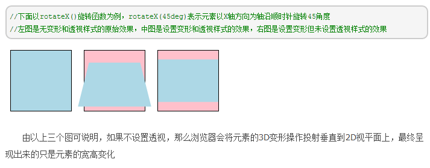
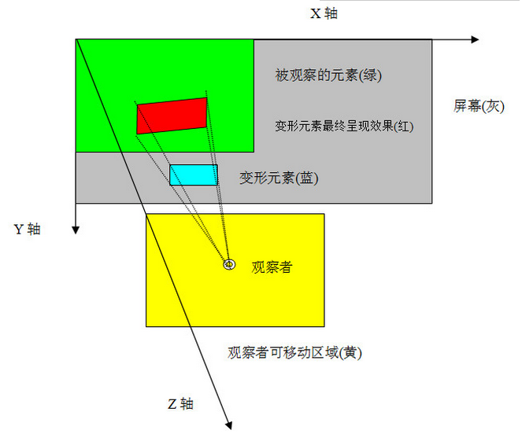

html
javascript
css
uni app
< img src="../../image/l12.jpg" width="70">
...
样式和内容结构分离
内容,结构,表现,行为(如JavaScript判断表单的提交,链接状态)
CSS指层叠样式表(Cascading Style Sheets)
其中的样式定义如何显示HTML元素,样式通常保存在外部的.css文件中
@charset "utf-8";
【 color 】
currentColor是color属性的值,具体意思是指：currentColor关键字的使用值是color属性值的计算值
currentColor不是一个css属性,而是color的属性值。它返回当前的标签所继承的文字颜色
div class="outside"
div class="inside"
.outside{width:200px;height:200px;color:blue;background-color:yellow}
.inside{width:100px;height:100px;color:red;background-color:pink;border:1px solid currentColor}
最终.inside的border颜色为red,即当前元素的color值
透明度的取值从0(完全透明)到1(完全不透明)
在CSS3里可以使用RGBA和HSLA两种色彩模式,都可以用来在设置颜色的同时也可以设置它的透明度。
RGBA指的是“红色、绿色、蓝色和Alpha透明度”(Red-Green-Blue-Alpha)
在RGBA模式里前三个参数分别是红色、绿色和蓝色的强度值,取值从0~255或0%-100%
直接写颜色名,如红色red
十六进制颜色,如红色#FF0000
RGB颜色,如红色rgb(255,0,0)
RGBA颜色,如半透明的红色rgba(255,0,0,0.5)
HSL色彩是一种工业界的色彩标准,因为它能涵盖到人类视觉所能感知的所有颜色,所以在工业界广泛应用
HSLA则代表“色调、饱和度、亮度和Alpha透明度”(Hue-Saturation-Lightness-Alpha)。
在HSLA模式里前三个参数则分别代表色调(0-360)、饱和度(0%-100%)和亮度(0%-100%)
background-color: rgb(166, 218, 220);
background-color: rgba(166, 218, 220, .5);
background-color: hsl(180, 100%, 50%)
background-color: hsla(182, 44%, 76%, .5);
针对IE的兼容：IE8及之前的版本不支持HSLA/RGBA,但有以下备选方案：
1、为这些浏览器指定HEX、RGB或HSL格式的不透明背景
2、将一小张半透明PNG图片平铺作为背景图(但会增加一次HTTP请求,而且IE6不支持Alpha透明PNG图片)
3、使用Gradient(渐变)滤镜
【 长度单位 】
绝对长度单位：cm mm in pt
相对长度单位：px em rem相当于百分比
1em是相对于当前元素本身的字体尺寸即font-size属性,默认元素字体大小是根据父元素字体大小设置的
rem表示"root em",指根元素html的em大小,默认html的font-size=16px
web前端领域,像素分为设备像素和CSS像素
一个CSS像素的大小是可变的,比如用后缩放页面的时候,实际上就是在缩小或放大CSS像素,而设备像素无论大小还是数量都是不变的
px是抽象的css单位,一个px在不同的设备下有不同的物理像素(换算由浏览器操作),是浏览器提供的统一的标准单位,使在不同设备下有相同的效果
设备像素比(Device Pixel Ratio 简称：DPR)
公式成立的大前提：(缩放比例为1)
设备像素比(DPR) = 设备像素个数 / 理想视口CSS像素个数(device-width)
设备像素比对于不同的设备是不同的,但他们都是合理的,比如iphone的设备像素是320px,理想视口也是320px,所以iphone的DPR=1,而后来iphone的设备像素为640px,理想视口还是320px,所以后来iphone的DPR=2,在开发中打开浏览器的调试工具可以看到设备像素比
对于dpr更通俗的说法叫一倍屏、两倍屏、三倍屏
scale是屏幕拉伸比,也就是视口上的initial-scale、maximum-sacle等属性
scale和dpr的关系是倒数
PPI全称为Pixel Per Inch,译为每英寸像素取值,更确切的说法应该是像素密度,也就是衡量单位物理面积内拥有像素值的情况
一般来说,当然希望PPI值越高越好,因为更高的PPI意味着在同一实际尺寸的物理屏幕上能容纳更多的像素,能够展现更多的画面细节,也就意味着更平滑的画面
【 css3自适应布局单位vw,vh 】
视口单位(Viewport units)
桌面端视口指浏览器的可视区域;而移动端涉及3个视口：Layout Viewport(布局视口),Visual Viewport(视觉视口),Ideal Viewport(理想视口)
根据CSS3规范,视口单位主要包括以下4个：
1.vw：1vw等于视口宽度的1%
2.vh：1vh等于视口高度的1%
3.vmin：选取vw和vh中最小的
4.vmax：选取vw和vh中最大的
vh and vw：相对于视口的高度和宽度,而不是父元素的(CSS百分比是相对于包含它的最近的父元素的高度和宽度)。1vh等于1/100的视口高度,1vw等于1/100的视口宽度。
比如浏览器高度950px,宽度1920px, 1 vh = 950px/100 = 9.5px,1vw = 1920px/100 =19.2px。
vmax相对于视口的宽度或高度中较大的那个,其中最大的那个被均分为100单位的vmax。
vmin相对于视口的宽度或高度中较小的那个,其中最小的那个被均分为100单位的vmin。
移动端用rem布局时候根据不同的屏幕宽度要设置不同的font-size来做到适配,要写一坨JS来设置,能不能不用JS呢？
例如：以750px设计稿作为基准,根节点设置font-size为100px,只考虑DPR为2的情况,只考虑最简单的情况
document.querySelector('html').style.fontSize = `${window.innerWidth / 7.5 }px`;
现在移动端css3单位vw,wh兼容性已经很不错了,在不需要兼容太低版本的安卓机情况下可以这样来：
html{font-size: calc(100vw / 7.5)}
【 数学表达式calc() 】
calc是calculate计算的缩写,允许使用+、-、*、/四种运算符,可以混合使用%、px、em、rem等单位进行计算
+和-运算符两边一定要有空白符
width: calc(100%/3 - 2*1em - 2*1px);
对于不能小于0的属性值,当运算结果小于0时按0处理
width: calc(10px - 20px);
兼容性
.elm {
/*Firefox*/
-moz-calc(expression);
/*chrome safari*/
-webkit-calc(expression);
/*Standard */
calc();
}
消除默认内边距,但通配符占用内存资源
*{margin:0;padding:0;font-size:14px;box-sizing:border-box;}
h1,h2,h3,h4,h5,h6,p,div,ul,li,ol,dl,dt,dd,table,tr,td,th,header,nav,main,section,aside,srticle,footer{
margin:0;padding:0;box-sizing:border-box;
}
【 插入导入加载css 】
1、head标签内部导入外部样式表：用于很多页面,每个页面使用文档头部的link标签链接到样式表。
文件不能包含任何的html标签,样式表文件以.css扩展名进行保存
＜link rel="stylesheet" type="text/css" href="mystyle.css" /＞
2、内部样式表：当单个文档需要特殊的样式时就应该在HTML元素内部使用内部样式表
可以使用style标签在文档头部head定义内部样式表
＜style>
p{font-size: 16px;}
＜/style>
3、内联样式表：当样式仅需要在一个元素上应用一次时,
要使用内联样式,需要在相关的标签内使用样式(style)属性。Style属性可以包含任何CSS属性
＜p style="color: sienna; margin-left: 20px">This is a paragraph＜/p>
4、head标签内部用@import导入式样式表
区别：加载顺序的差别。当一个页面被加载的时候,link引用的CSS会同时被加载,而@import引用的CSS会等到页面全部被下载完再被加载。@import可以在css中再次引入其他样式表,比如可以创建一个主样式表,在主样式表中再引入其他的样式表
main.css
———————-
@import"sub1.css";
@import"sub2.css";
缺点: 对网站服务器产生过多的HTTP请求,以前是一个文件,而现在却是两个或更多文件了,服务器的压力增大,浏览量大的网站还是谨慎使用
＜style type="text/css">@import url("basic.css");＜/style>
// app.css
@import url('https://fonts.googleapis.com/css?family=Nunito');
link标签定义文档与外部资源的关系,最常见的用途是链接样式表 link元素是空元素,仅包含属性,只能存在于head部分,不过它可出现任何次数 ＜link rel="stylesheet" type="text/css" href="mystyle.css" /＞ 1、type MIME_type,规定被链接文档的MIME类型 type="text/css" 2、href URL,规定被链接文档的位置 绝对URL指向另一个站点(比如href="http://www.example.com/theme.css"),相对URL指向站点内的某个文件(href="/themes/theme.css") 3、hreflang language_code,规定被链接文档中文本的语言 4、media media_query,规定被链接文档将被显示在什么设备上,用于为不同的媒介类型规定不同的样式,所有浏览器都支持值为"screen"、"print"及"all"的media属性 两种不同的样式表,针对两种不同的媒介类型(计算机屏幕和打印) ＜link rel="stylesheet" type="text/css" href="theme.css" /＞ ＜link rel="stylesheet" type="text/css" href="print.css" media="print"/＞ screen 计算机屏幕(默认) tty 电传打字机以及类似的使用等宽字符网格的媒介 tv 电视机类型设备(低分辨率、有限的滚屏能力) projection 放映机 handheld 手持设备(小屏幕、有限带宽) print 打印预览模式/打印页面 braille 盲人点字法反馈设备 aural 语音合成器 all 适用于所有设备 5、sizes sizes="heightxwidth|any" 规定被链接资源的尺寸,仅适用于rel="icon";该属性可接受多个值,值由空格分隔 heightxwidth:为被链接的图标规定一个或多个以像素计的高度/宽度值对,高度与宽度之间由x或X分隔 any:规定图标是可伸缩的(比如SVG图像) ＜link rel="icon" href="logo.png" type="image/png" sizes="16x16" /> 6、rel属性 规定当前文档与被链接文档之间的关系,只有rel属性的"stylesheet"值得到了所有浏览器的支持,其他值只得到了部分地支持 stylesheet 文档的外部样式表。 alternate 文档的替代版本(比如打印页、翻译或镜像)。 start 集合中的第一个文档。 next 集合中的下一个文档。 prev 集合中的上一个文档。 contents 文档的目录。 index 文档的索引。 glossary 在文档中使用的词汇的术语表(解释)。 copyright 包含版权信息的文档。 chapter 文档的章。 section 文档的节。 subsection 文档的小节。 appendix 文档的附录。 help 帮助文档。 bookmark 相关文档。
CSS规则由两个主要的部分构成：选择器及一条或多条声明
selector {declaration1; declaration2; ... declarationN }
selector html元素{property属性: value值}
body {
color: #000;
background: #fff;
margin: 0;
padding: 0;
font-family: "Microsoft YaHei",sans serif", serif; //并列项使用逗号分隔,一个项有空格或特殊字符时加引号
}
// 为了兼容ie6和ie7,*代表是专给ie6/7写的,引文它们不能兼容display:inline-block;
div.ib{
display:inline-block;
*display:inline;
*zoom:1;
}
【 css优先级 】 Id选择符 > 类选择 > 类型选择符 多个样式层叠与一个html元素时的层叠次序规则：就近原则,作用范围越小优先权越高 浏览器缺省设置
MDN上css变量不兼容IE,CSS变量可借助SASS或LESS这类预编译器 【 声明一个css变量 】 命名不能包含$[^(%等字符,普通字符局限在[0-9a-zA-Z_-]组合,但可以是中文、日文或韩文在全局:root{ }伪类中定义一个CSS变量,取名为--bgColor
:root{
--bgColor:#000;
}
【 使用css变量 】 CSS变量使用的完整语法为：var( < 自定义属性名> [, < 默认值 ]? ),如果使用的变量没有定义则使用后面的值作为元素的属性值
.box {
--1: #369;
}
body {
background-color: var(--1, #cd0000); /* 此时的背景色是#369 */
}
.classname{ background:var(--bgColor); } /* var(定义的变量名) */
CSS变量不合法的缺省特性
body {
--color: 20px;
background-color: #369;
background-color: var(--color, #cd0000); //变量值不合法则使用背景色的缺省值即默认值代替transparent
}
body {
--size: 20px;
font-size: var(--size);
}
body {
--size: 20;
font-size: calc(var(--size) * 1px);
}
【 CSS变量的空格尾随特性 】
//font-size:var(--size)px等同于font-size:20 px,注意20后面有个空格,所以这里的font-size是body元素默认的大小
body {
--size: 20;
font-size: var(--size)px;
}
【 CSS变量的相互传递特性 】 在CSS变量定义的时候可以直接引入其他变量给自己使用,更复杂的使用CSS3 calc()计算
body {
--green: #4CAF50;
--backgroundColor: var(--green);
}
body {
--columns: 4;
--margins: calc(24px / var(--columns));
}
【 CSS变量是具有作用域;支持继承、级联或层叠：局部变量会在作用范围内覆盖全局变量 】 CSS变量不支持!important声明;!important设计初衷是干掉JS的style设置
:root{
--mainColor:red;
}
div{
--mainColor:blue;
color:var(--mainColor);
}
:root { --color: purple; }
div { --color: green; }
#alert { --color: red; }
* { color: var(--color); }
我的紫色继承于根元素
我的绿色来自直接设置
ID选择器权重更高,因此阿拉是红色！
我也是红色,占了继承的光
【 CSS变量的组合 】
:root{
--word:"this";
--word-second:"is";
--word-third:"CSS Variable";
}
div::before{
content:var(--word)' 'var(--word-second)' 'var(--word-third);
}
【 CSS变量与计算属性calc( ) 】
:root{
--margin: 10px;
}
div{
text-indent: calc(var(--margin)*10); // text-indent:100px
}
【 响应式媒体查询 】
:root {
--mainWidth:1000px;
--leftMargin:100px;
}
.main {
width: var(--mainWidth);
margin-left: var(--leftMargin);
}
@media screen and (min-width:1480px) {
:root {
--mainWidth:800px;
--leftMargin:50px;
}
}
默认是4栏;字号、间距随着栏目数量的减小也一并减小,然后每栏之间间距是扩大
.box {
--columns: 4;
--margins: calc(24px / var(--columns));
--space: calc(4px * var(--columns));
--fontSize: calc(20px - 4 / var(--columns));
}
@media screen and (max-width: 1200px) {
.box {
--columns: 3;
}
}
@media screen and (max-width: 900px) {
.box {
--columns: 2;
}
}
@media screen and (max-width: 600px) {
.box {
--columns: 1;
}
}
【 css变量与js交互 】
:root{
--testMargin:75px;
}
// 读取
var root = getComputedStyle(document.documentElement);
var cssVariable = root.getPropertyValue('--testMargin').trim();
console.log(cssVariable); // '75px'
// 写入
document.documentElement.style.setProperty('--testMargin', '100px');
CSS计数器只能跟content属性在一起用,而content属性专门用在before/after伪元素上 CSS计数器的2个属性和1个方法： 1. 【 counter-reset: 计数器重置 】 给计数器起名和开始计数的数值,默认0
.xxx { counter-reset: small-apple; } /* 计数器名称是'small-apple' */
.xxx { counter-reset: small-apple 2; } /* 计数器名称是'small-apple', 并且默认起始值是2 */
.xxx { counter-reset: wangxiaoer 2 wangxiaosan 3; }
.xxx { counter-reset: none/inherit } /*干掉重置及继承重置*/
.counter {
counter-reset: wangxiaoer 2 wangxiaosan 3;
counter-increment: wangxiaoer;
font: "Microsoft YaHei" normal bold 2rem; color: #cd0000;
font:italic bold 12px/20px arial,sans-serif;
}
.counter:before { content: counter(wangxiaoer); } /*默认递增一次,值为3*/
.counter:after { content: counter(wangxiaosan); } /*值为3,因为没有设置counter-increment*/
2. 【 counter-increment: 计数器递增 】 值为counter-reset的1个或多个关键字,后面可以跟随数字表示每次计数的变化值,默认变化值1 counter-increment: counter -1 //递减排序效果 counter-increment: none/inherit
.counter { counter-reset: wangxiaoer 2; counter-increment: wangxiaoer; }
.counter:before { content: counter(wangxiaoer); }
// counter-increment直接设置在伪元素上
.counter { counter-reset: wangxiaoer 2; }
.counter:before { content: counter(wangxiaoer); counter-increment: wangxiaoer; }
// 如果父元素和子元素都被counter-increment递增1遍,共两次递增,counter-reset设置的计数器值增加2次,计数起始值是2,现在值为4
.counter { counter-reset: wangxiaoer 2; counter-increment: wangxiaoer;}
.counter:before { content: counter(wangxiaoer); counter-increment: wangxiaoer; }
// 显示34,递增2次,第一个子元素递增时计数器+1,第二个子元素递增时,计数器再+1
.counter { counter-reset: wangxiaoer 2;}
.counter:before,.counter:after { content: counter(wangxiaoer); counter-increment: wangxiaoer; }
3. 【 counter() 输出显示计数 】 计数器的数值变化遵循HTML渲染顺序,遇到一个increment计数器就变化,什么时候counter输出就输出此时的计数值 counter(name) // name就是counter-reset的名称 counter(name, style) // style参数支持的关键字值是list-style-type,递增递减可以是数字、英文字母、罗马文等 counter还支持级联,也就是一个content属性值可以有多个counter()方法 list-style-type：disc | circle | square | decimal | lower-roman | upper-roman | lower-alpha | upper-alpha | none | armenian | cjk-ideographic | georgian | lower-greek | hebrew | hiragana | hiragana-iroha | katakana | katakana-iroha | lower-latin | upper-latin显示小写罗马文 iii iv
.counter { counter-reset: wangxiaoer 2; font-size: 24px; font-family: arial black; color: #cd0000; }
.counter:before,.counter:after { display: block; content: counter(wangxiaoer, lower-roman); counter-increment: wangxiaoer; }
Unicode字符'\A'使inline水平元素换行;pre显示空格和换行符;显示2换行符3
.counter { counter-reset: wangxiaoer 2 wangxiaosan 3; font-size: 24px; font-family: arial black; color: #cd0000; }
.counter:before { content: counter(wangxiaoer) '\A' counter(wangxiaosan); white-space: pre; }
< div class="counter">内容< /div>
2
3内容
4.【 counters()输出显示嵌套计数 】 counter() 输出形式：1,2,3,4,... counters()格式化输出形式：1.1,1.2,1.3,... 用法： counters(name, string); string参数为字符串(需要引号),必须参数,表示子序号的连接字符串,如1.1的string就是'.', 1-1就是'-' counters()也是支持style自定义递增形式的,与counter()的style参数使用一致 counters(name, string, style)嵌套的counter展示层级结构
// 一个容器的reset是唯一的,一旦子元素出现reset,会改变整个容器的嵌套关系
.reset { counter-reset: wangxiaoer; line-height: 1.6; color: #666; padding-left: 20px; }
.counter:before { content: counters(wangxiaoer, '-') '. '; counter-increment: wangxiaoer; font-family: arial black; }
我是王小二
我是王小二的大儿子
我是王小二的二儿子
我是王小二的二儿子的大孙子
我是王小二的二儿子的二孙子
我是王小二的二儿子的小孙子
我是王小二的三儿子
我是王小三
我是王小四
我是王小四的大儿子
【 CSS计数器实际应用 】 相比传统的ol、ul列表计数,CSS计数器的优势就在于灵活与强大,只要有有序序号呈现的地方就能使用CSS计数器,不足就是IE6/IE7不支持 banner图片上小数字显示第几张图利用content的counter属性针对多个项目追加连续编号,h1按照顺序添加1. 2. 3. 等
h1{ counter-increment:my; }
h1:before{ content:counter(my)'、'; }
默认插入的项目编号是数字型的,1,2,3...自动递增,也能给项目编号追加文字和样式
h1{ counter-increment:my; }
h1:before{ content:'第'counter(my)'章'; color:red; font-size:42px; }
利用content(计数器名,编号种类)格式的语法指定编号种类,编号种类的参考可以依据ul的list-style-type属性值
h2{ counter-increment:my; }
h2:before{ content:counter(my,upper-alpha); color:red; font-size:42px; }
大编号中嵌套中编号,中编号中嵌套小编号,h1编号连续,所有p编号连续
h1{ counter-increment:h; }
h1::before{ content:counter(h)'.'; }
p{ counter-increment:p; }
p::before{ content:counter(p)'.'; margin-left:40px; }
大编号中嵌套中编号,中编号中嵌套小编号,h1编号连续,每个h1下的p编号连续
h1{ counter-increment:h; counter-reset:p; }
h1::before{ content:counter(h)'.'; }
p{ counter-increment:p; }
p::before{ content:counter(p)'.'; margin-left:40px; }
多层嵌套
h1{ counter-increment:h1; counter-reset:h2; }
h1::before{ content:counter(h1)'.'; }
h2{ counter-increment:h2; counter-reset:h3; margin-left:40px; }
h2::before{ content:counter(h1) '-' counter(h2); }
h3{ counter-increment:h3; margin-left:80px; }
h3::before{ content:counter(h1) '-' counter(h2) '-' counter(h3); }
在 CSS3 中包含了四种组合方式:
分组选择器(以逗号分隔)
后代选择器(以空格分隔)
子元素选择器(以大于号分隔）
相邻兄弟选择器（以加号分隔）
普通兄弟选择器（以破折号分隔）
【 选择器分组 】
h1,h2,h3,h4,h5,h6 { color: green; }
【 通配选择器 】universal selector
通配符星号(*)与任何元素匹配等价于列出了文档中所有元素的一个分组选择器
* {color:red;} 使文档中所有元素的color属性值指定为red,执行效率低,不建议使用
#container * { border: 1px solid black; }
【 元素选择器 】
所有元素就是最基本的元素选择器,即以元素名作为选择器,又称为类型选择器(type selector)
【 后代选择器又称包含选择器 】
派生选择器：通过依据元素在其位置的上下文关系来定义样式,你可以使标记更加简洁
li strong { font-style: italic; font-weight: normal; }
【 子元素选择器 】
div > p {color:red;} 父元素div下面的所有直接子元素p,不会选择子元素的子元素
【 兄弟选择器 】
ul ~ p { color: red; } 选择ul元素后面的所有匹配的同级p元素
【 相邻兄弟选择器 】
选择紧接在另一元素后的元素,有相同的父元素
h1 + p {margin-top:50px;} 紧接h1后面的第一个p元素
【 id选择器 】
为标有特定id属性的HTML元素指定特定的样式,以"#"来定义,id属性只能在每个HTML文档中出现一次
#sidebar p { font-style: italic; text-align: right; margin-top: 0.5em; }
#sidebar h2 { font-size: 1em; font-weight: normal; margin: 0; line-height: 1.5; text-align: right; }
【 CSS类选择器 】
以一个点号显示,和id一样class也可被用作派生选择器
.important {font-weight:bold;}
.warning {font-style:italic;}
.important.warning {background:silver;}
class=" important warning"
.fancy td { color: #f60; background: #666; }
td.fancy { color: #f60; background: #666; }
【 属性选择器 】
为拥有指定属性的HTML元素设置样式
a[title] { color: green; } 只会选择有title属性的a元素
a[href][title] {color:red;} 只会选择有href、title属性的a元素
[title="W3School"] { border:5px solid blue; }
a[href="baidu"] {color: #1f6053;} 指定href属性中必须出现baidu
a[data-filetype="image"] {color: red;}
属性和值
可以使用正则表达式
[abc~=def] 选择abc属性值是空格分隔多值中存在def值标签
[href^="http"] 选择href属性值以"http"开头的所有元素
[href$=".jpg"] 选择href属性值以".jpg"结尾的所有链接图片
[abc*="def"] 选择abc属性值中包含子串"def"的所有元素
*[lang|="en"] 选择lang属性等于en或以en-开头的所有元素
input[type="text"]{ width:150px; display:block; margin-bottom:10px; background-color:yellow; font-family: Verdana, Arial; }
input[type="button"]{ width:120px; margin-left:35px; display:block; font-family: Verdana, Arial; }
【 a链接状态选择器 】
链接点击的四个阶段：link -> hover -> active -> visited
为了使定义生效,a:hover必须位于a:link和a:visited之后,a:active必须位于a:hover之后
a:link{font:2em;background:yellow; text-decoration:underline; color:red;}
a:visited{font:2em;background:yellow; text-decoration:underline; color:red;}
a:hover{font:2em;background:yellow; text-decoration:underline; color:red;}
a:active{font:2em;background:yellow; text-decoration:underline; color:red;} //向激活(在鼠标点击与释放之间发生的事件)的元素添加特殊的样式
// active对于div貌似起作用
div:active { background: #515151; box-shadow: 0px 1px 1px #063e6b; }
【 伪类选择器 before & after 】
伪类pseudo-classes,以冒号(colon):开始的一个关键词
伪类定义一个元素的特殊状态,这个状态往往和用户的动态交互行为或文档的动态结构化特征有关,因此不能提前写入HTML文档中
伪类不能单独存在,它必须附加在一个选择器上。伪类将只是定义那个选择器的特殊状态
content属性与:before及:after伪元素配合使用来插入生成内容,默认为行内元素
li:before{content:""; color:red;} 在li元素内容之前插入内容
li:after{content:""; color:red;} 在li元素内容之后插入内容
//在目标标签后面补上一段空白,然后将它清除,当overflow:hidden无效时特别管用
.clearfix:after { content: ""; display: block; clear: both; visibility: hidden; font-size: 0; height: 0; }
.clearfix:after,.clearfix:before {content: " ";display: table;}
.clearfix:after {clear: both;}
p:before{content:"Read this-";} p元素内部前面的内容
p:after{content:"Read this-";} p元素内部后面的内容
【 content属性 】
content属性与:before及:after伪元素配合使用来插入生成内容,默认为行内元素
content可能的值：
string 定义文本内容,特殊字符形状如"\2715",结合字体文件icomoon代替图标图片
url 定义url,如插入图片
counter(name)
counter(name, list-style-type)
counters(name, string)
counters(name, string, list-style-type)
attr(X) 定义显示在该选择器之前或之后的选择器的属性。
open-quote
close-quote
no-open-quote
no-close-quote
none
normal
inherit 从父元素继承content属性的值
例：https://segmentfault.com/a/1190000002750033
h1:before {content:url(/i/logo.gif);} //插入图片
h1:before {content:url(beep.wav);}
h1:before {content:none;}
h1:before {content:"";}
h1:before {content:"h1后插入内容";}
h1:before { content:"\2605";color: red;} // 特殊字符或形状,2605表示☆
/*利用元素的quotes属性指定文字符号,给h1内容添加左右括号*/
h1{ quotes:"(" ")"; }
h1::before{ content:open-quote; }
h1::after{ content:close-quote; }
/*添加双引号要转义,给h2内容添加左右双引号*/
h2{ quotes:"\"" "\""; }
h2::before{ content:open-quote; }
h2::after{ content:close-quote; }
a:after{ content:attr(href); } // 插入属性值
a:after{content: " (" attr(href) ")" ;} // 插入属性值并拼接
a[href^="http"]:empty::before { content: attr(href); } // 使用属性选择器选择空链接显示没有文本值但是href属性具有链接的a元素的链接
鼠标悬浮显示提示文字,用伪元素after配合content属性attr不用js来获得文字
< div data-msg="Open this file in Github Desktop">hover< /div>
div{ width:100px; border:1px solid red; position:relative; }
div:hover:after{ content:attr(data-msg); position:absolute; font-size: 12px; width:200%; line-height:30px; text-align:center; left:0; top:25px; border:1px solid green; }
导航栏下划线跟随效果
ul {display: flex;width: 80%;position: absolute;top: 50%;left: 50%;transform: translate(-50%, -50%);}
li {list-style: none;position: relative;padding: 20px;font-size: 24px;color: #000;line-height: 1;transition: 0.2s all linear;cursor: pointer;border: 1px solid #ccc;}
li::before {content: "";position: absolute;top: 0;left: 100%;width: 0;height: 100%;border-bottom: 2px solid #000;transition: 0.2s all linear;}
li:hover::before {width: 100%;top: 0;left: 0;transition-delay: 0.1s;border-bottom-color: #000;z-index: -1;}
li:hover ~ li::before {left: 0;}
li:active {background: #000;color: #fff;}
【 input 】
改变input焦点光标的颜色
caret-color: auto;
caret-color: red;
::selection{color: yellow;background: rgba(29,163,98,1);} 选中文本默认为蓝色
::-moz-selection{color: yellow;background: rgba(29,163,98,1);} //Firefox
.special::selection { color: yellow;background: rgba(29,163,98,1); background-color: #00b7a3; } // 具体某个选择器下 文本选择样式
匹配元素中被用户选中或处于高亮状态的部分,只可以应用于少数的CSS属性color/background/cursor/outline
:checked伪类是CSS3引入用来表示选择框(radio box、check box或options)的选中状态
input[type=radio]:checked + span{color: purple;} 匹配每个选中的输入元素(仅适用于单选按钮或复选框)
input[type="text"]:enabled{background:yellow;} 为所有已启用的text类型的input设置背景
input[type="text"]:disabled{background:gray;} 禁用
input:focus 获得焦点的元素,用于接收用户输入或键盘事件
input:focus{background:yellow;}
:out-of-range{border:2px solid red;} 匹配值在指定区间之外的input元素
:in-range{border:2px solid green;} 匹配值在指定区间之内的input元素例如input元素中的min和max属性
:optional{background: pink;} 用于匹配非必填的输入元素,input/select/textarea
:required{background: yellow;} 用于匹配设置了"required"属性的表单元素
:read-write 用于匹配可读及可写的元素,只使用于设置了input和textarea元素
:read-only 用于匹配设置readonly属性的元素,适用于input和textarea元素,但是它也适用于设置了readonly属性的元素
input:read-only{ background-color: silver;}
:valid和:invalid选择器可以响应验证type、required、pattern等的结果
:valid: The form field value conforms to the pattern.
:invalid: The form field value does not conform to the pattern.
:valid 选择器在表单元素的值需要根据指定条件验证时设置指定样式。
:invalid 选择器用于在表单元素中的值是非法时设置指定样式
:valid和:invalid选择器只作用于能指定区间值的元素,例如input元素中的min和max属性,及正确的email字段,合法的数字字段等。
:valid{ border-color: green; } input元素中输入的值为合法的,设置绿色
:invalid{border-color: red; }
input[name=name]:invalid {color: red;border-color: red;box-shadow: inset 5px 0 0 red;}
input[name=name]:valid {color: green;border-color: green;box-shadow: inset 5px 0 0 green;}
input:indeterminate {background-color: grey;} //介于选中和未选中的模糊状态,js:checkbox.indeterminate=true;
利用:valid和:invalid来做表单即时校验,让表单检验变得简单优雅,不需要写冗长的JS代码来校验设置样式
.valid { border-color: #429032; box-shadow: inset 5px 0 0 #429032; }
.invalid { border-color: #D61D1D; box-shadow: inset 5px 0 0 #D61D1D; }
.form-group {
width: 32rem; padding: 1rem; border: 1px solid transparent;
&:hover { border-color: #eee; transition: border .2s; }
label { display: block; font-weight: normal; }
input,
textarea {
display: block;
width: 100%;
line-height: 2rem;
padding: .5rem .5rem .5rem 1rem;
border: 1px solid #ccc;
outline: none;
&:valid {
@extend .valid;
}
&:invalid {
@extend .invalid;
}
}
}
收起展开 ~兄弟节点
.checkbox,
.more,
.hide,
.checkbox:checked ~ .label .show {
position:absolute;
left: -999em;
}
.checkbox:checked ~ .more,
.checkbox:checked ~ .label .hide {
position: static;
}
最后他们得出的结论...投资。
radio单选框下的选项卡切换
.box { width: 50%; min-height: 250px; margin: 1em auto; position: relative; }
.tab { width: 25%; margin-right: -1px; border: 1px solid #ccc; border-bottom: 0; float: left; }
.label { display: block; padding-top: 5px; padding-bottom: 5px; background-color: #eee; text-align: center; }
.radio, .tab_content { position: absolute; left: -999em; }
.radio:checked ~ .tab_content {
margin-top: -1px;
padding: 1em 2em;
border: 1px solid #ccc;
left: 0;
right: 0;
}
.radio:checked ~ .label {
background-color: #fff;
border-bottom: 1px solid #fff;
position: relative;
z-index: 1;
}
我是选项卡1对应的内容
我是选项卡2对应的内容
我是选项卡3对应的内容
利用锚点实现选项卡的切换,缺点：页面跳转,可使用js美化
.box{width:200px; height:100px; border:1px solid #ddd; overflow:hidden;}
.list{width:200px; height:100px; line-height:100px; background:#ddd; font-size:80px; text-align:center;}
.link{width:200px; padding-top:10px; text-align:right;}
.click{display:inline-block; width:20px; height:20px; line-height:20px; border:1px solid #ccc; background:#f7f7f7; color:#333; font-size:12px; font-weight:bold; text-align:center; text-decoration:none;}
.click:hover{background:#eee; color:#345;}
1
2
3
4
纯CSS下的多级下拉效果:树状文件夹列表
*, html { font-family: "Helvetica Neue",Helvetica,Arial,"Lucida Grande",sans-serif; }
body, form, ul, li, p, h1, h2, h3, h4, h5{margin: 0;padding: 0;}
body { background-color: #fff; color: #4C4C4C; margin: 60px 0 0; }
img { border: none; }
p{font-size: 1em;margin: 0 0 1em 0;}
html { font-size: 100%; /* IE hack */ }
body { font-size: 1em; /* Sets base font size to 16px */ }
table { font-size: 100%; /* IE hack */ }
input, select, textarea, th, td { font-size: 1em; }
ol.tree{ padding: 0 0 0 30px; width: 300px; }
li{position: relative;margin-left: -15px;list-style: none;}
li.file{margin-left: -1px !important;}
li.file a{background: url(image/document.png) 0 0 no-repeat;color: #4C4C4C;padding-left: 21px;text-decoration: none;display: block;}
li.file a[href *= '.pdf'] { background: url(image/document.png) 0 0 no-repeat; }
li.file a[href *= '.html'] { background: url(image/document.png) 0 0 no-repeat; }
li.file a[href $= '.css'] { background: url(image/document.png) 0 0 no-repeat; }
li.file a[href $= '.js'] { background: url(image/document.png) 0 0 no-repeat; }
li input{position: absolute;left: 0;margin-left: 0;opacity: 0;z-index: 2;cursor: pointer;height: 1em;width: 1em;top: 0;}
li input + ol{background: url(image/toggle-small-expand.png) 40px 0 no-repeat;margin: -0.938em 0 0 -44px;height: 1em;}
li input + ol > li { display: none; margin-left: -14px !important; padding-left: 1px; }
li label{background: url(image/folder-horizontal.png) 15px 1px no-repeat;cursor: pointer;display: block;padding-left: 37px;}
li input:checked + ol{background: url(image/toggle-small.png) 40px 5px no-repeat;margin: -1.25em 0 0 -44px;padding: 1.563em 0 0 80px;height: auto;}
li input:checked + ol > li { display: block; margin: 0 0 0.125em;}
li input:checked + ol > li:last-child { margin: 0 0 0.063em; }
美化radio单选框
.radio-beauty-container {
font-size: 0;
}
.radio-beauty-container input[type=radio]:checked + .radio-beauty, .radio-beauty-container .radio-beauty:hover {
padding: 2px;
background-color: green;
background-clip: content-box;
}
.radio-beauty-container .radio-name {vertical-align: middle;font-size: 16px;}
.radio-beauty-container .radio-beauty {
width: 18px;
height: 18px;
box-sizing: border-box;
display: inline-block;
border: 1px solid green;
vertical-align: middle;
margin: 0 15px 0 3px;
border-radius: 50%;
}
.radio-beauty-container .radio-beauty:hover {box-shadow: 0 0 7px green;}
美化checkbox复选框
.radio-beauty-container {
font-size: 0;
}
.radio-beauty-container input[type=radio]:checked + .radio-beauty, .radio-beauty-container .radio-beauty:hover {
padding: 2px;
background-color: green;
background-clip: content-box;
}
.radio-beauty-container .radio-name {
vertical-align: middle;
font-size: 16px;
}
.radio-beauty-container .radio-beauty {
width: 18px;
height: 18px;
box-sizing: border-box;
display: inline-block;
border: 1px solid green;
vertical-align: middle;
margin: 0 15px 0 3px;
border-radius: 50%;
}
.radio-beauty-container .radio-beauty:hover {
box-shadow: 0 0 7px green;
}
苹果
香蕉
橘子
【 结构和类型 】
li:nth-child(2) 前面没限制的话就是任意父元素的第2个子元素必须是li才能匹配到
li:nth-child(2n) 选择每隔一行
li:nth-child(4n) 选择每隔3个
li:nth-child(3n+1) 选择第一个以及随后每隔开3个位置的子元素
li:nth-last-child(n) 同上
:nth-child(3) 表示选择列表中的第三个元素
:nth-child(2n)表示列表中的偶数标签，即选择第2、第4、第6……标签
:nth-child(2n-1) 表示选择列表中的奇数标签，即选择第1、第3、第5、第7……标签
:nth-child(n+3) 表示选择列表中的标签从第3个开始到最后（>=3）
:nth-child(-n+3) 表示选择列表中的标签从0到3，即小于3的标签(<=3)
:nth-last-child(3) 表示选择列表中的倒数第3个标签
:nth-of-type(n) 匹配属于父元素的特定类型的第N个子元素的每个元素
li:nth-child(odd) 目标对象为所有的奇数子元素
li:nth-child(even) 目标对象为所有的偶数子元素
li:nth-of-type(n) 前面没限制的话就是任意父元素的第n个li元素
li:nth-of-type(2n) 选择每隔一行
li:nth-last-of-type(n)同上
//隔行变色
tbody tr:nth-of-type(2n){ background-color: red;}
tbody tr:nth-of-type(2n+1){background-color: green;}
选择5-10的子元素
table tr:nth-child(n+5):nth-child(-n+10) { background-color: red; }
li:first-child 前面没限制的话就是任意父元素结构上的第一个子元素元素必须是li,包括body
li:last-child 同上
li:only-child 前面没限制的话就是任意父元素的唯一的li元素,没有其他元素才能匹配
li:first-of-type 前面没限制的话就是任意父元素的第一个li元素,包括body,匹配该类型的第一个元素
li:last-of-type 同上
ul > li:only-child { color: red; } ul的所有直接子元素有且只有一个li元素,不能有其他类型的元素
ul > li:only-of-type { color: red; } ul的所有直接子元素中只有一个li元素,可以有其他类型的元素
可以使用::来选中某标签的部分内容如第一段、第一个字,但是必须使用在块式标签上才起作用,::和:是兼容性的问题,等效
p::first-line { font-weight: bold; font-size:1.2em; } //段落的第一行
p::first-letter { float: left; font-size: 2em; font-weight: bold; font-family: cursive; padding-right: 2px; } //段落的第一个字
li:first-line 所有li元素内部的首行
li:first-letter 所有li元素的首字母
:not(p) 非p的所有元素
li.item:not(:last-child) {border-bottom: 1px solid #dedede;}
li:not(:nth-child(-n+3)){ display: none; } // 选择1到3的元素并显示
ul > li:not(:last-child)::after { content: ",";} // li之间用逗号分隔
ul li + li{color: red} // 不包括第一个li
ul li:first-child ~ li{color: red} // 不包括最后一个li
:root 文档的根元素html
p:empty 没有任何子元素(包括文本节点)的每个p元素
【 :target和锚链接 】
URL后面跟有#锚名称指向文档内某个具体的元素,这个被链接的元素就是目标元素(target element)
:target选择器可用于选取当前活动的目标元素
p:target{color:red;} 点击链接锚点对应的p元素文本颜色为红,当前活动的目标元素
div:target{display:block;} 结合锚点实现模态框即弹出框
#news:target 选择当前活动的#news元素
:target{ border: 2px solid #D4D4D4; background-color: #e5eecc; }
请点击上面的链接,:target选择器会突出显示当前活动的HTML锚
内容 1...
内容 2...
选项卡应用
.container{position: relative;}
.container>div>a{display: inline-block;width: 50px;height: 10px;margin: 1px;padding: 20px 55px;background: #ddd;border-radius: 3px;box-shadow: 0 4px 10px -5px #000000;text-decoration: none;}
.container>div>div{position: absolute;left: 180px;top: 0;width: 400px;min-height: 250px;padding: 20px;background: #ddd;}
.container>div:target>a{background: #333;color: white;text-shadow: 0 1px 0 #4C4648;}
.container>div:target>div{z-index: 3;}
.container>div:not(:target) > a {}
@media 媒体类型 and (视口特性阀值){
// 满足条件的css样式代码
}
@media screen and (max-width: 699px) and (min-width: 520px) { }
@media all and (min-width: 321px) and (max-width: 400px){
.box{background: red;}
}
在可打印的网页中显示URLs
@media print {
a:after {
content: " [" attr(href) "] ";
}
}
通用媒体查询
/* Smartphones (portrait and landscape) */
@media only screen and (min-device-width : 320px) and (max-device-width : 480px){}
/* Smartphones (landscape) */
@media only screen and (min-width : 321px){}
/* Smartphones (portrait) */
@media only screen and (max-width : 320px){}
/* iPads (portrait and landscape) */
@media only screen and (min-device-width : 768px) and (max-device-width : 1024px){}
/* iPads (landscape) */
@media only screen and (min-device-width : 768px) and (max-device-width : 1024px) and (orientation : landscape){}
/* iPads (portrait) */
@media only screen and (min-device-width : 768px) and (max-device-width : 1024px) and (orientation : portrait){}
/* Desktops and laptops */
@media only screen and (min-width : 1224px){}
/* Large screens */
@media only screen and (min-width : 1824px){}
/* iPhone 4 */
@media only screen and (-webkit-min-device-pixel-ratio:1.5), only screen and (min-device-pixel-ratio:1.5){}
column-span:all; 规定横跨的列数 column-count:3; 规定分为3列 column-width:100px; 规定列的宽度 column-gap:40px; 规定列间间隔 Column-rule:4px outset #ff0000; 规定列之间的宽度样式和颜色 Column-rule-width Column-rule-style:none/hidden/dotted/solid/dashed/double/ 3D样式：groove|ridge|inset|outset Column-rule-color
opcity:0.5 filter:Alpha(opacity=50) //兼容IE跨浏览器透明
.transparent {
filter: alpha(opacity=50); /* internet explorer */
-khtml-opacity: 0.5; /* khtml, old safari */
-moz-opacity: 0.5; /* mozilla, netscape */
opacity: 0.5; /* fx, safari, opera */
}
css3为图片添加了filter滤镜属性,可以使图片显示很多特殊的效果
filter: none| initial | inherit | filter-function [ filter-function>
百分比参数不设置时默认为100%,js获取为小数值
blur(px) 设置对象的模糊效果。默认0px
brightness(%) 设置对象的亮度。
contrast(%) 设置对象的对比度。
grayscale(%) 设置对象的灰度,全站图片设置成灰色
hue-rotate(deg) 设置对象的色相旋转。默认0deg
invert(%) 设置对象的反色。
opacity(%) 设置对象的透明度。
saturate(%) 设置对象的饱和度。300%
sepia(%) 设置对象的褐色程度。
drop-shadow(x y blur color)：设置对象的阴影。
-webkit-filter: drop-shadow(3px 3px 3px gray);
第一个是水平偏移距离,默认在元素的左边,
第二个是垂直偏移距离,默认在元素的下面,当它们为负值时,阴影向相反方向偏移。
第三个值设置阴影模糊效果,值越大,越模糊。
第四个是阴影颜色。
filter还可以取值为url,url函数接受一个XML文件,该文件设置了 一个SVG滤镜,且可以包含一个锚点来指定一个具体的滤镜元素
网站想瞬间实现黑暗模式
html { background: #fff; }
body { background: #fff; filter: invert(1) hue-rotate(270deg); }
clip是一个css属性,用来定义元素的那一部分用来显示,必须应用在绝对定位的元素上,可以是position:absolute或fixed; clip: auto是不剪裁的意思 clip: rect(top,right,bottom,left); 其中的top、right、bottom、left都是相对于元素的左上角开始计算数值的 clip: rect(top right bottom left); clip: rect(1px, 10em, 3rem, 2ch); clip: rect(1px 10em 3rem 2ch); clip裁剪可以用来隐藏web控件,通过label的for指向web控件实现自定义样式。 clip裁剪可以用来裁剪图片。 clip裁剪可以用来一些动画 当一幅图像的尺寸大于包含它的元素时 ＜img src="image/l2.jpg" border="0" width="120" height="150" style="position:absolute;clip:rect(0px 80px 200px 0px)" > 依据上-右-下-左的顺序提供自对象左上角为(0,0)坐标计算的四个偏移数值,矩形外部的内容不可见,其中任一数值都可用auto替换,即此边不剪切 图片裁剪成半圆 ＜img src="image/l2.jpg" border="0" width="150" height="150" style="border-radius: 75px; position:absolute;clip:rect(0px 75px 200px 0px)" >隐藏控件
css可以使用background-color属性为元素设置背景色,默认值transparent即透明
table、th、td设置不同的背景可以体现出边框来
截图一个像素的图像作为背景平铺,省资源
0、background-color 背景颜色
属性的值为颜色值或关键字"transparent"二者选其一,rgba(255,255,255,0)设置透明度
1、background-image属性,把图像放入背景需要使用,默认值是none,多重背景图时使用逗号分隔
body {
background-image: url(./eg_bg_04.gif);
background-repeat: repeat-y;
background-position:center;
background-attachment:fixed;
}
background:url(bg_flower.gif);
background-image:url(bg_flower.gif),url(bg_flower_2.gif);
2、background-repeat设置背景图像平铺
repeat-ｘ横向,repeat-y纵向,no-repeat不平,默认为repeat横向纵向同时平铺
background-repeat:no-repeat;
3、background-attachment设置背景图像随文档滚动而不滚动,默认值是scroll滚动
background-attachment: fixed改成了position: fixed,因为前面前者滚动实时计算重绘,降低渲染效率
.front::before {
content: '';
position: fixed; // 代替background-attachment
width: 100%;
height: 100%;
top: 0;
left: 0;
background-color: white;
background: url(/img/front/mm.jpg) no-repeat center center;
background-size: cover;
will-change: transform; // 创建新的渲染层
z-index: -1;
}
4、background-position设置背景的位置,可同时设置水平和垂直方向,像素px,长度,百分比,默认左上角0 0 或者 0% 0%
1.关键字:分别对应x、y方向,top、bottom、left、right 和 center,若只设置一个另一个默认为center
2.百分比:默认0% 0%,100% 100%右下角重合;50% 50%背景图和元素的中心对齐,百分数同时应用于元素和图像;若只一个则表示x方向,y默认50%
3.px值:图像偏移xy方向px值
5、background-size:400px 300px; 背景图片尺寸,cover任意大,contain图片最大尺寸
background-size:63px 100px; 背景图片大小,可用百分比则是相对于父元素的宽度和高度
6、background-clip:content-box 背景被裁剪到内容框,border-box背景被裁剪到边框,padding-box内边距框
7、background-origin规定背景图片的定位区域,背景图片可以放置于content-box、padding-box或border-box区域
-webkit-background-origin:content-box; /* Safari */
background-origin:content-box;
所有背景属性设置在一个声明里,简写：
background: #ff0000 url(/i/eg_bg_03.gif) no-repeat fixed center;
background简写的/它和font以及border-radius里简写方式使用的/用法相似。/可以在支持这种写法的浏览器里在background-position后面接着写background-size。
此外也可以增加另外两个描述它的属性值： background-origin和 background-clip
.example {
background: aquamarine
url(img.png)
no-repeat
scroll
center center / 50%
content-box content-box;
}
全屏背景
html {
background: url('images/bg.jpg') no-repeat center center fixed;
-webkit-background-size: cover;
-moz-background-size: cover;
-o-background-size: cover;
background-size: cover;
}
-webkit-font-smoothing: antialiased; // 让页面里的字体变清晰变细 text-indent 缩进,可继承。 text-indent: 5em; color 文本颜色 background-color 文本背景颜色 text-align 对齐方式,left/right/center/justify 实现两端对齐文本效果,;min-width: 100px;text-align: justify;text-align-last: justify; vertical-align 垂直对齐,定义行内元素的基线相对于该元素所在行的基线的垂直对齐,允许指定负长度值和百分比值,这会使元素降低而不是升高。在表单元格中这个属性会设置单元格框中的单元格内容的对齐方式 - baseline 默认,元素放置在父元素的基线上。 - sub 垂直对齐文本的下标。 - super 垂直对齐文本的上标 - top 把元素顶端与行中最高元素顶端对齐 - text-top 把元素的顶端与父元素字体的顶端对齐 - text-bottom 把元素的底端与父元素字体的底端对齐。 - middle 把此元素放置在父元素的中部。 - bottom 把元素的顶端与行中最低的元素的顶端对齐。 - % 使用 "line-height" 属性的百分比值来排列此元素,允许使用负值。

line-height 行高,行间距,百分比默认150%,1.5em;字号越大行高应设置越小,当文本区高度和行高相同时垂直居中
body{line-height:normal; line-height:inherit; line-height:120%; line-height:25px; line-height: 1em; line-height:1.2}
line-height的值紧跟着font-size值使用斜杠分开，如font-size / line-height
body{font:100%/normal arial;} , body{font:100%/120% arial;} ,body{font:100%/1.2 arial;} ,body{font:100%/25px arial;}
不需要分别添加line-height,只要添加到body即可
body {line-height: 1;}
这样文本元素就可以很容易地从body继承
计算后的line-height: 16px*120%=19.2px,计算出来的值会被层叠下去的元素所继承,line-height不随相关font-size相应的比例缩放
body{font-size: 16px;line-height: 120%}
h1{font-size: 32px} 继承的计算后的值19.2px
p{font-size: 16px} 继承的计算后的值19.2px
#footer{font-size: 12px} 继承的计算后的值19.2px
body{font-size: 16px;line-height: 20px} 长度值20px会被后代元素所继承,line-height不随相关font-size相应的比例缩放
h1{font-size: 32px} 继承的值20px
p{font-size: 16px} 继承的值20px
#footer{font-size: 12px} 继承的值20px
normal约为1.2,line-height会随随相关font-size相应的比例缩放
body{font-size: 16px;line-height: normal} 计算后的line-height 16px * 1.2 = 19.2px
h1{font-size: 32px} 计算后的line-height 32px * 1.2 = 38.4px
p{font-size: 16px} 计算后的line-height 16px * 1.2 = 19.2px
#footer{font-size: 12px} 计算后的line-height 12px * 1.2 = 13.4px
既想要normal的灵活又想要设置一个自定义的值时使用纯数字系数的值,line-height会随随相关font-size相应的比例缩放
body{font-size: 16px;line-height: 1.5} 计算后的line-height 16px * 1.5 = 24px
h1{font-size: 32px} 计算后的line-height 32px * 1.5 = 48px
p{font-size: 16px} 计算后的line-height 16px * 1.5 = 24px
#footer{font-size: 12px} 计算后的line-height 12px * 1.5 = 18px
行高是指文本行基线间的垂直距离,基线（base line）并不是汉字文字的下端沿，而是英文字母“x”的下端沿
上行的底线和下一行顶线之间的距离就是行距，而同一行顶线和底线之间的距离是font-size的大小，行距的一半是半行距
font-size: 16px; line-height: 20px;则行间距为4px,半行间距为2px
当font-size等于line-height时行距=line-height-font-size=0；font-size大于line-height时则会出现行距为负值则两行重叠,即上行的底部和下行的顶部重叠
没有设置div的height属性时，div的高度根据line-height的大小而变化，且文字垂直居中
height = line-height时垂直居中,height>line-height时文字处于上部,height < line-height时文字处于下部
移动端line-height不居中问题，在安卓手机会发现文字偏上
1、利用flex布局中的垂直居中属性实现垂直居中,父元素设置display:flex; height:1rem; align-items: center;
子元素transform: scale(0.5); transform-origin: left center;
2、不直接设置line-height=height，而是设置line-height:normal; padding:10px 0;
line-height和padding让元素上下居中
line-height不需要考虑字体大小以及行高，然后计算padding了,只要不换行
模拟table显示的方式处理，通过设置line-height或者padding的方式在内容过长时都会有文字长度溢出的状况发生
外层设置宽度、display: table;
内层设置 display: table-cell; vertical-align: middle;
< div style="width: 300px; height:300px; text-align: center; display: table; background-color: #888; color: #FFF;">
< div style="display: table-cell; vertical-align: middle;">
< h4>这是一段很长很长的话！为了体现折行还要讲好多好多哦！< /h4>
< /div>
< /div>
把box-sizing设置成"border-box"导致height并不总是等于content的高度,所以当lineHeight=height-borderWidth-padding的时line-height的高度才等于content的高度，文字才垂直居中
word-spacing 字符间隔,单词间隔距离,可用px,其默认值normal与设置值为0是一样的
letter-spacing 属性字间隔,单个字符间隔,可用px
white-space 处理空白符,默认为normal,设置为pre时浏览器不会合并空白符不会忽略换行符;nowrap强制在一行内显示
text-transform 字符转换,处理文本大小写：none、uppercase全大写、lowercase全小写、capitalize首字母大写
text-decoration 文本装饰线,有5个值：
none 可以去掉链接的下划线 a {text-decoration: none;}
underline 下线 {text-decoration: overline underline}同时上下线
overline 上线
line-through 贯穿线,删除线
blink 文本闪烁
text-shadow: x-shadow y-shadow blur color; 文本阴影,水平阴影位置垂直阴影位置,模糊距离
direction属性影响块级元素中文本的书写方向、表中列布局的方向、内容水平填充其元素框的方向、以及两端对齐元素中最后一行的位置。
默认值从左到右ltr,从右到左rtl
文本两端对齐
div.justify{border:1px solid red;min-width: 100px;text-align: justify;text-align-last: justify;}
账号
密码
电子邮件
// scss样式
.justify-text {
.li {
padding: 0 20px;
margin-top: 10px;
width: 100px;
background-color: #f13f84;
line-height: 40px;
text-align-last: justify;
color: #fff;
list-style: none;
&:first-child {
margin-top: 0;
}
}
}
/* 用CSS动画实现省略号动画 */
.loading:after {
overflow: hidden;
display: inline-block;
vertical-align: bottombottom;
animation: ellipsis 2s infinite;
content: "\2026"; /* ascii code for the ellipsis character */
}
@keyframes ellipsis {
from {width: 2px;}
to {width: 15px;}
}
多行文本溢出显示省略号(...)
多行文字溢出,scss样式添加注释autoprefixer: off并不是为了说明什么,而是,在webpack打包编译时,如果没有这个注释,-webkit-box-orient: vertical会被忽略掉
width:200px;
overflow : hidden;
text-overflow: ellipsis;
display: -webkit-box;
-webkit-line-clamp: 2; // 行数
/* autoprefixer: off */
-webkit-box-orient: vertical;
/* autoprefixer: on */
单行文本溢出显示省略号(...)隐藏,用CSS实现省略号文字截断
width:200px;
white-space:nowrap;
text-overflow:ellipsis;
overflow:hidden;
显示全部文字
white-space:normal;
word-break:break-word;
text-overflow:inherit;
overflow 属性规定当内容溢出元素框时发生的事情 overflow-x overflow-y
object.style.overflow="scroll"
visible 默认值。内容不会被修剪,会呈现在元素框之外。
hidden 内容会被修剪,并且其余内容是不可见的。
scroll 内容会被修剪,但是浏览器会显示滚动条以便查看其余的内容。
auto 如果内容被修剪则浏览器会显示滚动条以便查看其余的内容.由浏览器决定如何显示,如果需要则显示滚动条
-webkit-overflow-scrolling: touch; 让overflow:scroll平滑滚动
自定义滚动条样式
::-webkit-scrollbar 定义滚动条整体的样式
::-webkit-scrollbar-thumb 滑块部分
::-webkit-scrollbar-track 轨道部分
text-overflow 属性规定当文本溢出包含元素时发生的事情
clip 修剪文本,溢出的文本被裁剪不予显示
ellipsis 显示省略符号来代表被修剪的文本
string 使用给定的字符串来代表被修剪的文本
white-space 属性设置如何处理元素内的空白
normal 默认。空白会被浏览器忽略。
pre 空白会被浏览器保留。其行为方式类似 HTML 中的 pre 标签。
nowrap 文本不会换行,文本会在在同一行上继续,直到遇到br标签为止。
pre-wrap 保留空白符序列,但是正常地进行换行。
pre-line 合并空白符序列,但是保留换行符。
inherit 规定应该从父元素继承 white-space 属性的值。
input{
cursor: auto;
display: block;
height: 1.4rem;
text-overflow: clip;
overflow: hidden;
white-space: nowrap; // 不换行
min-height: 1.4rem;
}
word-break 属性规定自动换行的处理方法,强制换行
normal 使用浏览器默认的换行规则。
break-all 允许在单词内换行。
keep-all 只能在半角空格或连字符处换行
hyphenate
word-wrap 属性用来标明是否允许浏览器在单词内断句,是防止当一个字符串太长而找不到它的自然断句点时产生溢出现象
break-word 为了防止长单词溢出,就在长单词内部断句
浏览器默认过长的单词会在新行显示,如果超过行宽会溢出
break-word则会在在新行的基础上断句,首先尝试挪到下一行,看看下一行的宽度够不够,不够的话就进行单词内的断句。
而word-break:break-all不会尝试把长单词挪到下一行,而是直接进行单词内的断句折行
/* pre标签内部自动换行 */
pre{ white-space: pre-wrap; word-wrap: break-word; }
/* 包裹长文本,文本过长自动换行不会穿破盒子 */
pre { white-space: pre-line; word-wrap: break-word; }
【 文本阴影 】 /*文本水平阴影、垂直阴影、模糊距离模糊程度、阴影的颜色 */ text-shadow: 5px 5px 5px #FF0000; 文字的3D效果使用text-shadow累加,并且逐步加深颜色,阴影在左和阴影在右 text-shadow:1px 1px #FB1E1E,2px 2px #EF1E1E,3px 3px #E21B1B,4px 4px #D31C1C,5px 5px #C61B1B,6px 6px #B71919; text-shadow:-1px 1px #1AC33E,-2px 2px #19B43A,-3px 3px #19A536,-4px 4px #189332,-5px 5px #16872E,-6px 6px #147829;
/* 制造模糊文本 */
.blurry-text {
color: transparent;
text-shadow: 0 0 5px rgba(0,0,0,0.5);
}
/* 模糊文字 */
text-shadow: 0 0 5px red;
-webkit-text-fill-color:transparent;
/* 渐变文字 */
background: linear-gradient(to bottom,white,black);
-webkit-text-fill-color:transparent;
-webkit-background-clip:text;
/* 图片背景文字 */
width:500px;
height:300px;
line-height: 300px;
background: url(bg.jpg) norepeat contain;
font: 70px bold;
text-align: center;
-webkit-text-fill-color:transparent;
-webkit-background-clip:text;
【 文字描边 】 -webkit-text-stroke定义文字字符描边的宽度和颜色,唯独IE不支持 它是-webkit-text-stroke-width和-webkit-text-stroke-color两个css样式的缩写
/* 实现镂空空心文字 */ -webkit-text-stroke: 2px #C73A14; color:transparent;
【 实现文字的波浪线效果 】 在重置a标签的默认样式时经常要这样写：text-decoration: none; text-decoration属性是一个复合属性,由line、style和color组成 可惜line只有underline(下划线)、overline(上划线)和line-through(删除线) 思路:首先要用两段渐变构造一个基本元素：'X',下一步就要截取'X'的上半部分得到一个'V',从而结合repeat形成波浪线用scss写的一个mixin
@mixin waveline($color,$h) {
position: relative;
&::after {
content: '';
display: block;
position: absolute;
top: 100%;
left: 0;
width: 100%;
height: $h;
background: linear-gradient(135deg, transparent, transparent 45%, $color, transparent 55%, transparent 100%),linear-gradient(45deg, transparent, transparent 45%, $color, transparent 55%, transparent 100%);
background-size: $h * 2 $h * 2;
}
}
【 writing-mode属性 】 页面回到顶部文字实现原理就是设置一定宽度让其折行,另外就是用到writing-mode属性使容器的文字从上到下排列,而不是从左往右排列 实际上writing-mode这个CSS属性在上古时代就诞生了,IE5.5浏览器就已经支持了 writing-mode的原本作用 和float属性有些类似,writing-mode原本设计的是控制内联元素的显示的。因为亚洲尤其像中国这样的东亚国家,存在文字的排版不是水平式的而是垂直的,例如中国的古诗古文。 因此writing-mode就是用来实现文字可以竖着呈现的 相同的writing-mode属性值并不会累加,例如父子均设置了writing-mode:tb-rl,只会渲染一次,子元素并不会2次"旋转"。 IE浏览器下一个自身具有布局的元素(不是纯文本之类元素)如果writing-mode属性值和父元素不同,当子元素的布局流变化时其父元素坐标系统的可用空间会被充分利用。 IE浏览器下当布局元素从水平变成垂直时想象为元素在垂直方向是100%自适应父元素高度的。所以IE浏览器下(不包括IE13+),元素vertical流的时候会发现高度高的吓人,布局和其他现代浏览器不一样,就是这个原因。 writing-mode语法 writing-mode有两套不同的语法,一个是IE私有属性,第二个是CSS3规范属性。 CSS3语法： /* 关键字值 */ writing-mode: horizontal-tb; // 默认值,文本流是水平方向(horizontal)的,元素是从上往下(tb:top-bottom)堆叠的 writing-mode: vertical-rl; // 文本是垂直方向(vertical)展示,然后阅读的顺序是从右往左(rl:right-left) writing-mode: vertical-lr; // 文本是垂直方向(vertical)展示,然后阅读的顺序还是默认的从左往右(lr:left-right) /* 全局值-关键字inherit IE8+,initial和unset IE13才支持 */ writing-mode: inherit; writing-mode: initial; writing-mode: unset; IE浏览器的语法: writing-mode: lr-tb | rl-tb | tb-rl | bt-rl | tb-lr | bt-lr | lr-bt | rl-bt | lr | rl | tb 需要关注的writing-mode属性值 writing-mode: lr-tb | tb-rl | tb-lr (IE8+); writing-mode: horizontal-tb | vertical-rl | vertical-lr; lr-tb 初始值。内容从左往右(left-right),从上往下(top-bottom)水平流动,以及下一行水平元素在上一行元素的下面,所有符号都是直立定位。大部分的书写系统都是使用这种布局。 tb-rl 内容从上往下(top-bottom),从右往左(right-left)垂直流动, 下一个垂直行定位于前一个垂直行的左边,全角符号直立定位,非全角符号(也可以被称作窄拉丁文或者窄假名符号)顺时针方向旋转90°。这种布局多见于东亚排版。 tb-lr 内容从上往下(top-bottom),从左往右(left-right)垂直流动。下一个垂直行在前一个的右边。
咏柳
碧玉妆成一树高,
万条垂下绿丝绦。
不知细叶谁裁出,
二月春风似剪刀。.verticle-mode { writing-mode: tb-rl; -webkit-writing-mode: vertical-rl; writing-mode: vertical-rl; } /* IE7比较弱,需要做点额外的动作 */ .verticle-mode { *width: 120px; } .verticle-mode h4, .verticle-mode p { *display: inline; *writing-mode: tb-rl; } .verticle-mode h4 { *float:right; }咏柳
碧玉妆成一树高,
万条垂下绿丝绦。
不知细叶谁裁出,
二月春风似剪刀。
writing-mode将页面默认的水平流改成了垂直流,颠覆了很多以往的认知,基于原本水平方向才适用的规则全部都可以在垂直方向适用 1. 水平方向也能margin重叠 W3C文档margin重叠,bottom margin和top margin会重叠,然而这是CSS2文档中的描述,在CSS3中由于writing-mode的存在这种说法就不严谨了,应该是对立流方向的margin值会发生重叠。即如果元素是默认的水平流则垂直margin会重叠,如果元素是垂直流则水平margin会重叠。
.box {
width: 400px;
background-color: #f0f3f9;
overflow: hidden;
}
.list {
margin: 20px;
background-color: #cd0000;
color: #fff;
}
/* IE8+ */
.verticle-mode {
writing-mode: tb-rl;
-webkit-writing-mode: vertical-rl;
writing-mode: vertical-rl;
}
默认流-垂直margin重叠
margin:20px;
margin:20px;
垂直流-水平margin重叠
margin:20px;
margin:20px;
2. 可以使用margin:auto实现垂直居中
传统的web流中margin设置auto值的时候只有水平方向才会居中,因为默认width是100%自适应的auto才有计算值可依,而垂直方向height没有任何设置的时候高度绝不会自动和父级高度一致,因此auto没有计算空间,于是无法实现垂直居中。但是在writing-mode的世界里纵横规则已经改变,元素的行为表现发生了变化。
图片元素margin:auto实现垂直居中
img { display: block; margin-top: auto; margin-bottom: auto; }
默认流-margin-top:auto;margin-bottom:auto不居中
垂直流-margin-top:auto;margin-bottom:auto垂直居中
3. 可以使用text-align:center实现图片垂直居中
auto无法实现IE浏览器下的图片垂直居中,如果非要让图片垂直居中可以使用text-align:center
.box {
width: 400px; height: 300px;
background-color: #f0f3f9;
text-align: center;
}
.verticle-mode {
writing-mode: tb-rl;
-webkit-writing-mode: vertical-rl;
writing-mode: vertical-rl;
*writing-mode: tb-rl;
}
默认流-text-align:center水平居中
< img src="mm1.jpg">
垂直流-text-align:center垂直居中
< img src="mm1.jpg">
4. 可以使用text-indent实现文字下沉效果 增加一个按钮按下文字下沉的效果。行高控制？但默认文本就不居中(对于高度自适应的按钮,line-height下沉为了避免按钮高度变化,默认是不能完全居中的)。padding+height精确控制又略烦。然而在writing-mode垂直流下,又有了新思路,例如直接使用text-indent实现垂直方向的控制,无需关心height高度padding间距大小,任何按钮都可以通用,因为text-indent不会影响元素原本的盒布局。 在垂直流排版的时候,中文是不会旋转的,还是直立的,即虽然肉眼看上去文字没什么变化,但是布局流已经发生了变化,以前类似text-indent/letter-spacing等水平控制属性都作用在垂直方向了
.btn {
display: block;
color: #a78252;
background-color: #ddc390;
width: 85px; height: 85px;
line-height: 85px;
border: 6px solid #ddc390;
border-radius: 50%;
box-shadow: inset 0 0 0 1px #d6b681, 0 1px, 0 2px, 0 3px, 0 4px;
text-align: center;
-webkit-transition: border-color .25s, background-color .25s;
transition: border-color .25s, background-color .25s;
font-size: 42px;
cursor: pointer;
}
.btn:active {
text-indent: 2px;
}
.verticle-mode {
writing-mode: tb-rl;
-webkit-writing-mode: vertical-rl;
writing-mode: vertical-rl;
*writing-mode: tb-rl;
}
恭喜你中了88元红包！
领
5. 可以实现全兼容的icon fonts图标的旋转效果 在老的IE浏览器下要实现小图标的旋转效果要使用IE的旋转或翻转滤镜(filter),有了writing-mode就方便了 当writing-mode把文档变成垂直流时英文和数字符号是会"躺着"显示,也就是天然90°旋转了,假如使用icon fonts技术让这些字符直接映射某个小图标,那岂不是松松实现小图标旋转了,关键在于,就算是千年杀的IE6,IE7浏览器也是支持的啊,这要比滤镜什么的简单多了
@font-face {
font-family: 'icomoon';
src: url('icomoon.eot?44fxnl');
src: url('icomoon.eot?44fxnl#iefix') format('embedded-opentype'),
url('icomoon.ttf?44fxnl') format('truetype'),
url('icomoon.woff?44fxnl') format('woff'),
url('icomoon.svg?44fxnl#icomoon') format('svg');
font-weight: normal;
font-style: normal;
}
.icon-play {
font-family: 'icomoon';
}
.verticle-mode {
writing-mode: tb-rl;
-webkit-writing-mode: vertical-rl;
writing-mode: vertical-rl;
*writing-mode: tb-rl;
}
默认流
r 箭头朝右
垂直流
r 箭头朝下
writing-mode和direction的关系 direction属性可以改变文字的走向 writing-mode, direction, unicode-bidi(MDN文档)是CSS世界中3大可以改变文本布局流向的属性。其中direction, unicode-bidi属于近亲,经常在一起使用,也是唯一两个不受CSS3 all属性影响的CSS属性,基本上就是和内联元素一起使用使用,且据说貌似为阿拉伯文字设计 writing-mode似乎包含了direction, unicode-bidi某些功能和行为,例如vertical-rl的rl和direction的rtl值有相似之处,都是从右往左。然而,实际上,两者是没有交集的。因为vertical-rl此时的文档流为垂直方向,rl表示水平方向,此时再设置direction:rtl,实际上值rtl改变的是垂直方向的内联元素的文本方向,一横一纵,没有交集。而且writing-mode可以对块状元素产生影响,直接改变了CSS世界的纵横规则,要比direction强大和鬼畜的多。且据说貌似为东亚文字设计。
body { font-family: "Microsoft YaHei"; }
body { font-family: "微软雅黑","宋体"; }
body { font-family: "Helvetica Neue", Helvetica, STHeiTi, sans-serif; } /*使用无衬线字体*/
【 复合属性 】
font 简写属性在一个声明中设置所有字体属性,此属性也有第六个值："line-height",可设置行间距
使用 icon 等关键字可以适当地设置元素的字体,使之与用户计算机环境中的某个方面一致。注意,如果没有使用这些关键词,至少要指定字体大小和字体系列
可以不设置其中的某个值,比如 font:100% verdana; 也是允许的。未设置的属性会使用其默认值。
可以按顺序设置如下属性：
font-style
font-variant
font-weight
font-size/line-height
font-family
可能的值
font-style 规定字体样式
font-variant 规定字体异体
font-weight 规定字体粗细
font-size/line-height 规定字体尺寸和行高
font-family 规定字体系列
caption 定义被标题控件(比如按钮、下拉列表等)使用的字体
icon 定义被图标标记使用的字体
menu 定义被下拉列表使用的字体
message-box 定义被对话框使用的字体
small-caption caption 字体的小型版本
status-bar 定义被窗口状态栏使用的字体
font-size/line-height,用来规定字体尺寸和行高,所以12px指字体尺寸,20px指的是该字体的行高。
font: italic bold 12px/20px arial,sans-serif;
font: italic arial,sans-serif;
p { font: caption; } //设置使用 "caption" 值的段落字体
【 具体属性 】 1、font-family 可以把多个字体名称作为一个"回退"系统来保存。如果浏览器不支持第一个字体,则会尝试下一个。也就是说,font-family 属性的值是用于某个元素的字体族名称或/及类族名称的一个优先表。浏览器会使用它可识别的第一个值 通用字体系列 - 拥有相似外观的字体系统组合,如："serif","sans-serif","cursive","fantasy","monospace" 特定字体系列 - 具体字体的名称,比如："times","courier","arial"。 字体名称中文两字以上或英文空格应该加引号 使用逗号分割每个值,并始终提供一个类族名称作为最后的选择。 注意：使用某种特定的字体系列(Geneva)完全取决于用户机器上该字体系列是否可用;这个属性没有指示任何字体下载。因此,强烈推荐使用一个通用字体系列名作为后路。 font-family 属性 定义文本的字体系列 中文默认宋体,英文Arial 可能的值 family-name/generic-family 用于某个元素的字体族名称或/及类族名称的一个优先表.默认值取决于浏览器。 inherit 规定应该从父元素继承字体系列
h1 {font-family: Georgia,'New York',serif; } --如果用户没有Georgia字体就会显示serif系列中的某种比较接近的字体
p.serif{font-family:"Times New Roman",Georgia,Serif}
p.sansserif{font-family:Arial,Verdana,Sans-serif}
2、font-style 属性最常用于规定斜体文本,三个值：
normal - 文本正常显示
italic - 文本斜体显示 取代 em标签
oblique - 文本倾斜显示
3、font-variant 属性可以设定小型大写字母
p {font-variant:small-caps;}
4、font-weight 属性设置文本的粗细,数值100-900,默认为400为normal,700为bold
p.normal {font-weight:normal;}
p.thick {font-weight:bold;} 取代 b 标签
p.thick {font-weight:bolder;} 取代 b 标签
p.thick {font-weight:lighter;}
p.thicker {font-weight:900;}
5、font-size 属性设置文本的大小,默认大小是 16 像素 (16px=16pixels=1em)
实际上它设置的是字体中字符框的高度;实际的字符字形可能比这些框高或矮(通常会矮)。
各关键字对应的字体必须比一个最小关键字相应字体要高,并且要小于下一个最大关键字对应的字体
font: arial,sans-serif italic bold 1em/2em ; font-size/line-height
可能的值
xx-small 把字体的尺寸设置为不同的尺寸,从 xx-small 到 xx-large。
x-small
small
medium 默认值：medium。
large
x-large
xx-large
smaller 把 font-size 设置为比父元素更小的尺寸。
larger 把 font-size 设置为比父元素更大的尺寸。
length 把 font-size 设置为一个固定的值。
% 把 font-size 设置为基于父元素的一个百分比值。
inherit 规定应该从父元素继承字体尺寸。
6、line-height 属性设置行间的距离(行高)
该属性会影响行框的布局。在应用到一个块级元素时,它定义了该元素中基线之间的最小距离而不是最大距离
line-height 与 font-size 的计算值之差(在 CSS 中成为"行间距")分为两半,分别加到一个文本行内容的顶部和底部。可以包含这些内容的最小框就是行框。
原始数字值指定了一个缩放因子,后代元素会继承这个缩放因子而不是计算值
可能的值
normal 默认。设置合理的行间距。
number 设置数字,此数字会与当前的字体尺寸相乘来设置行间距。
length 设置固定的行间距。
% 基于当前字体尺寸的百分比行间距。
inherit 规定应该从父元素继承 line-height 属性的值
// @font-face模板
@font-face {
font-family: 'MyWebFont';
src: url('webfont.eot'); /* IE9 Compat Modes */
src: url('webfont.eot?#iefix') format('embedded-opentype'), /* IE6-IE8 */
url('webfont.woff') format('woff'), /* Modern Browsers */
url('webfont.ttf') format('truetype'), /* Safari, Android, iOS */
url('webfont.svg#svgFontName') format('svg'); /* Legacy iOS */
}
body {
font-family: 'MyWebFont', Arial, sans-serif;
}
文字扫尾效果
＜link href="https://fonts.googleapis.com/css?family=Faster+One" rel="stylesheet"＞
/* latin */
@font-face {
font-family: 'Faster One';
font-style: normal;
font-weight: 400;
src: local('Faster One'), local('FasterOne-Regular'), url(https://fonts.gstatic.com/s/fasterone/v10/H4ciBXCHmdfClFb-vWhf-LyYhw.woff2) format('woff2');
unicode-range: U+0000-00FF, U+0131, U+0152-0153, U+02BB-02BC, U+02C6, U+02DA, U+02DC, U+2000-206F, U+2074, U+20AC, U+2122, U+2191, U+2193, U+2212, U+2215, U+FEFF, U+FFFD;
}
// css code
html {
font-family: 'helvetica neue', helvetica, arial, sans-serif;
}
h1, h2 {
font-family: 'Faster One', cursive;
}
@font-face {
font-family: 'iconfont'; /* project id 706844 */
src: url('//at.alicdn.com/t/font_706844_l7ysdcmfr3e.eot');
src: url('//at.alicdn.com/t/font_706844_l7ysdcmfr3e.eot?#iefix') format('embedded-opentype'),
url('//at.alicdn.com/t/font_706844_l7ysdcmfr3e.woff') format('woff'),
url('//at.alicdn.com/t/font_706844_l7ysdcmfr3e.ttf') format('truetype'),
url('//at.alicdn.com/t/font_706844_l7ysdcmfr3e.svg#iconfont') format('svg');
}
.iconfont {
font-family:"iconfont" !important;
font-size:16px;
font-style:normal;
-webkit-font-smoothing: antialiased;
-moz-osx-font-smoothing: grayscale;
}
b. 下载至本地,打开下载后的文件,引用其中的iconfont.css .wxss文件的代码
@font-face {font-family: "iconfont";
src: url('iconfont.eot?t=1528889671378'); /* IE9*/
src: url('iconfont.eot?t=1528889671378#iefix') format('embedded-opentype'), /* IE6-IE8 */
url('data:application/x-font-woff;charset=utf-8;base64,d09GRgABAAAAAAZ...JqQAAAA==') format('woff'),
url('iconfont.ttf?t=1528889671378') format('truetype'), /* chrome, firefox, opera, Safari, Android, iOS 4.2+*/
url('iconfont.svg?t=1528889671378#iconfont') format('svg'); /* iOS 4.1- */
}
.iconfont {
font-family:"iconfont" !important;
font-size:16px;
font-style:normal;
-webkit-font-smoothing: antialiased;
-moz-osx-font-smoothing: grayscale;
}
//这三个代表图标
.icon-Facetime:before { content: "\e659"; }
.icon-duanxin:before { content: "\e65c"; }
.icon-dianhua:before { content: "\e65d"; }
接下来就是引用公共类.wxss @import "../../utils/font.wxss"; ＜text class='iconfont icon-Facetime'>地址＜/text>
冒号之后的表示状态,应该写在选择符之后
链接属性：color,font-family,background,text-decoration,border,padding,margin
锚链接伪类
a:link { color: blue; }
a:visited { color: purple; }
a:hover { color: red; }
a:active { color: yellow; }
链接的四种状态：
a.one:link {color:#FF0000;text-decoration:none;} /* 未被访问的链接 */
a.one:visited {color:#00FF00; text-decoration:none;} /* 已被访问的链接 */
a.one:hover {color:#FF00FF;font:微软黑体 150%;background：gray;} /* 鼠标指针移动到链接上 */
a.one:active {color:#0000FF; text-decoration:underline;} /* 正在被点击的链接 */
表单输入时变化：但是IE67不兼容
Input:focus{border:1px solid red;background-color:yellow;}
链接a在获得焦点的同时失去焦点,图片链接不会产生下划线
1.a{color:#424242;text-decoration:none;outline:none;blr:expression(this.onFocus=this.blur());}
2.a链接的属性：onfocus=this.blur();
CSS 列表属性允许你放置、改变列表项标志,或者将图像作为列表项标志
list-style-type 修改用于列表项的标志类型,例：list-style-type : square
list-style-image 对各标志使用一个图像,如三角形 list-style-image : url(xxx.gif)
list-style-position 可以确定标志出现在列表项内容之外还是内容内部,默认outside ,inside,
type: 1 数字 A 大写 a 小写 I 大写罗马 i 小写罗马
disc 实心(默认) circle 空心 square 方形
将以上3个列表样式属性合并为一个属性：list-style
li {list-style : url(example.gif) square inside}
ul -> type:disc;circle;none;square
ol -> type:decimal;upper-roman.lower-roman;upper-alpha;lower-alpha; hebrew汉字一二三
table{border-collapse: collapse;} 同时设置table,th,th折叠边框
table,th,td{border:1px solid blue;} 边框
table{width:100%;} 表格宽度高度
th{height:50px;text-align:center;vertical-align:bottom;padding:15px;background-color:red;color:green;}
文本对齐,表格内边距,背景文字颜色
给td元素添加white-space: nowrap;能让文本正确的换行,实现表格列宽自适用
【 table-layout 】
用来显示表格单元格、行、列的算法规则
1.automatic,默认值,自动表格布局,列宽度有单元格内容设定：
在自动表格布局中,列的宽度是由列单元格中没有折行的最宽的内容设定的。
此算法有时会较慢,这是由于它需要在确定最终的布局之前访问表格中所有的内容。
2.fixed,固定表格布局,列宽由表格宽度和列宽度设定：
固定表格布局与自动表格布局相比,允许浏览器更快地对表格进行布局。
在固定表格布局中,水平布局仅取决于表格宽度、列宽度、表格边框宽度、单元格间距,而与单元格的内容无关
通过使用固定表格布局,用户代理在接收到第一行后就可以显示表格。
规定元素轮廓的样式、颜色和宽度,设置元素的边框,突出元素内容
p{border: red solid thin;}
p {outline-style: dashed ;outline-color:yellow;outline-width:8px;}
p{border:red solid thin;outline:yellow dashed 8px;}
outline-offset:10px; 规定轮廓偏移
outline-offset： 属性规定对轮廓进行偏移,先设置outline属性,轮廓不占用空间
有样式则border-style不能为none
currentColor
在CSS3中扩展了颜色值包含currentColor关键字,并用于所有接受颜色的属性上
currentColor是color属性的值,即currentColor关键字的使用值是color属性值的计算值
border-color属性的默认值是color属性的值
/*代码将会让div拥有一个红色的边框,color属性删除边框的颜色将取决于父元素的color计算值,因为color拥有继承性*/
div { border: 1px solid; color: red; }
border边框是复合样式;两个值是上下和左右;三个值为上,左右和下,语法同内边距
1、边框样式
border-style: dotted / dashed / solid / double / groove / ridge / inset内凹 / outset外凸
border-style: solid dashed solid dashed;
border-left-style: solid;
红色可以设置3D边框效果,效果取决于border-color的值。中间空格可以分别设置不同的边框样式,语法同内边距
2、边框宽度
border-width: medium(默认);thin;thick;2px;0.5em;
border-width: 3px 4px 4px 3px;
border-left-width: 5px;
3、边框颜色
border-color: red;
border-color: red green red green;
border-left-color: green;
a:link, a:visited {
border-style: solid;
border-width: 5px;
border-color: transparent; // 颜色值为透明
}
a:hover {border-color: gray;} // 鼠标放上显示边框
a:link, a:visited {border: solid 5px rgba(250,0,255,1);} 合并
a:link img{border-style:outset;border-color:silver;}
P{border-style:solid; border-top:thick double red;}
P{border-style:solid; border-top-style:none;}
P{border-style:solid solid solid non; }
箭头对话框三角箭头效果border箭头对话框沙漏 高脚杯border箭头对话框border箭头对话框div{width: 250px;height: 60px;line-height: 60px;text-align: center;position: relative;border-radius: 5px;background: rgba(0,201,87,1);margin: 3rem auto;color: #fff;} div:before{content: '';position: absolute;left: -20px;top: 20px;border: 10px solid transparent;} .div1:before{border-right-color: rgba(0,201,87,1);} .div2:before{border-top-color: red;border-bottom-color: green;} .div3:before{top: 0;left: 0;border: 30px solid red;border-right-color: transparent;} .div4:before{border-width: 5px 10px;border-color: transparent rgba(0,201,87,1) rgba(0,201,87,1) transparent;}
* {padding:0;margin:0;list-style:none;border:0;} .box {width:200px;height:100px;margin:20px auto;position:relative;} .boxcontent {width:198px;height:98px;border:1px solid #ccc;} /*第一种方法*/ .border-arrow {width:0;height:0;font-size:0;line-height:0;position:absolute;left:10px;top:-16px;} .border-arrow em,.border-arrow ins {width:0;height:0;display:block;position:absolute;border:8px solid transparent;border-style:dashed dashed solid dashed;} .border-arrow em {border-bottom-color:#ccc;} .border-arrow ins {border-bottom-color:#fff;top:1px;} /*第二种方法*/ .second-arrow:before,.second-arrow:after {width:0;height:0;display:block;position:absolute;content:"";border:solid transparent;line-height:0;} .second-arrow:before {left:10px;top:-16px;border-bottom:solid #ccc;border-width:8px;} .second-arrow:after {left:9px;top:-15px;border-bottom:solid #fff;border-width:9px;} /*第三种方法*/ .third-arrow,.third-arrow-inner {width:0;height:0;position:absolute;border:8px solid transparent;} .third-arrow {left:10px;top:-16px;border-bottom:8px solid #ccc;} .third-arrow-inner{left:-8px;top:-7px;border-bottom:8px solid #fff;}
@keyframes LYAnimation { 0% { width:0; } 100% { width:100%; } }@keyframes TBAnimation { 0% { height:0; } 100% { height:47px; } }@keyframes LYAnimationF { 0% { width:100%; } 100% { width:0; } }@keyframes TBAnimationF { 0% { height:47px; } 100% { height:0; } } ul{list-style:none} .navs {width:100%;height:50px;} .navs li {border:2px solid transparent;height:43px;line-height:43px;float:left;padding:0 8px;margin-left:20px;position:relative;cursor:pointer;color:#000;transition:color 0.3s;} .navs li .lineTop,.navs li .lineBottom,.navs li .lineLeft,.navs li .lineRight {display:block;background-color:#f00;position:absolute;} .navs li .lineTop,.navs li .lineBottom {animation: LYAnimationF 0.3s linear both;} .navs li .lineLeft,.navs li .lineRight {animation: TBAnimationF 0.3s linear both;} .navs li .lineTop,.navs li .lineBottom {width:0;height:2px;} .navs li .lineLeft,.navs li .lineRight {width:2px;height:0;} .navs li .lineTop {left:0;top:-2px;} .navs li .lineBottom {right:0;bottom:-2px;} .navs li .lineLeft {left:-2px;bottom:-2px;} .navs li .lineRight right:-2px;top:-2px;} .navs li:hover {color:#ff3131;transition:color 0.3s;} .navs li:hover .lineTop,.navs li:hover .lineBottom {animation: LYAnimation 0.3s linear both;} .navs li:hover .lineLeft,.navs li:hover .lineRight {animation: TBAnimation 0.3s linear both;} .navs li.liActive {border:2px solid #ff3131;color:#ff3131;}
【 圆角边框 】 border:1px solid black; border-radius:25px; -moz-border-radius:25px; /* Old Firefox */ border-radius:10%; 像素值和百分比效果不同 border-radius:2em; 等价于： border-top-left-radius:2em; border-top-right-radius:2em; border-bottom-right-radius:2em; border-bottom-left-radius:2em; border-radius: 2em 1em 4em / 0.5em 3em; 等价于： border-top-left-radius: 2em 0.5em; border-top-right-radius: 1em 3em; border-bottom-right-radius: 4em 0.5em; border-bottom-left-radius: 1em 3em; border-radius: 2em 1em; 左上角和右下角相同,右上角和左下角相同 border-top-left-radius:2em 1em; 左上角top为2em,left为1em,表现为不规则圆角 图片无须设置border,可以直接设置border-radius border-radius: 0 100% 100% 0/50%; 等价于 border-top-left-radius: 0px 50%; border-top-right-radius: 100% 50%; border-bottom-right-radius: 100% 50%; border-bottom-left-radius: 0px 50%; 【 边框阴影 box-shadow 】 水平阴影位置,垂直,模糊距离,(阴影尺寸),阴影颜色,外部阴影outset改为内部 box-shadow: h-shadow v-shadow blur spread color inset; spread表示阴影的扩大缩小,正值时阴影扩大;负值时阴影缩小,默认0,和盒子同样大 -moz-box-shadow: 10px 10px 5px #888888; /* 老的Firefox */ box-shadow: 10px 10px 5px #888888; box-shadow: -2px 0 5px rgba(125,125,125,.5),0 -2px 5px rgba(125,125,125,.5),0 2px 5px rgba(125,125,125,.5),2px 0 5px rgba(125,125,125,.5); //四周阴影 box-shadow: 0px 0px 8px 6px rgba(0,0,0,0.8); // 四周均匀阴影 box-shadow: 8px 2px 2px -4px rgba(0,0,0,0.8); // 单边阴影,通过计算可以完全按照需求实现特定的阴影 box-shadow: 0px 6px 40px rgba(0,0,0,0.07); // 四周均匀阴影 box-shadow: 0px 12px 12px rgba(245,245,245,1); // 面板阴影3d立体按钮效果:内阴影;通过line-height的高度变化实现active时文字的下移效果
＜a href="javascript:;" class="shadowdemo">我是按钮＜/a>
.shadowdemo{
display:inline-block;
line-height:33px;
height:36px;
padding:0 2em;
font-size:13px;
background:#0C58A7;
box-shadow:inset -3px -3px 2px #050533;
text-decoration: none;
color:#fff;
border-radius: 4px;
vertical-align:middle;
}
.shadowdemo:active{
line-height: 39px;
box-shadow:inset 2px 3px 2px #050533;
}
网页顶部盒阴影
body:before {
content: "";
position: fixed;
top: -10px;
left: 0;
width: 100%;
height: 10px;
-webkit-box-shadow: 0px 0px 10px rgba(0,0,0,.8);
-moz-box-shadow: 0px 0px 10px rgba(0,0,0,.8);
box-shadow: 0px 0px 10px rgba(0,0,0,.8);
z-index: 100;
}
深灰色的点击渐变按钮
.graybtn {
-moz-box-shadow:inset 0px 1px 0px 0px #ffffff;
-webkit-box-shadow:inset 0px 1px 0px 0px #ffffff;
box-shadow:inset 0px 1px 0px 0px #ffffff;
background:-webkit-gradient( linear, left top, left bottombottom, color-stop(0.05, #ffffff), color-stop(1, #d1d1d1) );
background:-moz-linear-gradient( center top, #ffffff 5%, #d1d1d1 100% );
filter:progid:DXImageTransform.Microsoft.gradient(startColorstr='#ffffff', endColorstr='#d1d1d1');
background-color:#ffffff;
-moz-border-radius:6px;
-webkit-border-radius:6px;
border-radius:6px;
border:1px solid #dcdcdc;
display:inline-block;
color:#777777;
font-family:arial;
font-size:15px;
font-weight:bold;
padding:6px 24px;
text-decoration:none;
text-shadow:1px 1px 0px #ffffff;
}
.graybtn:hover {
background:-webkit-gradient( linear, left top, left bottombottom, color-stop(0.05, #d1d1d1), color-stop(1, #ffffff) );
background:-moz-linear-gradient( center top, #d1d1d1 5%, #ffffff 100% );
filter:progid:DXImageTransform.Microsoft.gradient(startColorstr='#d1d1d1', endColorstr='#ffffff');
background-color:#d1d1d1;
}
.graybtn:active {
position:relative;
top:1px;
}
盒阴影
/* 内部CSS3盒阴影 */
#mydiv {
-moz-box-shadow: inset 2px 0 4px #000;
-webkit-box-shadow: inset 2px 0 4px #000;
box-shadow: inset 2px 0 4px #000;
}
/* 外部CSS3盒阴影 */
#mydiv {
-webkit-box-shadow: 0 2px 2px -2px rgba(0, 0, 0, 0.52);
-moz-box-shadow: 0 2px 2px -2px rgba(0, 0, 0, 0.52);
box-shadow: 0 2px 2px -2px rgba(0, 0, 0, 0.52);
}
图片边框偏光
img.polaroid {
background:#000; /*Change this to a background image or remove*/
border:solid #fff;
border-width:6px 6px 20px 6px;
box-shadow:1px 1px 5px #333; /* Standard blur at 5px. Increase for more depth */
-webkit-box-shadow:1px 1px 5px #333;
-moz-box-shadow:1px 1px 5px #333;
height:200px; /*Set to height of your image or desired div*/
width:200px; /*Set to width of your image or desired div*/
}
【 边框图片 】 border-image:url(border.png) 30 30 round; -moz-border-image:url(border.png) 30 30 round; /* 老的 Firefox */ -webkit-border-image:url(border.png) 30 30 round; /* Safari 和 Chrome */ -o-border-image:url(border.png) 30 30 round; /* Opera */
应用于由内容和内边距、边框组成的区域,外边距默认是透明的。
内边距、边框和外边距都是可选的,默认值是零。width 和 height 指的是内容区域的宽度和高度。
增加内边距、边框和外边距不会影响内容区域的尺寸,但是会增加元素框的总尺寸。
设置外边距会在元素外创建额外的"空白"
h1 {padding: 10px;} 各边内巨相同,设置不同的如下：
h1 {padding: 10px 0.25em;}上下,左右的内边距分别相同
h1 { padding-top: 10px; padding-right: 0.25em; padding-bottom: 2ex; padding-left: 20%; }
默认margin、padding设置为百分比的时候是以父元素的宽度为准的,与页面默认的书写模式writing-mode有关。
默认情况下writing-mode的值为horizontal-tb,即水平书写方式。
当把父元素书写模式修改为纵向的时候,margin-top/bottom/left/right的百分比值都将会以包含元素的高度为参照
-webkit-writing-mode:vertical-lr;
writing-mode:tab-lr; /*纵向书写模式兼容ie*/
高度自适应：
1、margin-bottom、padding-top设为百分比时基于父元素宽度
2、将子元素padding-top设置成50%,没有高度,通过padding值将它撑起来
3、min-height、max-hheight
4、height: auto
5、js脚本动态设置高度
【 外边距margin 】
p.margin {margin: 2cm 4cm 3cm 4cm} 标记为margin的段落外边距
外边距合并指的是,当两个垂直外边距相遇时,它们将形成一个外边距。
合并后的外边距的高度等于两个发生合并的外边距的高度中的较大者
绝对定位是根据有定位的父级元素而定位的
如果元素的position特性值不是默认的static,该元素被称为定位元素。定位的元素生成定位框,其定位基于四个特性(置入值)：top、right、bottom、left
一般绝对定位元素设置宽度百分比时参照的是定位父级
position的四种属性：
1.static
默认元素的定位,出现在正常的文档流中
2.relative
相对定位,相对于正常位置即元素的原左上点的偏移,通过top,bottom,left,right设置相对于其正常位置进行定位
元素仍然保持其未定位前的形状,它原本所占的空间仍保留,占用原位置,遮住下面的内容
3.absolute
绝对定位,通过"left","top","right"及"bottom"定位属性进行定位
会随滚动条移动,和fixed的偏移相同,同样不占位置,脱离文档流,原来的位置会被后面的元素占用
设置为绝对定位的元素框从文档流完全删除,并相对于其包含块定位,包含块可能是文档中的另一个元素或者是初始包含块。
元素原先在正常文档流中所占的空间会关闭,就好像该元素原来不存在一样。元素定位后生成一个块级框,而不论原来它在正常流中生成何种类型的框。
相对于已定位的父元素,如果父元素没有定位,则一级级往上推,直到body,则相对于body定位。父元素可以absolute定位,也可以relative定位
4.fixed
固定,不随滚动条移动,不占位置,但ie6不兼,容网易顶部和淘宝右侧联系或导航条为例
P{position:relative; left: -20px;} 左侧偏移减去20像素
P{position:absolute; left: 20px; top:100px;} 绝对定位
P{position:fixed; left: 20px; top:100px;} 固定定位
div:before{ position: absolute; top: 0; left: 0; bottom: 0; right: 0; }
让这个层充满整个屏幕,常用于写弹窗效果,给body设置的,目的是使body充满屏幕,不让body滚动
position:fixed;top: 0;right: 0;bottom: 0;left: 0;
把元素充满了容器,导致css溢出从而达到居中的目的,一般做遮盖层的时候用。
如果position是absolute就和父元素大小一样。如果再加上margin：auto并指定width和height可以达到垂直和水平都居中
拓展一种居中用法
先定位再设置left：0;right：0;margin:auto可以使元素垂直居中。
设置top:0;bottom:0;margin:0可以使元素水平居中。
设置四个值都是0;margin：0;后,这个元素就在正中间了,如果不设置元素大小就平铺了
left等定位属性要使用时须是已定位absolute、relative、fixed的元素
img{position:absolute;left:100px} 如果去掉position：absolute则left失效,对float：left这种浮动元素也是失效
【 z-index属性 】
可以通过设置z-index属性来控制相对、绝对、固定定位的元素的堆放次序,数值越大越在上面,可以为负值。
因为是相对的,需要有另外定位的元素设置z-index
因为绝对定位的框与文档流无关,所以它们可以覆盖页面上的其它元素,可通过设置z-index 属性来控制这些框的堆放次序。
【 层叠上下文和层叠顺序 】
层叠上下文 "stacking context" 是HTML中的一个三维的概念
层叠水平 "stacking level" 决定了同一个层叠上下文中元素在z轴上的显示顺序
普通元素的层叠水平优先由层叠上下文决定,因此,层叠水平的比较只有在当前层叠上下文元素中才有意义
某些情况下z-index确实可以影响层叠水平,但只限于定位元素以及flex盒子的子元素;而层叠水平所有的元素都存在
层叠顺序 "stacking order" 表示元素发生层叠时候有着特定的垂直显示顺序,注意层叠上下文和层叠水平是概念,而层叠顺序是规则
当元素发生层叠的时候,其覆盖关系遵循下面2个准则：
1、谁大谁上：当具有明显的层叠水平标示的时候,如识别的z-indx值,在同一个层叠上下文领域,层叠水平值大的那一个覆盖小的那一个。
2、后来居上：当元素的层叠水平一致、层叠顺序相同的时候,在DOM流中处于后面的元素会覆盖前面的元素
层叠上下文的创建：
1、根层叠上下文
指的是页面根元素,也就是滚动条的默认的始作俑者html元素。这就是为什么,绝对定位元素在left/top等值定位的时候,如果没有其他定位元素限制,会相对浏览器窗口定位的原因。
2、定位元素与传统层叠上下文
对于包含有position:relative/absolute/fixed声明的定位元素,当其z-index值不是auto的时候,会创建层叠上下文。
例：mm1覆盖mm2< img src="mm1.jpg" style="position:absolute; z-index:2;">< img src="mm2.jpg" style="position:relative; z-index:1;">例：mm2覆盖mm1< img src="mm1.jpg" style="position:absolute; z-index:2;">< img src="mm2.jpg" style="position:relative; z-index:1;">分析：差别就在于,z-index:0所在的div元素是层叠上下文元素,而z-index:auto所在的div元素是一个普通的元素于是两个img的层叠比较就不受父级的影响,两者直接套用层叠黄金准则,两者有着明显不一的z-index值,因此,遵循"谁大谁上"的准则,于是,z-index为2的img在z-index为1的img上。 而z-index一旦变成数值,哪怕是0,都会创建一个层叠上下文。此时,层叠规则就发生了变化。层叠上下文的特性里面最后一条——自成体系。两个img的层叠顺序比较变成了优先比较其父级层叠上下文元素的层叠顺序。这里,由于两者都是z-index:0,层叠顺序这一块两者一样大,此时遵循层叠黄金准则的另外一个准则"后来居上",根据在DOM流中的位置决定谁在上面,img元素上的z-index无效
float: left;right;none; clear浮动的清理,实现拒绝浮动对象后面的对象的影响属性规定元素的哪一侧不允许其他浮动元素 当浮动了许多元素之后,突然要另起一行是写入空白的div,为其设置clear：both;清除左右浮动 默认none, 允许浮动元素出现在两侧 both 在左右两侧均不允许浮动元素 Left 在左侧不允许浮动元素 Right 在右侧不允许浮动元素
布局的传统解决方案是基于盒状模型,依赖display、position、float属性,对于特殊布局比如垂直居中就不容易实现 Flex是Flexible Box的缩写,意为弹性布局,用来为盒状模型提供最大的灵活性。 任何一个容器都可以指定为Flex布局,设为Flex布局以后子元素的float、clear和vertical-align属性将失效 设置position(absolute,fixed,不包括相对定位)导致flex布局不生效 被绝对定位与固定定位的盒子不参与flex布局,不包括相对定位 被定位的盒子外面套一个盒子,给外层盒子使用定位,内层没有使用定位的盒子继续使用flex,还要给外层盒子设置宽度100% 将要设置display：flex的dom外面在套一个div,并且设置宽度就可以了 采用Flex布局的元素称为Flex容器(flex container),简称容器 它的所有子元素自动成为容器成员,称为Flex项目(flex item),简称项目
.box{ display: flex; }
// 行内元素也可以使用Flex布局
.box{ display: inline-flex; }
// Webkit内核的浏览器必须加上-webkit前缀
.box{ display: -webkit-flex; display: flex; }
概述
// 容器样式
.box{
flex-direction: row | row-reverse | column | column-reverse;
/*主轴方向：左到右(默认) | 右到左 | 上到下 | 下到上*/
flex-wrap: nowrap | wrap | wrap-reverse;
/*换行：不换行(默认) | 换行 | 换行并第一行在下方*/
flex-flow: < flex-direction> || < flex-wrap>;
/*主轴方向和换行简写*/
justify-content: flex-start | flex-end | center | space-between | space-around;
/*主轴对齐方式：左对齐(默认) | 右对齐 | 居中对齐 | 两端对齐 | 平均分布*/
align-items: flex-start | flex-end | center | baseline | stretch;
/*交叉轴对齐方式：顶部对齐(默认) | 底部对齐 | 居中对齐 | 上下对齐并铺满 | 文本基线对齐*/
align-content: flex-start | flex-end | center | space-between | space-around | stretch;
/*多主轴对齐：顶部对齐(默认) | 底部对齐 | 居中对齐 | 上下对齐并铺满 | 上下平均分布*/
}
// 子元素样式
.item{
order: < integer>;
/*排序：数值越小,越排前,默认为0*/
flex-grow: < number>; /* default 0 */
/*放大：默认0(即如果有剩余空间也不放大,值为1则放大,2是1的双倍大小,以此类推)*/
flex-shrink: < number>; /* default 1 */
/*缩小：默认1(如果空间不足则会缩小,值为0不缩小)*/
flex-basis: < length> | auto; /* default auto */
/*固定大小：默认为0,可以设置px值,也可以设置百分比大小*/
flex: none | [ <'flex-grow'> <'flex-shrink'>? || <'flex-basis'> ]
/*flex-grow, flex-shrink 和 flex-basis的简写,默认值为0 1 auto,*/
align-self: auto | flex-start | flex-end | center | baseline | stretch;
/*单独对齐方式：自动(默认) | 顶部对齐 | 底部对齐 | 居中对齐 | 上下对齐并铺满 | 文本基线对齐*/
margin-left: auto;
/* 让最后一项右边对齐 */
}
容器默认存在两根轴：水平的主轴(main axis)和垂直的交叉轴(cross axis)。主轴的开始位置(与边框的交叉点)叫做main start,结束位置叫做main end;交叉轴的开始位置叫做cross start,结束位置叫做cross end。 项目默认沿主轴排列。单个项目占据的主轴空间叫做main size,占据的交叉轴空间叫做cross size 首先每一根轴都包括 三个东西：维度、方向、尺寸 维度实际上就是子元素横着排还是竖着排(x轴或y轴) 方向即排列子元素的顺序,顺序还是逆序 尺寸即width[height]即每一个子元素在主轴方向所占的位置的总和 如果主轴是水平的,那么尺寸就是父元素内所有item的outerWidth总和,如果主轴是垂直的,那么尺寸就是父元素的outerHeight 主轴依靠flex-direction和所有子元素在主轴方向上的item-size的总和确定的,flex-direction属性可以控制子元素的排列方向和排列顺序。 侧轴是依靠flex-wrap和所有子元素在主轴方向上的item-size的总和确定的,flex-wrap可以控制子元素在侧轴方向上的排列方式以及顺序。 flex item子元素中包括了标签节点及文本节点 默认情况下,flex会将连续的文本节点装进flex-item之中,使文本可以和标签节点一起排序和定位。 值得注意的是,空格也是文本节点,所以white-space会影响Flexbox中的布局Flex项目上使用自动外边距margin: auto时,justify-content属性就不起作用了,值为auto的方向会占据所有剩余空间
.nav-list { display: flex; align-items: center; padding: 0 10px; width: 700px; height: 60px; background-color: #00b7a3;} .nav-list li { padding: 0 10px; height: 40px; line-height: 40px; font-size: 16px; color: #fff; list-style: none; } .nav-list li + li { margin-left: 10px; } .nav-list li:last-child { margin-left: auto; }
flex-direction
flex-wrap
flex-flow
justify-content
align-items
align-content
【 flex-direction属性 】
决定主轴的方向(即项目的排列方向)
row(默认值)：主轴为水平方向,起点在左端。
row-reverse：主轴为水平方向,起点在右端。
column：主轴为垂直方向,起点在上沿。
column-reverse：主轴为垂直方向,起点在下沿。
.box { flex-direction: row | row-reverse | column | column-reverse; }
【 flex-wrap属性 】
默认情况下项目都排在一条线(轴线)上。flex-wrap属性定义如果一条轴线排不下时如何换行
nowrap(默认)：不换行,超出部分隐藏
wrap：换行,第一行在上方
wrap-reverse：换行,第一行在下方
.box{ flex-wrap: nowrap | wrap | wrap-reverse; }
【 flex-flow属性 】
是flex-direction属性和flex-wrap属性的简写形式,默认值为row nowrap
.box { flex-flow: flex-direction || flex-wrap; }
【 justify-content属性 】
定义了项目在主轴上的对齐方式
flex-start(默认值)：左对齐
flex-end：右对齐
center：居中对齐,让所有Flex项目排在Main-Axis中间
space-between：两端对齐,项目之间的间隔都相等。
space-around：每个项目两侧的间隔相等,所以项目之间的间隔比项目与边框的间隔大一倍。
.box { justify-content: flex-start | flex-end | center | space-between | space-around; }
【 align-items属性 】
定义项目在交叉轴侧轴Cross-Axis上如何对齐
stretch(默认值)：如果项目未设置高度或设为auto,将占满整个容器的高度,让所有的Flex项目高度和Flex容器高度一样
flex-start：顶部对齐,交叉轴的起点对齐。
flex-end：底部对齐,交叉轴的终点对齐。
center：居中对齐,交叉轴的中点对齐。
baseline: 项目的第一行文字的基线对齐,让所有Flex项目在Cross-Axis上沿着他们自己的基线对齐
.box { -items: flex-start | flex-end | center | baseline | stretch; }
【 align-content属性 】
定义了多根轴线的对齐方式。如果项目只有一根轴线,该属性不起作用
item的宽度相加大于container的宽度,容器中flex-wrap属性值是wrap即会造成换行,换行后就会有多个crossAxis轴,这个时候就需要用到align-content
反之如果width相加小于container的宽度,那么就需要用align-items。align-content则不会生效。在不生效的情况下,两个属性都会去默认值stretch
在Flex容器中添加了更多的Flex项目,让Flex容器中的Flex项目多行排列
align-content属性用于多行的Flex容器,它也是用来控制Flex项目在Flex容器里的排列方式,排列效果和align-items值一样,但除了baseline属性值
stretch(默认值)：轴线占满整个交叉轴,使用stretch会拉伸Flex项目,让他们沿着Cross-Axis适应Flex容器可用的空间
flex-start：与交叉轴的起点对齐,让多行Flex项目靠Cross-Axis开始边缘,沿着Cross-Axis从上到下排列,因此Flex项目在Flex容器中顶部对齐
flex-end：与交叉轴的终点对齐,和flex-start相反,让多行Flex项目靠着Cross-Axis结束位置,让Flex项目沿着Cross-Axis从下到上排列,即底部对齐
center：与交叉轴的中点对齐,让多行Flex项目在Cross-Axis中间,在Flex容器中居中对齐
space-between：与交叉轴两端对齐,轴线之间的间隔平均分布。
space-around：每根轴线两侧的间隔都相等,所以轴线之间的间隔比轴线与边框的间隔大一倍。
.box { align-content: flex-start | flex-end | center | space-between | space-around | stretch;}
order
flex-grow
flex-shrink
flex-basis
flex
align-self
flex-grow和flex-shrink属性控制Flex项目在容器有多余的空间如何放大扩展,在没有额外空间又如何缩小
【 order属性 】
定义项目的排列顺序,Flex项目会根据order值重新排序,数值越小排列越靠前,默认为0,可以接受一个正值,也可以接受一个负值
.item { order: integer; }
【 flex-grow属性 】
定义项目的放大比例,控制Flex项目在容器有多余的空间如何放大扩展,默认为0,即如果存在剩余空间也不放大
取值为0就是一个开和关的按钮,表示flex-grow开关是关闭的
只有单个项目且取值为1时,Flex项目扩展了,占据了Flex容器所有可用空间,即开关打开了,如果调整浏览器的大小,Flex项目也会缩小,以适应新的屏幕宽度,因为默认情况下flex-shrink的值是1也就是说flex-shrink开关也是打开的
如果所有项目的flex-grow属性都为1,则它们将等分剩余空间
如果一个项目的flex-grow属性为2,其他项目都为1,则前者占据的剩余空间将比其他项多一倍
负值对该属性无效
.item { flex-grow: number; /* default 0 */ }
【 flex-shrink属性 】
定义了项目的缩小比例,控制Flex项目在没有额外空间又如何缩小,默认为1,即如果空间不足该项目将缩小
如果所有项目的flex-shrink属性都为1,当空间不足时都将等比例缩小。
如果一个项目的flex-shrink属性为0,其他项目都为1,则空间不足时前者不缩小。
负值对该属性无效
.item { flex-shrink: number; /* default 1 */ }
【 flex-basis属性 】
flex-basis属性可以指定Flex项目的初始大小,也就是flex-grow和flex-shrink属性调整它的大小以适应Flex容器之前
定义了在分配多余空间之前项目占据的主轴空间(main size),浏览器根据这个属性计算主轴是否有多余空间
flex-basis默认的值是auto即项目的本来大小,即Flex项目的初始宽度计算是基于内容的大小,flex-basis可以取任何用于width属性的任何值如%、em、rem、px等,此时项目将占据固定空间
如果flex-basis属性的值是0时也需要使用单位,即flex-basis: 0px不能写成flex-basis:0
如果子元素没有内容和默认固定宽高且设置了flex-basis,flex-item content以flex-basis来决定,无论width/height设置了多少
flex-basis 比 width[height]: 非auto;的优先级高
如果子元素有默认固定宽高(如input标签)、并且设置了flex-basis,那么它的content以固定宽高为下限,如果flex-basis超过了固定宽高,那么flex-basis则成为其content,如果flex-basis比固定宽高小,那么以固定宽高为content
元素存在min-width[height]或max-width[height]
如果flex-item有min-width[min-height]的限制,那么flex-item content按照min-width值为下限,如果flex-basis的值大于 min-width[min-height]那么flex-item content以flex-basis计算。
如果flex-basis的值小于min-width[min-height]那么flex-item content以min-width[min-height] 计算：
如果 min-width[min-height] 的值已经超出了容器的尺寸,那么即使设置了 flex-shrink。 CSS解析器也不会进行将这个item的 content shrink,而是坚持保留它的min-width[min-height]
如果Flexbox设置的min-width超出了flex container的范围, 不会对其进行压缩。
反之,如果设置了max-width[height]的值,那么设置flex-basis无法超过这个值,对于flex-grow也仅仅只会增长到max-width[height]这个上限
width[height]: auto; 优先级等于 flex-basis
隐藏属性对items-size的影响
如果设置了visibility: hidden; | visibility: collapse; | transform: scale;的flex-item content 依然被算进主轴尺寸,CSS解析器依然会以他们flex-grow | flex-shrink将可用空间或负可用空间分配给他们
如果设置了display: none; CSS解析器不会对该item的空间进行计算,也不会对其grow空间
position: absolute 对item影响
.item { flex-basis: length | auto; /* default auto */ }
【 flex属性 】
是flex-grow、flex-shrink和flex-basis的简写,默认值为0 1 auto,后两个属性可选
.item { flex: none | [ <'flex-grow'> <'flex-shrink'>? || <'flex-basis'> ] }
该属性有两个快捷值：auto (1 1 auto) 和 none (0 0 auto)。
建议优先使用这个属性,而不是单独写三个分离的属性,因为浏览器会推算相关值;flex-grow,flex-shrink是项目伸展和收缩开关
flex: 0 1 auto
相当于写了flex默认属性值以及所有的Flex项目都是默认行为
flex: 0 0 auto
宽度是被自动计算,不过弹性项目不会伸展或收缩(因为二者都被设置为零),伸展和收缩开关都被关掉了。
它基本上是一个固定宽度的元素,其初始宽度是基于弹性项目中内容大小
flex: 1 1 auto
自动计算初始化宽度,但是如果有必要会伸展或收缩以适应整个可用宽度
伸展和收缩开关打开了,宽度自动被计算
#first { flex: 1 200px; }
#second { flex: 2 300px; }
#third { flex: 1 250px; }
首先flex-basis的值主要取决于伸缩项目的width或高,同时取决于流动方向。然后剩下的空间根据flex-grow给伸缩项目最后宽度来划分。所以伸缩项目会沿着主轴线大小为200px、300px和250px,总共750px。如果伸缩容器沿主轴方向是950px,这样就会多出一个200px空间,那么这多出的200px空间将分配给伸缩项目。第一个和第三个伸缩项目将得到50px的空间,因为他的flex-grow值是"1",他们最终的空间是250px和300px。第二个伸缩项目将获得100px空间,因为他的flex-grow值为"2",他的最后空间大小为400px。
#first { flex: 1 1 400px;}
#second { flex: 2 3 600px;}
#third { flex: 1 2 400px;}
flex-shrink称为收缩比率。这个值只有伸缩项目在没主轴方向溢出伸缩容器才会发挥作用。他们充当比例值,但这回指的是溢出量,将这个溢出量按比例分配给每个伸缩项目,用于防止伸缩容器溢出。
比如伸缩容器沿主轴方向宽度是1100px,按照上面的示例代码计算,伸缩项目会超出300px(伸缩项目沿主轴方向总值为1400px),这个时候通过flex-shrink收缩他们：
第一个伸缩项目将得到溢出量的六分之一,也就是50px,这个时候他的值为350px(在当初的基础上减少50px)。
第二个伸缩项目将得到溢出量的六分之三,也就是150px,这个时候他的值为450px(在当初的基础上减少150px)。
第三个伸缩项目将得到溢出的六分之二,就就是100px,这个时候他的值为300px(在当初的基础上减少100px)。
/* 第一个弹性项目 */
li:nth-child(1) { flex: 2 1 0; /* 与写成 flex: 2 相同*/ }
/* 第二个弹性项目 */
li:nth-child(2) { flex: 1 1 0; background-color: #8cacea; }
当有多个弹性项目且其初始宽度flex-basis被设置为基于零的任何值如0px时使用这种flex简写更实用,实际弹性项目的宽度被根据flex-grow值的比例来计算
将弹性项目的初始宽度设置为零,即没有宽度,伸展项目以填满可用空间,并且最后只要有可能就收缩项目
弹性项目没有宽度,那么宽度该如何计算呢？
这个时候flex-grow值就起作用了,它决定弹性项目变宽的程度,由它来负责没有宽度的问题。
两个项目上的伸展开关都打开了,不过伸展度是不同的1和2,二者都会填满可用空间,不过是按比例的。
它是这样工作的：前一个占1/3的可用空间,后一个占2/3的可用空间
【 align-self属性 】 允许单个项目有与其他项目不一样的对齐方式,可覆盖align-items属性。默认值为auto表示继承父元素的align-items属性,如果没有父元素则等同于stretch 该属性可能取6个值,除了auto,其他都与align-items属性完全一致
.item {
align-self: auto | flex-start | flex-end | center | baseline | stretch;
}
网格布局(Grid)是最强大的CSS布局方案,是一个二维的基于网格的布局系统,它的目标是完全改变基于网格的用户界面的布局方式。CSS一直用来布局网页,但一直以来都存在这样或那样的问题。一开始用表格(table),然后是浮动(float),再是定位(postion)和内嵌块(inline-block),但是所有这些方法本质上都是只是hack而已,并且遗漏了很多重要的功能(例如垂直居中)。Flexbox的出现很大程度上改善了布局方式,但它的目的是为了解决更简单的一维布局,而不是复杂的二维布局(实际上Flexbox和Grid能协同工作,而且配合得非常好)。Grid布局是第一个专门为解决布局问题而创建的CSS模块 它将网页划分成一个个网格,可以任意组合不同的网格做出各种各样的布局。以前只能通过复杂的CSS框架达到的效果,现在浏览器内置了 Grid布局与Flex布局有一定的相似性,都可以指定容器内部多个项目的位置,但是也存在重大区别。 Flex布局是轴线布局,只能指定"项目"针对轴线的位置,可以看作是一维布局。 Grid布局则是将容器划分成"行"和"列",产生单元格,然后指定"项目所在"的单元格,可以看作是二维布局。 Grid布局远比Flex布局强大 采用网格布局的区域称为"容器"(container),容器内部采用网格定位的子元素称为"项目"(item),项目只能是容器的顶层子元素,不包含项目的子元素 划分网格的线称为"网格线"(grid line),水平网格线划分出行,垂直网格线划分出列,正常情况下n行有n + 1根水平网格线,m列有m + 1根垂直网格线,比如三行就有四根水平网格线 容器里面的水平区域称为"行"(row),垂直区域称为"列"(column) 网格轨道(Grid Track):两条相邻网格线之间的空间,可以把它们想象成网格的列或行 行和列的交叉区域,称为"单元格"(Grid Cell),正常情况下n行和m列会产生n x m个单元格,比如3行3列会产生9个单元格 网格区域(Grid Area):4条网格线包围的总空间,一个网格区域可以由任意数量的网格单元格组成。 Grid布局的属性分成两类,一类定义在容器上面称为容器属性,另一类定义在项目上面称为项目属性 设为网格布局以后容器子元素(项目)的float、display: inline-block、display: table-cell、vertical-align和column-*等设置都将失效demo
* {margin: 0;padding: 0;}
html,body {width: 100%;height: 100%;}
.container {
display: grid;
grid-template-columns: repeat(3, 1fr);
grid-gap: 1rem;
margin: 1rem;
}
.item {
background-color: #444;
color: #fff;
font-size: 150%;
padding: 20px;
}
.item-5 {
grid-column: 2 / 4;
grid-row: 2 / 4;
}
.item-7 {
grid-column: 1 / 3;
grid-row: 4 / 4;
}
.item-12 {
grid-column: 1 / 4;
grid-row: 6 / 6;
}
1
2
3
4
5
6
7
8
9
10
11
12
使用display: grid将容器元素定义为一个 grid(网格) 布局,使用grid-template-columns和grid-template-rows设置列和行的尺寸大小,然后通过grid-column和grid-row将其子元素放入这个 grid(网格) 中
使用display属性来定义一个网格容器,它的grid值决定了容器展现为块级还是内联形式。一旦启用网格容器,它的所有子元素都进入grid文档流,称为网格子项
默认情况下grid容器元素都是块级元素,但也可以通过inline-grid设成行内元素
// 指定一个容器采用网格布局
div { display: grid; }
// 指定div是一个行内元素,该元素内部采用网格布局
div { display: inline-grid; }
容器指定了网格布局以后接着就要划分行和列,grid-template-columns属性定义每一列的列宽,grid-template-rows属性定义每一行的行高。
子元素会根据这些网格的数量自动填充,如果事先不知道要划分多少行,可以使用只使用grid-template-columns来确定多少列,行数会根据有多少子item来自动计算
columns * rows > items.length时以columns * rows为准,剩余空间被占用为空
// 指定了一个三行三列的网格,列宽和行高都是100px
.container {
display: grid;
grid-template-columns: 100px 100px 100px;
grid-template-rows: 100px 100px 100px;
}
// 除了使用绝对单位,也可以使用百分比。
.container {
display: grid;
grid-template-columns: 33.33% 33.33% 33.33%;
grid-template-rows: 25% 25% 35%;
}
【 repeat() 】
有时重复写同样的值非常麻烦,这时可以使用repeat()函数简化重复的值或重复某种模式
repeat()接受两个参数,第一个参数是重复的次数,第二个参数是所要重复的值。
.container {
display: grid;
grid-template-columns: repeat(3, 33.33%);
grid-template-rows: repeat(3, 33.33%);
}
// 定义了6列,第一列和第四列的宽度为100px,第二列和第五列为20px,第三列和第六列为80px
grid-template-columns: repeat(2, 100px 20px 80px);
【 auto-fill关键字 】
有时单元格的大小是固定的,但是容器的大小不确定。如果希望每一行或每一列容纳尽可能多的单元格,这时可以使用auto-fill关键字表示自动填充。
// 每列宽度100px,然后自动填充,直到容器不能放置更多的列
.container {
display: grid;
grid-template-columns: repeat(auto-fill, 100px);
}
【 auto关键字 】
auto关键字表示由浏览器自己决定长度。
// 第二列的宽度,基本上等于该列单元格的最大宽度,除非单元格内容设置了min-width,且这个值大于最大宽度
grid-template-columns: 100px auto 100px;
.container {
grid-template-columns: 40px 50px auto 50px 40px;
grid-template-rows: 25% 100px auto;
}
【 fr关键字 】
为了方便表示比例关系,网格布局提供了fr关键字,fraction的缩写,意为"片段"。如果两列的宽度分别为1fr和2fr就表示后者是前者的两倍。
// 两个相同宽度的列
.container {
display: grid;
grid-template-columns: 1fr 1fr;
}
fr可以与绝对长度的单位结合使用,这时会非常方便。
// 第一列的宽度为150像素,第二列的宽度是第三列的一半
.container {
display: grid;
grid-template-columns: 150px 1fr 2fr;
}
fr单元允许用等分网格容器剩余可用空间来设置网格轨道(Grid Track) 的大小
// 将每个网格项设置为网格容器宽度的三分之一：
.container {
grid-template-columns: 1fr 1fr 1fr;
}
剩余可用空间是除去所有非灵活网格项之后计算得到的
// 可用空间总量减去50px后再给fr单元的值3等分：
.container {
grid-template-columns: 1fr 50px 1fr 1fr;
}
【 minmax() 】
minmax()函数产生一个长度范围,表示长度就在这个范围之中。它接受两个参数,分别为最小值和最大值。
// minmax(100px, 1fr)表示列宽不小于100px,不大于1fr
grid-template-columns: 1fr 1fr minmax(100px, 1fr);
【 网格线的名称 】
grid-template-columns属性和grid-template-rows属性里面,还可以使用方括号指定每一根网格线的名字方便以后的引用。
网格布局允许同一根线有多个名字,比如[fifth-line row-5]
// 指定网格布局为3行 x 3列,因此有4根垂直网格线和4根水平网格线,方括号里面依次是这八根线的名字
.container {
display: grid;
grid-template-columns: [c1] 100px [c2] 100px [c3] auto [c4];
grid-template-rows: [r1] 100px [r2] 100px [r3] auto [r4];
}
.container {
grid-template-columns: repeat(3, 20px [col-start]);
}
// 等价于：
CSS 代码:
.container {
grid-template-columns: 20px [col-start] 20px [col-start] 20px [col-start];
}
如果多行共享相同的名称则可以通过其网格线名称和计数来引用它们
.item {
grid-column-start: col-start 2;
}
【 布局实例 】
grid-template-columns属性对于网页布局非常有用
// 两栏式布局只需要一行代码,将左边栏设为70%,右边栏设为30%
.wrapper {
display: grid;
grid-template-columns: 70% 30%;
}
// 传统的十二网格布局
grid-template-columns: repeat(12, 1fr);
grid-row-gap属性设置行与行的间隔(行间距),grid-column-gap属性设置列与列的间隔(列间距),可以想象成指定网格线(grid lines)的大小,只能在列/行之间创建间距,网格外部边缘不会有这个间距
grid-gap属性是grid-column-gap和grid-row-gap的合并简写形式,如果grid-gap省略了第二个值则浏览器认为第二个值等于第一个值
grid-gap: < grid-row-gap > < grid-column-gap >;
.container {
grid-row-gap: 20px;
grid-column-gap: 20px;
}
// 等效
.container {
grid-gap: 20px 20px;
}
网格布局允许指定"区域"(area),一个区域由单个或多个单元格组成,grid-template-areas属性用于定义区域
// 先划分出9个单元格,然后将其定名为a到i的九个区域,分别对应这九个单元格
.container {
display: grid;
grid-template-columns: 100px 100px 100px;
grid-template-rows: 100px 100px 100px;
grid-template-areas: 'a b c'
'd e f'
'g h i';
}
重复网格区域的名称导致内容跨越这些单元格
// 多个单元格合并成一个区域的写法,将9个单元格分成a、b、c三个区域
grid-template-areas: 'a a a'
'b b b'
'c c c';
// 布局实例,顶部是页眉区域header,底部是页脚区域footer,中间部分则为main和sidebar
grid-template-areas: "header header header"
"main main sidebar"
"footer footer footer";
可以使用任意数量的相邻的点.来声明单个空单元格。,只要这些点.之间没有空隙隔开,他们就代表一个单独的单元格。
// 如果某些区域不需要利用则使用"点"(.)表示,中间一列为点表示没有用到该单元格或该单元格不属于任何区域。
grid-template-areas: 'a . c'
'd . f'
'g . i';
区域的命名会影响到网格线,每个区域的起始网格线会自动命名为区域名-start,终止网格线自动命名为区域名-end。
比如区域名为header,则起始位置的水平网格线和垂直网格线叫做header-start,终止位置的水平网格线和垂直网格线叫做header-end。
// 创建一个4列宽3行高的网格,整个顶行将由header区域组成,中间一排将由两个main区域,一个是空单元格,一个sidebar区域组成,最后一行全是footer 区域组成
.item-a {
grid-area: header;
}
.item-b {
grid-area: main;
}
.item-c {
grid-area: sidebar;
}
.item-d {
grid-area: footer;
}
.container {
grid-template-columns: 50px 50px 50px 50px;
grid-template-rows: auto;
grid-template-areas:
"header header header header"
"main main . sidebar"
"footer footer footer footer";
}
justify-items属性设置单元格内容的水平位置(左对齐、居中、右对齐),align-items属性设置单元格内容的垂直位置(上中下)。
这些行为也可以通过每个单独网格项(grid items)的justify-self属性设置
.container {
justify-items: start | end | center | stretch;
align-items: start | end | center | stretch;
}
start：对齐单元格的起始边缘。
end：对齐单元格的结束边缘。
center：单元格内部居中。
stretch：拉伸,占满单元格的整个宽度(默认值)。
place-items属性是align-items属性和justify-items属性的合并简写形式,如果省略第二个值则浏览器认为与第一个值相等
place-items: < align-items > < justify-items >;
place-items: start end;
有时网格合计大小可能小于其网格容器(grid container)大小。 如果所有网格项(grid items)都使用像px这样的非灵活单位设置大小就可能出现这种情况,在这种情况下可以设置网格容器内的网格的对齐方式
justify-content属性是整个内容区域在容器里面的水平位置(左中右),align-content属性是整个内容区域的垂直位置(上中下)。
.container {
justify-content: start | end | center | stretch | space-around | space-between | space-evenly;
align-content: start | end | center | stretch | space-around | space-between | space-evenly;
}
start - 对齐容器的起始边框
end - 对齐容器的结束边框。
center - 容器内部居中。
stretch - 项目大小没有指定时拉伸占据整个网格容器。
space-around - 每个项目两侧的间隔相等,所以项目之间的间隔比项目与容器边框的间隔大一倍。
space-between - 项目与项目的间隔相等,项目与容器边框之间没有间隔。
space-evenly - 项目与项目的间隔相等,项目与容器边框之间也是同样长度的间隔。
place-content属性是align-content属性和justify-content属性的合并简写形式,如果省略第二个值浏览器就会假定第二个值等于第一个值
place-content: < align-content > < justify-content >
place-content: space-around space-evenly;
如果有一些没有明确放置在网格上的网格项(grid items),自动放置算法会自动放置这些网格项,该属性控制自动布局算法如何工作 划分网格以后容器的子元素会按照顺序自动放置在每一个网格,这个顺序由grid-auto-flow属性决定,默认row"先行后列",即先填满第一行,再开始放入第二行,也可以将它设成column变成"先列后行",还可以设成row dense和column dense,这两个值主要用于某些项目指定位置以后剩下的项目怎么自动放置,并且尽量填满空格 row：告诉自动布局算法依次填充每行,根据需要添加新行,默认 column：告诉自动布局算法依次填入每列,根据需要添加新列 dense：告诉自动布局算法在稍后出现较小的网格项时,尝试填充网格中较早的空缺,dense只会更改网格项的可视顺序,并可能导致它们出现乱序,这对可访问性不利 grid-auto-flow: column;
指定任何自动生成的网格轨道(grid tracks,又名隐式网格轨道)的大小,当网格中的网格项多于单元格时或者当网格项位于显式网格之外时就会创建隐式轨道
有时一些项目的指定位置在现有网格的外部,比如网格只有3列,但是某一个项目指定在第5行,这时浏览器会自动生成多余的网格以便放置项目。
grid-auto-columns属性和grid-auto-rows属性用来设置浏览器自动创建的多余网格的列宽和行高,写法与grid-template-columns和grid-template-rows完全相同。如果不指定这两个属性,浏览器完全根据单元格内容的大小决定新增网格的列宽和行高。
参数可以是长度值、百分比或等份网格容器中可用空间的分数即使用fr单位
// 指定新增的行高统一为50px,原始的行高为100px
.container {
display: grid;
grid-template-columns: 100px 100px 100px;
grid-template-rows: 100px 100px 100px;
grid-auto-rows: 50px;
}
grid-template属性是grid-template-columns、grid-template-rows和grid-template-areas这三个属性的合并简写形式。 grid属性是grid-template-rows、grid-template-columns、grid-template-areas、 grid-auto-rows、grid-auto-columns、grid-auto-flow这六个属性的合并简写形式。 grid值： none：将所有子属性设置为其初始值 < grid-template>：与grid-template简写的工作方式相同 < grid-template-rows> / [ auto-flow && dense? ] < grid-auto-columns>? ：将grid-template-rows设置为指定的值,如果auto-flow关键字位于斜杠的右侧则会将grid-auto-flow设置为column,如果另外指定了dense关键字则自动放置算法使用“dense”算法,如果省略grid-auto-columns则将其设置为auto。 [ auto-flow && dense? ] < grid-auto-rows>? / < grid-template-columns>：将grid-template-columns设置为指定值,如果auto-flow关键字位于斜杠的左侧则会将grid-auto-flow设置为row,如果另外指定了dense关键字则自动放置算法使用“dense”打包算法,如果省略grid-auto-rows则将其设置为auto。 从易读易写的角度考虑,还是建议不要合并属性
.container {
grid: 100px 300px / 3fr 1fr;
}
/* 等效 */
.container {
grid-template-rows: 100px 300px;
grid-template-columns: 3fr 1fr;
}
.container {
grid: auto-flow / 200px 1fr;
}
/* 等效 */
.container {
grid-auto-flow: row;
grid-template-columns: 200px 1fr;
}
.container {
grid: auto-flow dense 100px / 1fr 2fr;
}
/* 等效 */
.container {
grid-auto-flow: row dense;
grid-auto-rows: 100px;
grid-template-columns: 1fr 2fr;
}
.container {
grid: 100px 300px / auto-flow 200px;
}
/* 等效 */
.container {
grid-template-rows: 100px 300px;
grid-auto-flow: column;
grid-auto-columns: 200px;
}
通过引用特定网格线(grid lines)来确定网格项(grid item)在网格内的位置,grid-column-start / grid-row-start 是网格项开始的网格线,grid-column-end / grid-row-end是网格项结束的网格线,如果没有声明分隔线结束位置则该网格项默认占据1个网格轨道
项目的位置是可以指定的,具体方法就是指定项目的四个边框分别定位在哪根网格线。
grid-column-start属性：左边框所在的垂直网格线
grid-column-end属性：右边框所在的垂直网格线
grid-row-start属性：上边框所在的水平网格线
grid-row-end属性：下边框所在的水平网格线
值：
< line > ：可以是一个数字引用一个编号的网格线,或者一个名字来引用一个命名的网格线
span < number > ：该网格项将跨越所提供的网格轨道数量
span < name > ：该网格项将跨越到它与提供的名称位置
auto：表示自动放置,自动跨度,默认会扩展一个网格轨道的宽度或高度
.item {
grid-column-start: < number> | < name> | span < number> | span < name> | auto
grid-column-end: < number> | < name> | span < number> | span < name> | auto
grid-row-start: < number> | < name> | span < number> | span < name> | auto
grid-row-end: < number> | < name> | span < number> | span < name> | auto
}
// 指定1号项目的左边框是第二根垂直网格线,右边框是第四根垂直网格线
.item-1 {
grid-column-start: 2;
grid-column-end: 4;
}
// 指定四个边框位置的效果
.item-1 {
grid-column-start: 1;
grid-column-end: 3;
grid-row-start: 2;
grid-row-end: 4;
}
这四个属性的值,除了指定为第几个网格线,还可以指定为网格线的名字。
// 左边框和右边框的位置都指定为网格线的名字
.item-1 {
grid-column-start: header-start;
grid-column-end: header-end;
}
这四个属性的值还可以使用span关键字,表示"跨越",即左右边框(上下边框)之间跨越多少个网格。
// 1号项目的左边框距离右边框跨越2个网格
.item-1 {
grid-column-start: span 2;
}
这与下面的代码效果完全一样。
.item-1 {
grid-column-end: span 2;
}
使用这四个属性,如果产生了项目的重叠,则使用z-index属性指定项目的重叠顺序
grid-column属性是grid-column-start和grid-column-end的合并简写形式,grid-row属性是grid-row-start属性和grid-row-end的合并简写形式。
.item {
grid-column: / ;
grid-row: / ;
}
// 项目item-1占据第一行,从第一根列线到第三根列线
.item-1 {
grid-column: 1 / 3;
grid-row: 1 / 2;
}
/* 等同于 */
.item-1 {
grid-column-start: 1;
grid-column-end: 3;
grid-row-start: 1;
grid-row-end: 2;
}
这两个属性之中,也可以使用span关键,表示跨越多少个网格。
// 项目item-1占据的区域,包括第一行 + 第二行、第一列 + 第二列
.item-1 {
background: #b03532;
grid-column: 1 / 3;
grid-row: 1 / 3;
}
/* 等同于 */
.item-1 {
background: #b03532;
grid-column: 1 / span 2;
grid-row: 1 / span 2;
}
斜杠以及后面的部分可以省略,默认跨越一个网格。
// 项目item-1占据左上角第一个网格
.item-1 {
grid-column: 1;
grid-row: 1;
}
grid-area属性指定项目放在哪一个区域,为网格项提供一个名称,以便可以被使用网格容器grid-template-areas属性创建的模板进行引用。
另外这个属性可以用作grid-row-start + grid-column-start + grid-row-end + grid-column-end的简写
// 1号项目位于e区域
.item-1 {
grid-area: e;
}
grid-area属性还可用作grid-row-start、grid-column-start、grid-row-end、grid-column-end的合并简写形式,直接指定项目的位置。
.item {
grid-area: < row-start > / < column-start > / < row-end > / < column-end >;
}
.item-1 {
grid-area: 1 / 1 / 3 / 3;
}
.item-d {
grid-area: 1 / col4-start / last-line / 6
}
justify-self属性设置单元格内容的水平位置(左中右),跟justify-items属性的用法完全一致,但只作用于单个项目。
align-self属性设置单元格内容的垂直位置(上中下),跟align-items属性的用法完全一致,也是只作用于单个项目。
.item {
justify-self: start | end | center | stretch;
align-self: start | end | center | stretch;
}
这两个属性都可以取下面四个值。
start：对齐单元格的起始边缘。
end：对齐单元格的结束边缘。
center：单元格内部居中。
stretch：拉伸,占满单元格的整个宽度(默认值)。
.item-1 {
justify-self: start;
}
place-self属性是align-self属性和justify-self属性的合并简写形式,如果省略第二个值,place-self属性会认为这两个值相等
值：
auto – 布局模式的默认对齐方式。
< align-self > < justify-self >：第一个值设置align-self属性,第二个值设置justify-self属性,如果省略第二个值则将第一个值同时分配给这两个属性
place-self: center center;
place-self: center;
place-self: center stretch;
#container { display: grid; grid: repeat(2, 60px) / auto-flow 80px; } #container > div { background-color: #8ca0ff; width: 50px; height: 50px; }
根据CSS Grid布局模块Level 1规范有5个可应用动画的网格属性： grid-gap,grid-row-gap,grid-column-gap 作为长度,百分比或calc。 grid-template-columns,grid-template-rows 作为长度,百分比或calc的简单列表,只要列表中长度、百分比或calc组件的值不同即可。
// 在可点击的项目上强制手型
a[href], input[type='submit'], input[type='image'], label[for], select, button, .pointer {
cursor: pointer;
}
css禁用鼠标事件
.disabled {
pointer-events: none;
cursor: default;
opacity: 0.6;
}
css禁止用户选择
body{
-webkit-touch-callout: none;
-webkit-user-select: none;
-khtml-user-select: none;
-moz-user-select: none;
-ms-user-select: none;
user-select: none;
}
cursor：
pointer
auto
crosshair
default
e-resize
help
move
n-resize
ne-resize
nw-resize
progress
s-resize
se-resize
sw-resize
text
w-resize
wait
not-allowed
url(arrow_left.cur), auto
url(arrow_right.cur), auto
块级元素和内联元素可相互转化
内联元素 a、span 等设置宽高无效,而是随其中的内容而定,可以加display：block;变为块级元素或inline-block
span 标签被用来组合文档中的行内元素
1.块级元素：{display：block; }单独占一行,如div,标题,段落,表格,body
2.内联元素：{display：inline; }不占一行,可以为任何元素的子元素,如a,em,span
3.隐藏元素：{display：none}当某元素被设置为display：none时浏览器自动忽略该元素,虽存在但不会被显示,不在屏幕占据位置
div元素可定义文档中的分区或节(division/section,是一个块级元素,可以理解为元素的容器、盒子)
可以用id或class来标记,class用于元素组(类似的元素或者某一类元素),而id用于标识单独的唯一的元素。
div是XHTML中指定的专门用于布局设计的容器对象,形成div+css布局
div、h1或p元素常常被称为块级元素。显示为一块内容,即"块框"。
span和strong等元素称为"行内元素",这是因为它们的内容显示在行中,即"行内框"。
可以使用display属性改变生成的框的类型。通过将display属性设置为block,可以让行内元素(比如a元素)表现得像块级元素一样。
还可以通过把display设置为none,让生成的元素根本没有框则该框及其所有内容就不再显示,不占用文档中的空间。
display:block 让对象成为块级元素,display属性规定应该生成的框的类型
【 display属性 】
none 此元素不会被显示。
block 此元素将显示为块级元素,此元素前后会带有换行符。
inline 默认。此元素会被显示为内联元素,元素前后没有换行符。
inline-block 行内块元素。(CSS2.1 新增的值)
list-item 此元素会作为列表显示。
run-in 此元素会根据上下文作为块级元素或内联元素显示。
compact CSS 中有值 compact,不过由于缺乏广泛支持,已经从 CSS2.1 中删除。
marker CSS 中有值 marker,不过由于缺乏广泛支持,已经从 CSS2.1 中删除。
table 此元素会作为块级表格来显示(类似 tabl标签),表格前后带有换行符。
inline-table 此元素会作为内联表格来显示(类似 tabl标签),表格前后没有换行符。
table-row-group 此元素会作为一个或多个行的分组来显示(类似 tbody标签)。
table-header-group 此元素会作为一个或多个行的分组来显示(类似 thead标签)。
table-footer-group 此元素会作为一个或多个行的分组来显示(类似 tfoot标签)。
table-row 此元素会作为一个表格行显示(类似 tr标签)。
table-column-group 此元素会作为一个或多个列的分组来显示(类似 colgroup标签)。
table-column 此元素会作为一个单元格列显示(类似 col标签)
table-cell 此元素会作为一个表格单元格显示(类似 td标签 和 th标签)
table-caption 此元素会作为一个表格标题显示(类似 caption标签)
inherit 规定应该从父元素继承 display 属性的值。
【 display: table-布局 】
table-cell单元格有一些比较特别的属性,例如元素的垂直居中对齐,关联伸缩等,对宽度高度敏感,对margin值无反应,响应padding属性
CSS表格实现复杂的栅格布局,能够解决所有那些我们在使用绝对定位和浮动定位进行多列布局时所遇到的问题。例如,"display:table;"的CSS声明能够让一个HTML元素和它的子节点像table元素一样。使用基于表格的CSS布局,使我们能够轻松定义一个单元格的边界、背景等样式,而不会产生因为使用了table那样的制表标签所导致的语义化问题
给HTML元素指定与表格相关的display属性值,使得它们像表格元素那样渲染。以下是这些可用的display属性值：
table 使该元素按table样式渲染
table-row 使该元素按tr样式渲染
table-cell 使该元素按td样式渲染
table-row-group 使该元素按tbody样式渲染
table-header-group使该元素按thead样式渲染
table-footer-group使该元素按tfoot样式渲染
table-caption 使该元素按caption样式渲染
table-column 使该元素按col样式渲染
table-column-group使该元素按colgroup样式渲染
CSS2.1表格模型中的元素,可能不会全部包含在除HTML之外的文档语言中。这时,那些"丢失"的元素会被模拟出来,从而使得表格模型能够正常工作。所有的表格元素将会自动在自身周围生成所需的匿名table对象,使其符合table/inline-table、table-row、table-cell的三层嵌套关系
表格的其他属性可以同时使用：
table-layout
Border-collapse
Border-spacing
display:table-cell 元素生成的匿名table默认table-layout:auto。宽度将基于单元格内容自动调整
display:table-属性栅格布局实现图片图
.grid { display: table; border-spacing: 4px; }
.row { display: table-row; }
.image {display: table-cell;width: 240px; background-color: #000; border: 8px solid #000;vertical-align: top; text-align: center;}
.image p { color: #fff; padding-top: 8px; }
< img src="../../image/l1.jpg" alt="A Lily" />
A lily in the gardens of The Vyne Country House
< img src="../../image/l3.jpg" alt="A Fuchsia plant" />
Fuchsia plant in my garden
< img src="../../image/l2.jpg" alt="A crazy looking Allium flower" />
A crazy looking flower
< img src="../../image/l4.jpg" alt="A Robin sitting on a fence" />
This robin has been visiting our garden over the summer
//两列自适应布局:左边头像部分使用了float左浮动属性,左侧使用 display: table-cell则实现了两列自适应布局
//右侧内容足够多,所以宽度完整的撑开了,如果内容有限,则宽度就是内容的宽度,此时想要让某个元素(例如关闭按钮)右侧定位就会有问题,解决方法就是定义一个非常宽的宽度
//display:table-cell; *display:inline-block; width:2000px; *width:auto;
//或者使用：display:table-cell; width:2000px; *width:auto; *zoom:1;
.content {display: table;padding: 10px;border: 2px solid #999;margin-top: 2rem;}
.content:after{content: "";clear: both;display: block;}
.left-box {float: left;margin-right: 10px;}
.right-box {display: table-cell;height: 2rem;line-height: 2rem;width: 3000px;vertical-align: top;border: 1px solid #ccc;}
< img src="../../image/l12.jpg" width="70">
...
【 隐藏页面元素 】
1.display属性设置如何显示,none不占据空间,不会响应用户的交互,读屏软件不可读
2.visibility属性设置空间还是隐藏,默认visible,hidden,collapse;hidden占据空间,不会响应用户的交互,读屏软件不可读
3.overflow属性默认值visible,hidden,scroll,auto,hidden可以隐藏滚动条
4.position将元素移出可视区域
5..hide{opacity: 0;} 占据空间,会响应用户的交互,读屏软件可读
IE6双边距bug
盒子左浮动同时设置左外边距是在IE6中会产生双倍的边距效果
可设置盒子块级元素变为内联元素
display：block;
许多背景图片放在一张大图里,通过css定位来显示图片的一部分,减少HTTP的请求次数,提高网页显示速度
列表前的小图片合成到一张大图片中,可以设置成列表的背景图片,在用水平垂直的像素大小正负、或者left right center top bottom来实现
background-image:url('3.gif');
background-repeat:no-repeat;
background-position:50% 50%;
设置50%时其中心与其元素的中心对齐,换句话说,百分数值同时应用于元素和图像
兼容性处理：不同浏览器支持、解析存在差异,针对不同浏览器写不同的code的过程称为css hack
1.条件注释:可查看hao360.com
例：
<！--
2.修饰属性
布局：
1.宽度固定,一般800-1000Px,不要产生水平滚动条
2.块级元素相对于父元素水平居中： margin-left：auto;margin-right;auto;但是需要先设置宽度
3.宽度可在站长之家等工具网站查看指数
新浪： 950 px
网易： 960 px
腾讯： 910 px
搜狐： 950 px
4.页面长度原则不超过3屏
5.margin padding初始化为0px;font-size：16px;border:none;
度(Degress)一个圆共360度 梯度(Gradians)一个圆共400梯度 弧度(Radians)一个圆共2π弧度 转、圈(Turns)一个圆共1圈 90deg = 100grad = 0.25turn ≈ 1.570796326794897rad
【 2D Transform 转换属性 】
1、transform：变形函数,默认none表示不转换;
transform中出现多个变形函数时用空格分隔,并且按照从前往后的顺序执行
transform:rotate(45deg) translateX(100px);
2、transform-origin：设置转换元素的基点位置,转换原点,默认元素的中心点即50% 50%或center center
值：x轴 Y轴 z轴,可以为负值;当只有一个值时默认第二个值为center;
必须与transform属性一同使用。x,y可用left right center top bottom 长度 百分比,z轴的值默认为0
位移、缩放、旋转和倾斜这四个操作中除了位移与变形原点无关,其余三个都与变形原点有关
【 2D Transform转换方法: 移动translate() 】
translate(x,y) 位移,沿着X和Y轴移动元素,y不存在时表示y为0,xy是百分比时以自身宽高为参照
translateX(n) 位移,沿着X轴移动元素,相当于translate(x,0)
translateY(n) 位移,沿着Y轴移动元素,相当于translate(0,y)
元素发生位移后,元素的x轴和y轴跟着也一并移动,若元素再进行其他的变形操作则要沿着改变后的x轴和y轴进行变形
位移函数相当于matrix(1,0,0,1,x,y)
position:absolute;
left:50%;
top:50%;
transform:translate(-50%,-50%); //以自身为参照,设置元素居中
translate和position都是相对于本身移动位置,区别：
1、当元素原来已经有position:absolute的时候,这时候想相对于本身移动,可以使用translate
2、做动画的时候translate更适合,不会引起页面的重排和重绘
3、关于transform类的可以使用GPU加速来提高浏览器的性能
总之：transform更适用于动画
【 2D Transform转换方法: 缩放scale() 】
scale(n) 放大倍数,默认1,相当于scale(n,n),n可以为负值显示为倒立
scale(x,y) 缩放元素的宽度和高度。
scaleX(n) 缩放元素的宽度,相当于scale(n,1)
scaleY(n) 缩放元素的高度,相当于scale(1,n)
#p4{ width:100px; height:100px;transform: scale(3);}元素宽高仍为100*100,显示的宽高边框放大了3倍
当元素被缩放后,若元素要进行位移,数值类型的位移值要乘以该缩放比例;
百分比类型的位移值乘以原来的宽度和或高度和转换成数值类型后,再乘以缩放比例
当x或y的值为负值时,元素先翻转再缩放
缩放函数相当于matrix(x,0,0,y,0,0)
【 2D Transform转换方法: 旋转rotate() 】
rotate(angle) 旋转,在参数中规定角度。默认为0deg
元素旋转后,元素的x轴和y轴也跟着发生旋转。若元素要进行其他变形操作,则沿着旋转后的x轴和y轴进行变形
当angle为正数时元素进行顺时针旋转;当angle为负数时元素进行逆时针旋转
旋转函数相当于matrix(cosN,sinN,-sinN,cosN,0,0)
transform: rotate(90deg); //默认以元素中心点顺时针旋转90deg
transform-origin: top left; //以元素左上角点为圆心顺时针旋转90deg
transform-origin: 0px 0px; //以元素左上角点为圆心顺时针旋转90deg
transform-origin: 0% 0%; //以元素左上角点为圆心顺时针旋转90deg
transform-origin: -100% -100%; //以元素-100% -100%的点为圆心顺时针旋转90deg
【 2D Transform转换方法: 倾斜翻转skew() 】
skew(x-angle,y-angle) 倾斜翻转,沿着X和Y轴
skewX(angle) 倾斜翻转,沿着X轴度数,相当于skewX(angle,0)
skewY(angle) 倾斜翻转,沿着Y轴度数,相当于skewY(0,angle)
skew倾斜函数可以让元素以其变形原点围绕x轴和y轴进行一定角度的倾斜,改变元素的形状
元素倾斜后,x轴和y轴发生倾斜,若元素要进行其他变形操作,则沿着倾斜后的x轴和y轴进行变形
当y不存在时,相当于y=0
x>0时,表示y轴向x轴正方向倾斜;x小于0时,表示y轴向x轴负方向倾斜
y>0时,表示x轴向y轴正方向倾斜;y小于0时,表示x轴向y轴负方向倾斜
倾斜函数相当于matrix(1,tany,tanx,1,0,0)
倾斜skew()是二维变形,不能在三维空间变形,元素可能会在x轴和y轴倾斜,但不能在z轴倾斜
【 2D Transform转换方法: matrix() 】
matrix(a,b,c,d,e,f) 定义 2D 转换,使用六个值的矩阵把所有2D转换方法组合在一起,
需要六个参数,包含数学函数,允许您：旋转、缩放、移动以及倾斜元素
默认a、d为1,b、c、e、f为0。a和d控制缩放,且不可为0;c和b控制倾斜;而e和f控制位移
【 zoom和scale的区别 】
zoom是变焦,可以改变页面上元素的尺寸,属于真实尺寸
虽然Chrome/Safari浏览器支持了zoom属性,但zoom并不是标准属性
其支持的值类型有：
百分比值：zoom:50%,表示缩小到原来的一半。
数值：zoom:0.5,表示缩小到原来的一半。
normal关键字：zoom:normal等同于zoom:1
区别：
1、控制缩放的值不一样。zoom更全面,但不能是负数,只能等比例控制;而scale虽然只能是数值,但是能负数,可以只控制1个维度
2、zoom的缩放是相对于左上角的;而scale默认是居中缩放;
3、zoom的缩放改变了元素占据的空间大小;而scale的缩放占据的原始尺寸不变,页面布局不会发生变化;
4、zoom和scale对元素的渲染计算方法可能有差异,图片zoom锐利和scale模糊
5、对文字的缩放规则不一致。zoom缩放依然受限于最小12像素中文大小限制;而scale就是纯粹的对图形进行比例控制,文字50%原来尺寸
6、渲染的性能差异明显.由于zoom的缩放会改变元素的真实空间大小,实时影响了其他元素。在文档流中zoom加在任意一个元素上都会引起一整个页面的重新渲染,而scale只是在当前的元素上重绘,scale变化时其原本的尺寸是不变的,因此就没有layout的重计算;但zoom牵一发动全身
7、zoom/scale不要同时使用,因为缩放效果会累加
//CSS代码
.zoom-half { zoom: 0.5; }
.scale-half { transform: scale(0.5); }
//HTML代码
图片zoom: 0.5;
< img src="mm1.jpg" class="zoom-half">
图片transform: scale(0.5);
< img src="mm1.jpg" class="scale-half">
容器(含图文)zoom: 0.5;
文字啊哈！
< img src="mm1.jpg">
容器(含图文)transform: scale(0.5);
文字啊哈！
< img src="mm1.jpg">
// transform中的多个变形函数的执行顺序是从前向后依次执行 //1.旋转45deg后,元素的x轴正向变成右下45deg,所以接下来的位移向这个方向移动 //2.元素向右移动100px后,元素的原点跟着元素一起平移,并一直在元素的中心位置,所以元素接下来的旋转是原地旋转 transform: rotate(45deg) translateX(100px) transform: translateX(100px) rotate(45deg)
【 transform的副作用 】 1、z-index 元素的变形transform不是none使该元素可以使用堆叠z-index,从而可以覆盖普通流元素和低级别的定位元素 2、fixed 固定定位fixed使元素相对于视窗进行定位,不随着页面滚动条的滚动而滚动。 但如果在固定定位元素的父级设置transform不为none,则会将固定定位降级为绝对定位absolute 3、overflow 给设置overflow的元素使用transform或在设置overflow的元素与溢出元素之间的元素设置transform,可以解决overflow失效的问题 4、定位父级 一般绝对定位元素设置宽度百分比时,参照的是定位父级。定位父级是第一个position值为非static值的祖先元素。 但如果祖先元素中存在设置了transform元素不为none的元素,也可以成为定位父级 【 GPU加速 】 用position、top、left实现的动画运行并不流畅,动画有些停顿的感觉,因为top和left的改变会触发浏览器的reflow和repaint,然后整个动画过程都在不断触发浏览器的重新渲染,这个过程是很影响性能的。chrome浏览器performance中的监测到的数据,在rendering面板中可以看到每改变一次位置浏览器就要渲染一个 用transform重写动画效果,整个动画效果流畅了很多,在动画移动的过程中也没有发生repaint和reflow transform没有触发repaint是因为transform动画由GPU控制,支持硬件加速
.ball-running { animation: run-around 4s infinite; width: 100px; height: 100px; background-color: red; position: absolute; }
@keyframes run-around {
0%: { top: 0; left: 0; }
25% { top: 0; left: 200px; }
50% { top: 200px; left: 200px; }
75% { top: 200px; left: 0; }
}
// 用transform重写动画效果
.ball-running { animation: run-around2 4s infinite; width: 100px; height: 100px; background-color: red; position: absolute; }
@keyframes run-around2 {
0%: { transform: translate(0, 0); }
25% { transform: translate(200px, 0); }
50% { transform: translate(200px, 200px); }
75% { transform: translate(0, 200px); }
}
将一个页面元素的高度从100px渐变到200px,方法可以是：1、height 2、transform: scale(1.0),两个方法性能是不一样的
// 传统的方法：改变 height
// 在transition动画的每一帧中,都修改元素的高度,这可能会导致子元素的大小也会变化,然后浏览器不得不进行relayout。在relayout之后主线程还需要重新生成元素的位图,加载位图到GPU内存中
// 直接改变元素的高度是很耗时的
div { height: 100px; transition: height 1s linear; }
div:hover { height: 200px; }
// css3的方法：transform: scale(); 来缩放元素实现改变高度的目的
// CSS transform属性并不会触发当前元素或附近元素的relayout。浏览器将当前元素视为一个整体,它会缩放、旋转、移动这一整个元素。
// 浏览器只需要在动画开始之时生成位图,然后将位图发送给GPU。之后浏览器不需要做额外的relayout和repaint,甚至不需要发送位图给GPU。浏览器只需要充分发挥GPU的长处：绘制同一张位图到不同的位置、旋转角度和缩放比例
div { transform: scale(0.5); transition: transform 1s linear; }
div:hover { transform: scale(1.0); }
可以使用GPU加速的CSS3属性 CSS transform CSS opacity CSS filter 可以用他来优化平时的操作,例如拖拽,在mouseover阶段就用transform,在mousedown阶段在再用position绝对定位,这样就可以减少repaint和reflow的操作,还有就是动画等
3D变形的坐标轴则是x、y、z三条轴组成的立体空间,x轴正向向右、y轴正向向下、z轴正向指向屏幕外 【 透视 】 透视是transform变形3D中最重要的内容。如果不设置透视,元素的3D变形效果将无法实现 如果不设置透视,那么浏览器会将元素的3D变形操作投射垂直到2D视平面上,最终呈现出来的只是元素的宽高变化
1、首先是变形元素,就是进行transform3D变形的元素,主要进行transform、transform-origin、backface-visibility等属性的设置 2、观察者是浏览器模拟出来的用来观察被透视元素的一个没有尺寸的点,观察者发出视线,类似于一个点光源发出光线 3、被透视元素也就是被观察者观察的元素,根据属性设置的不同,可能是变形元素本身或者是其父级或祖先元素, 主要进行perspective、perspective-origin等属性的设置 【 3D Transform转换属性 】 1、transform 向元素应用2D或3D转换,none不转换 2、transform-origin 变形原点,初始值 50% 50% transform-origin: x-axis y-axis z-axis; 同2D,但z-axis为length 2d变形原点由于没有z轴,所以z轴的值默认为0。而3d变形原点的z轴是一个可以设置的变量 对于x轴和y轴来说,可以设置关键字和百分比,分别相对于其本身元素水平方向的宽度和垂直方向的高度和;z只能设置长度值 x轴: left | center | right | length | percentage y轴: top | center | bottom | length | percentage z轴: length 3、transform-style 变形风格,允许变形元素及其子元素在3d空间中呈现。 变形风格有两个值。flat是默认值,表示2d平面;而perserve-3d表示3d空间 transform-style: flat|preserve-3d; flat：默认,子元素不保留其3D位置;preserve-3d：子元素保留其3D位置 当设置了overflow:非visible或clip:非auto时,transform-style:preserve-3d失效 4、perspective 透视距离,指观察者沿着平行于z轴的视线与屏幕之间的距离,简称视距,默认none,以像素计 透视perspective不可为0和负数,因为观察者与屏幕距离为0时或者在屏幕背面时是不可以观察到被透视元素的正面的 透视perspective不可取百分比,因为百分比需要相对的元素,但z轴并没有可相对的元素尺寸 物体离得越远,显得越小。反映在perspective属性上,就是该属性值越大,元素的3d效果越不明显 设置透视perspective属性的元素就是被透视元素。 一般地该属性只能设置在变形元素的父级或祖先级.因为浏览器会为其子级的变形产生透视效果,但并不会为其自身产生透视效果 5、perspective-origin 透视原点,指观察者的位置 一般地,观察者位于与屏幕平行的另一个平面上,观察者始终是与屏幕垂直的。观察者的活动区域是被观察元素的盒模型区域 值：x轴 y轴;初始值：50% 50% x轴: left(0%) | right(100%) | center(50%) | percentage | length y轴: top(0%) | bottom(100%) | center(50%) | percentage | length x轴数值表示在x轴上离0点(元素边框外侧左上角)的偏移量;y轴数值表示在y轴上离0点的偏移量 其中x轴的百分比相对于被透视元素的宽度和(width+横向padding+横向border), 而y轴的百分比相对于被透视元素的高度和(height+纵向padding+纵向border) 当只有一个值时,默认第二个值为center 6、backface-visibility 定义元素在不面对屏幕时是否可见,元素的背面默认可见 backface-visibility: visible|hidden; 设置一个元素包含两个半透明子元素绝对定位重叠,内容分别为A和B,来表示一个元素的正面和背面 若一个元素覆盖于另一个元素上,不仅仅是正面覆盖,背面也是覆盖的 【 3D Transform转换方法 】 translate3d(x,y,z) 位移 translateZ(z) 位移,相当于translate3d(0,0,z),视觉上相当于缩放 x和y可以是长度值,也可以是百分比,百分比是相对于其本身元素水平方向的宽度和垂直方向的高度和;z只能设置长度值 常用-webkit-transform: translateZ(0);来开启硬件加速 3d位移函数相当于matrix3d(1,0,0,0,0,1,0,0,0,0,1,0,x,y,z,1) scale3d(x,y,z) 缩放,默认值为scale3d(1,1,1),当参数为负值时,先翻转再缩放 scaleZ(z) 缩放,相当于scale3d(1,1,z) 3d缩放函数相当于matrix3d(x,0,0,0,0,y,0,0,0,0,z,0,0,0,0,1) scaleZ()和scale3d()单独使用时没有任何效果 transform: scaleZ(5) translateZ(-100px)和transform: translateZ(-500px)是等价的 rotate3d(x,y,z,Ndeg) 旋转 rotateX(Ndeg) 旋转,相当于rotate3d(1,0,0,Ndeg);定义沿 X 轴的 3D 旋转。 rotateY(Ndeg) 旋转,相当于rotate3d(0,1,0,Ndeg);定义沿 Y 轴的 3D 旋转。 rotateZ(Ndeg) 旋转,相当于rotate3d(0,0,1,Ndeg);定义沿 Z 轴的 3D 旋转。 x、y、z分别用来描述围绕x、y、z轴旋转的矢量值。最终变形元素沿着由(0,0,0)和(x,y,z)这两个点构成的直线为轴,进行旋转。 当Ndeg为正数时,元素进行顺时针旋转;为负数时,元素进行逆时针旋转 perspective(length) 透视函数,是transform变形函数的一个属性值,应用于变性元素本身 由于透视原点perspective-origin只能设置在设置了perspective透视属性的元素。 若为元素设置透视函数perspective(),则透视原点不起使用,观察者使用默认位置,即元素中心点对应的平面上 透视函数perspective(length)的参数只能是长度值,长度值只能是正数 由于transform属性是从前向后的顺序解析属性值的,所以一定要把perspective()函数写在其他变形函数前面,否则将没有透视效果 matrix3d(n,n,n,n,n,n,n,n,n,n,n,n,n,n,n,n) 定义3D转换,使用16个值的4x4矩阵 transform:rotate3d(1, 1, 1, 360deg); 4个参数,前三个,对应x,y,z 轴,是标示是否希望沿着该轴旋转,是为1,不是为0,最后一个标示旋转的角度开启硬件加速,像Chrome/Filefox/Safari/IE9+及最新版本Opera都支持硬件加速,当检测到某个DOM元素应用了某些CSS规则时就会自动开启,从而解决页面闪白,保证动画流畅
.css {
-webkit-transform: translate3d(0,0,0);
-moz-transform: translate3d(0,0,0);
-ms-transform: translate3d(0,0,0);
transform: translate3d(0,0,0);
}
//在父级元素上设置透视有效果
CSS3过渡是元素从一种样式逐渐改变为另一种的效果 触发方式 一般过渡transition的触发有三种方式,分别是伪类触发、媒体查询触发和javascript触发。 :hover 鼠标悬停 :focus 获取焦点 :checked :active 用户单击元素并按住鼠标时触发 @media触发 符合媒体查询条件时触发 js点击事件 用户点击元素时触发
/* 把浏览器的宽度拖动到小于1000px时触发 */
@media (max-width: 1000px){
.test{ width: 500px; }
}
test.onclick = function(){
test.style.width = '300px';
setTimeout(function(){
test.style.width = '100px';
},3000);
}
transition-property 过渡属性,规定设置过渡效果的CSS属性的名称,缺省时默认all
transition-duration 必须且不能为0,过渡到当前状态的持续时间,规定完成过渡效果需要多少秒,默认0s
transition-timing-function 过渡函数,默认ease函数
transition-delay：2s; 过渡延迟时间,默认0s
简写: transition：property1 duration1, property2 duration2;
两个时间同时出现时第一个为持续时间,第二为延迟时间
transition四个子属性之间不能用逗号隔开,只能用空格隔开
transition属性支持多值,逗号隔开的代表不同的属性
过渡分为两个阶段：前进阶段(forward)和反向阶段(reverse),若前进阶段进行一段时间后进入反向阶段,则反向阶段的初始值是前进阶段结束时的瞬时值
如果子元素和父元素过渡属性都一致,若触发子元素过渡时父元素正在过渡,则将父元素过渡的中间态的值作为子元素过渡的初始值
.box:hover{ font-size: 50px; }
.box .test:hover{ font-size: 30px; }
若过渡起始值或过渡开始值为auto,则浏览器不会自己计算成具体数字值,不发生过渡效果,所以要过渡某些属性,首先需要将其重置成具体数字值
.test{ width: 100px; transition:width 2s; }
.test:hover{ width:auto; }
隐式过渡是指一个属性改变时引起另一个属性的改变,如border-width是1em,则font-size改变时border-width也会相应的改变。
firefox和IE浏览器支持隐式过渡,webkit内核浏览器不支持
.test{ border: 1px solid black; font: 20px/100px "宋体"; transition:font-size 2s; }
.test:hover{ font-size: 40px; border-right-width: 1em; }
浏览器兼容
#div{
width:100px;
height:100px;
background:yellow;
transition:width 2s;
-moz-transition:width 2s; /* Firefox 4 */
-webkit-transition:width 2s; /* Safari and Chrome */
-o-transition:width 2s; /* Opera */
}
#div:hover{ width:300px; }
#div{
width:100px;
height:100px;
background:yellow;
transition:width 2s, height 2s;
-moz-transition:width 2s, height 2s, -moz-transform 2s; /* Firefox 4 */
-webkit-transition:width 2s, height 2s, -webkit-transform 2s; /* Safari and Chrome */
-o-transition:width 2s, height 2s, -o-transform 2s; /* Opera */
}
#div:hover{
width:200px;
height:200px;
transform:rotate(180deg);
-moz-transform:rotate(180deg); /* Firefox 4 */
-webkit-transform:rotate(180deg); /* Safari and Chrome */
-o-transform:rotate(180deg); /* Opera */
}
#div{ width:100px; height:100px; transition: width 2s,height 2s,transform 2s; }
#div:hover{ width:200px; height:200px; transform:rotate(360deg); }
消除transition闪屏
.css {
-webkit-transform-style: preserve-3d;
-webkit-backface-visibility: hidden;
-webkit-perspective: 1000;
}
【 transition-property属性值 】
none 没有属性会获得过渡效果。
all 所有属性都将获得过渡效果。
property 定义应用过渡效果的CSS属性名称列表,列表以逗号分隔。
不是所有的CSS样式值都可以过渡,只有具有中间值的属性才具备过渡效果
颜色: color background-color border-color outline-color
位置: backround-position left right top bottom
长度:
[1]max-height min-height max-width min-width height width
[2]border-width margin padding outline-width outline-offset
[3]font-size line-height text-indent vertical-align
[4]border-spacing letter-spacing word-spacing
数字: opacity visibility z-index font-weight zoom
组合: text-shadow transform box-shadow clip
其他: gradient
【 transition-duration 】
该值为单值时即所有过渡属性都对应同样时间;该值为多值时,过渡属性按照顺序对应持续时间
transition-property: width,background;
transition-duration: 500ms;
transition-duration: 1s,4s;
// 下例表示过渡到hover状态需要500ms,hover状态过渡到非hover状态需要3s
div{ width: 100px; height: 50px; border: 1px solid; transition: 3s; }
div:hover{ width: 500px; transition: 50ms; }
【 transition-timing-function 】
共三种取值,分别是关键字、steps函数和bezier函数
ease: 开始和结束慢,中间快。相当于cubic-bezier(0.25,0.1,0.25,1)
linear: 匀速。相当于cubic-bezier(0,0,1,1)
ease-in: 开始慢。相当于cubic-bezier(0.42,0,1,1)
ease-out: 结束慢。相当于cubic-bezier(0,0,0.58,1)
ease-in-out: 和ease类似,但比ease幅度大。相当于cubic-bezier(0.42,0,0.58,1)
step-start: 直接位于结束处。相当于steps(1,start)
step-end: 位于开始处经过时间间隔后结束。相当于steps(1,end)
steps步进函数将过渡时间划分成大小相等的时间时隔来运行
steps步进函数为: steps( integer [,start | end]?)
integer参数指定间隔个数,该值只能是正整数;第二个参数可选,默认是end,表示开始值保持一次,start表示开始不保持
transition-timing-function: steps(1,start)
transition-timing-function: steps(1,end)
transition-timing-function: steps(1)
transition-timing-function: steps(3,start)
transition-timing-function: steps(3,end)
transition-timing-function: steps(3)
贝塞尔曲线通过p0-p3四个控制点来控制,其中p0表示(0,0),p3表示(1,1)。
而 transition-timing-function 就是通过确定p1(x1,y1)和p2(x2,y2)的值来确定的
transition-timing-function: cubic-bezier(x1,y1,x2,y2);
x1,y1,x2,y2都是0到1的值(包括0和1)
例：transition-timing-function: cubic-bezier(.17, .67, .74, .56);
【 transition-delay 】
该属性若为负值,无延迟效果,但过渡元素的起始值将从0变成设定值(设定值=延迟时间+持续时间)。
若该设定值小于等于0,则无过渡效果;若该设定值大于0,则过渡元素从该设定值开始完成剩余的过渡效果
该值为单值时,即所有过渡属性都对应同样时间;该值为多值时,过渡属性按照顺序对应持续时间
transition-property: width,background;
transition-delay: 500ms;
transition-delay: 1s,4s;
.test{ height: 100px; width: 100px; background-color: pink; transition: 1s 2s; } /*代表持续时间为1s,延迟时间为2s*/
.test:hover{ width: 500px; }
【 transition的多个属性值用逗号分隔开表示可以同时为多个值设置过渡属性 】
1、若不同的transition-property值,对应的transition-delay | transition-timing-function | transition-duration的属性值都相同时,则对应的这些属性设置一个即可
#test1{
transition-property: width,background;
transition-delay: 200ms;
transition-timing-function: linear;
transition-duration: 2s;
}
/*相当于*/
#test2{
transition: width 2s linear 200ms, background 2s linear 200ms;
}
2、当transition-property值的个数多于对应的延迟时间、过渡函数、持续时间的属性值(属性值的个数大于1个)时,将按顺序开始取值
#test1{
transition-property: width,background,opacity;
transition-duration: 2s,500ms;
transition-timing-function: linear,ease;
transition-delay: 200ms,0s;
}
/*类似于*/
#test2{
transition: width 2s linear 200ms,background 500ms ease 0s,opacity 2s linear 200ms;
}
3、当transition-property值的个数少于对应的延迟时间、过渡函数、持续时间的属性值个数时,多余的属性值将无效
#test1{
transition-property: width;
transition-duration: 2s,500ms;
transition-timing-function: linear,ease;
transition-delay: 200ms,0s;
}
/*相当于*/
#test2{
transition: width 2s linear 200ms;
}
4、当transition-property的值中出现一个无效值,它依然按顺序对应transition的其他属性值(其他属性出现无效值,处理情况也类似)
#test1{
transition-property: width,wuxiao,background;
transition-duration: 2s,500ms;
transition-timing-function: linear,ease;
transition-delay: 200ms,0s;
}
/*相当于*/
#test2{
transition: width 2s linear 200ms,background 2s linear 200ms;
}
5、当transition-property的值中,有些值重复出现多次则以最后出现的值为准,前面所有出现的值视为无效值,但依然按顺序对应transition的其他属性值
#test1{
transition-property: width,width,background;
transition-duration: 2s,500ms;
transition-timing-function: linear,ease;
transition-delay: 200ms,0s;
}
/*相当于*/
#test2{
transition: width 500ms ease 0s,background 2s linear 200ms;
}
【 transitionend事件API 】
transition过渡只有一个transitionend事件,它发生在过渡事件完成后
1、过渡分为两个阶段：前进阶段(forward)和反向阶段(reverse)。transitionend事件在前进阶段结束时会触发,在反向阶段结束时也会触发
2、过渡事件触发的次数与transition-property过渡属性的个数有关,过渡属性有几个就会触发几次
3、如果过渡属性是复合属性,如border-width相当于border-top-width、border-bottom-width、border-left-width和border-right-width四个属性的集合,则过渡事件触发4次,但在低版本webkit内核浏览器里只触发1次
// 触发4次
.test{ border: 1px solid black; transition: border-width 1s,border-left-width 2s; }
.test:hover{ border-width:10px; }
4、如果过渡属性是默认值all,则过渡事件的次数是计算后的非复合的过渡属性的个数。
如果发生过渡的属性是border-width和width,则经过计算后过渡事件应该触发5次
5、如果过渡延迟时间为负值,且绝对值大于等于过渡持续时间时,低版本webkit内核浏览器不会产生过渡效果,但会触发过渡事件;而其他浏览器即不会产生过渡效果,也不会触发过渡事件
6、如果过渡属性存在复合属性及该复合属性包含的非复合属性,则浏览器计算复合属性的子属性时,不会重复计算已包含的属性
低版本webkit内核浏览器会出现bug,不仅复合属性被当作一个属性来触发事件,而且会多触发一次
7、当过渡事件执行完后,应及时使用removeEventListener取消绑定,以免对其他效果造成影响
transitionEnd的事件对象具有以下3个私有属性：
1、propertyName：发生transition效果的CSS属性名
2、elapsedTime：代表发生实际效果的持续时间。若完整进行则返回完整时间,中途中断则返回实际时间,兼容性问题:chrome返回持续时间加延迟时间,而其他浏览器只返回持续时间
3、pseudoElement：如果transition效果发生在伪元素返回该伪元素以"::"开头的名称,不发生在伪元素上则返回一个空字符串'';若transition效果发生在伪元素上,IE浏览器将不会触发transitionEnd事件
#test{height: 100px;width: 100px;background-color: pink; transition: width 1.5s 0.5s;}
#test:hover{width: 200px;}
test.addEventListener("transitionend", myFunction);
function myFunction(e){
e = e || event;
test.innerHTML = 'propertyName:' + e.propertyName + '; elapsedTime:' + e.elapsedTime + '; pseudoElement:' + e.pseudoElement;
}
#test{height: 100px;width: 100px;position: relative;background-color: lightblue;}
#test:before{content:'我是伪元素';position: absolute;height: 100px;width: 100px;background-color: pink;left:200px;}
#test:hover:before{width: 200px;transition: width 1.5s 0.5s;}
test.addEventListener("transitionend", myFunction);
function myFunction(e){
console.log(event)
e = e || event;
test.innerHTML = 'propertyName:' + e.propertyName + '; elapsedTime:' + e.elapsedTime + '; pseudoElement:' + e.pseudoElement;
}
var index = 0;
test.addEventListener("webkitTransitionEnd", myFunction); //兼容低版本safari、IOS、android
test.addEventListener("transitionend", myFunction); // 标准语法
function myFunction() {
index++;
this.innerHTML = index;
if(index == 1){
test.removeEventListener("webkitTransitionEnd", myFunction);
test.removeEventListener("transitionend", myFunction);
}
}
【 transition的局限性 】 transition的优点在于简单易用,但有几个很大的局限 (1)transition需要事件触发,所以没法在网页加载时自动发生 (2)transition是一次性的,不能重复发生,除非一再触发。 (3)transition只能定义开始状态和结束状态,不能定义中间状态,也就是说只有两个状态。 (4)一条transition规则,只能定义一个属性的变化,不能涉及多个属性。sidebar导航自动折叠 实现鼠标悬浮内容自动撑开的过渡动画
.bd { max-height:0; overflow:hidden; transition: all 1s ease-out; }
li:hover .bd { max-height: 600px; transition-timing-function: ease-in; }
动画是使元素从一种样式逐渐变化为另一种样式的效果
transition过渡是通过初始和结束两个状态之间的平滑过渡实现简单动画的;
animation则是通过关键帧@keyframes来实现更为复杂的动画效果
transition需要触发一个事件才会随着时间改变其CSS属性;
animation在不需要触发可以显式的随时间变化来改变元素CSS属性达到动画的效果
animation制作动画效果需要两步,首先用关键帧声明动画,再用animation调用动画
@keyframes 动画名{ from{ } to{ } }
@keyframes 动画名{ 0%{ } 50%{ } 100%{ } }
animation: myfirst 5s; // 简写,绑定动画,设置时间
用百分比来规定变化发生的时间,或用关键词"from"和"to",等同于0%和100%,0%不可以省略百分号
百分比顺序不一定非要从0%到100%排列,最终浏览器会自动按照0%-100%的顺序进行解析
如果存在负百分数或高于100%的百分数则该关键帧将被忽略
如果0%或100%不指定关键帧将使用该元素默认的属性值
若存在多个同名的@keyframes,浏览器只识别最后一个@keyframes里面的值
空的keyframes规则是有效的,它们会覆盖前面有效的关键帧规则
animation是复合属性,包含以下子属性：
@keyframes 规定动画
animation 所有动画属性的简写属性,除了animation-play-state属性
animation-name 规定@keyframes动画的名称,默认none
animation-duration 规定动画完成一个周期所花费的秒或毫秒,默认0s
animation-timing-function 规定动画的速度曲线,默认"ease",同过渡transition,时间函数可以应用于整个动画中,也可以应用于关键帧的某两个百分比之间
animation-delay 规定动画何时开始,默认0s。
animation-iteration-count 规定动画被播放的次数,默认1,infinite无限次播放,number
animation-direction 规定动画是否在下一周期逆向播放,默认"normal",alternate轮流方向
animation-play-state 规定动画是否正在运行或暂停,默认"running",paused暂停动画
animation-fill-mode 填充模式,规定动画开始帧之前和结束帧之后的动作,默认none
animation-direction:
normal: 正向播放,默认
reverse: 反向播放
alternate: 若动画只播放一次则和正向播放一样,若播放两次以上则偶数次效果为反向播放
alternate-reverse: 若动画只播放一次则和反向播放一样,若播放两次以上则偶数次效果为正向播放
animation-fill-mode：
none: 动画结束后,元素移动到初始状态,初始状态并不是指0%的元素状态,而是元素本身属性值
forwards: 元素停在动画结束时的位置,动画结束时的位置并不一定是100%定义的位置,因为动画有可能反向运动,也有可能动画的次数是小数
backwards:在animation-delay的时间内元素立刻移动到动画开始时的位置。若元素无animation-delay则与none的效果相同,动画开始时的位置也不一定是0%定义的位置,因为动画有可能反向运动。
both: 同时具有forwards和backwards的效果
如果多个动画试图修改相同的属性,那么动画列表的后面覆盖前面
如果动画的其他7个子属性和动画名称的长度不同,动画名称列表的长度决定最终的长度,多余的值无效,缺少的值按照顺序进行重复
当持续时间animation-duration为0s时,animation-fill-mode依然适用
当animation-fill-mode的值为backwards时,动画填充在任何animation-delay的阶段。
当animation-fill-mode的值为forwards时,动画将保留在100%的关键帧上
【 animation多值 】
animation: 1s test1, infinite test2 2s 1s;
持续时间在前,延迟时间在后,若只存在一个时间则是持续时间
【 API animation动画有三个事件 】
开始事件: animationstart webkitAnimationStart
重复事件: animationiteration webkitAnimationIteration
结束事件: animationend webkitAnimationEnd
如果存在delay且为正值则元素等待延迟完毕后,再触发animationstart
如果delay为负值则元素先将初始值变为delay的绝对值时,再触发animationstart
animationiteration发生在动画的一次循环结束时,只有当iteration-count循环次数大于1时,触发该事件
这三个事件的事件对象都有animationName和elapsedTime属性这两个私有属性
animationName属性:返回产生过渡效果的CSS属性名
elapsedTime属性:动画已经运行的秒数,对于animationstart事件,elapsedTime属性等于0,除非animation-delay属性等于负值
只有改变animation-name时才会使animation动画效果重新触发
oSb.style.animationName = 'none';
setTimeout(() => oSb.style.animationName = 'test', 100);
【 animate.css 】
animate.css是一个使用CSS3的animation制作的动画效果的CSS集合,预设了很多种常用的动画
1、从官网下载 https://raw.github.com/daneden/animate.css/master/animate.css
2、使用在线cdn https://unpkg.com/animate.css@3.5.2/animate.min.css
使用方法：
animate.css是把不同的动画绑定到了不同的类里,所以想要使用哪种动画,只需要把通用类animated和相应的类添加到元素上就行了
animate.css里面的类主要包括Attention(晃动效果)、bounce(弹性缓冲效果)、fade(透明度变化效果)、flip(翻转效果)、rotate(旋转效果)、slide(滑动效果)、zoom(变焦效果)、special(特殊效果)这8类
div{
width: 100px;
height: 100px;
background: red;
position: relative;
animation: myfirst 5s linear 2s infinite alternate;
}
@keyframes myfirst{
0% {background:red; left:0px; top:0px;}
25% {background:yellow; left:200px; top:0px;}
50% {background:blue; left:200px; top:200px;}
75% {background:green; left:0px; top:200px;}
100% {background:red; left:0px; top:0px;}
}
var o = document.getElementsByTagName("div")[0];
var i = 0;
o.addEventListener("animationStart", () => console.log("动画开始")) // 动画开始时事件
o.addEventListener("animationIteration", () => console.log("动画重复运动次数：" + i++)) // 动画重复运动时事件
o.addEventListener("animationEnd", () => console.log("动画结束")) // 动画结束时事件
时间函数也可以应用于关键帧的某两个百分比之间
div{
width: 300px;
height: 100px;
position: relative;
background-color: pink;
animation-name: test;
animation-duration: 5s;
animation-iteration-count: infinite;
}
@keyframes test{
0%{left: 0px;animation-timing-function: ease;}
20%{left: 50px;animation-timing-function: linear;}
40%{left: 100px;animation-timing-function: ease-in;}
60%{left: 150px;animation-timing-function: ease-out;}
80%{left: 200px;animation-timing-function: step-start;}
100%{left: 250px;animation-timing-function: step-end;}
}
多值
div{
width: 300px;
height: 100px;
background-color: pink;
animation: 1s test1, infinite test2 2s 1s;
}
@keyframes test1{
30%{background-color: red;}
60%{background-color: blue;}
100%{background-color: green;}
}
@keyframes test2{
100%{color: white;}
}
animation事件API
#test{height:100px; width:300px; background-color:lightblue; animation:anim 2s 3;}
@keyframes anim{
0%{height: 100px;}
50%{height: 50px;}
100%{height: 0;}
}
reset.onclick = () => history.go()
test.addEventListener("animationstart", listener, false);
test.addEventListener("animationend", listener, false);
test.addEventListener("animationiteration", listener, false);
function listener(e){
e = e || event;
var li = document.createElement("li");
switch(e.type) {
case "animationstart": li.innerHTML = "Started: elapsed time is " + e.elapsedTime; break;
case "animationend": li.innerHTML = "Ended: elapsed time is " + e.elapsedTime; break;
case "animationiteration": li.innerHTML = "New loop started at time " + e.elapsedTime; break;
}
test.appendChild(li);
}
//Started: elapsed time is 0
//New loop started at time 2
//New loop started at time 4
//Ended: elapsed time is 6
#frame { position: absolute; width: 300px; height: 200px; overflow: hidden; border-radius:5px; }
/*---设置总的图片宽度--通过位移来达到轮播效果----*/
#photos { position: absolute;z-index:9px; width: calc(300px * 5);animation: ma 20s ease-out infinite alternate; }
#photos div { float: left; width:300px; height:200px; }
#dis { position: absolute; left: -50px; top: -10px; opacity: 0.5; }
#dis li { display: inline-block; width: 200px; height: 20px; margin: 0 50px; float: left; text-align: center; color: #fff; border-radius: 10px; background: #000; }
.num{ position:absolute;z-index:10; display:inline-block; right:10px;top:165px; border-radius:100%; background:#f00; width:25px;height:25px; line-height:25px; cursor:pointer; color:#fff; text-align:center; opacity:0.8; }
.num:hover{background:#00f;}
.num:hover,#photos:hover{animation-play-state:paused;}
.num:nth-child(2){margin-right:30px}
.num:nth-child(3){margin-right:60px}
.num:nth-child(4){margin-right:90px}
.num:nth-child(5){margin-right:120px}
#a1:hover ~ #photos{animation: ma1 .5s ease-out forwards;}
#a2:hover ~ #photos{animation: ma2 .5s ease-out forwards;}
#a3:hover ~ #photos{animation: ma3 .5s ease-out forwards;}
#a4:hover ~ #photos{animation: ma4 .5s ease-out forwards;}
#a5:hover ~ #photos {animation: ma5 .5s ease-out forwards;}
/*---每图片切换有两个阶段：位移切换和静置。中间的效果可以任意定制----*/
@keyframes ma {
0%,20% { margin-left: 0px; }
25%,40% { margin-left: -300px; }
45%,60% { margin-left: -600px; }
65%,80% { margin-left: -900px; }
85%,100% { margin-left: -1200px; }
}
@keyframes ma1 {0%{margin-left:-1200px;}100%{margin-left:-0px;} }
@keyframes ma2 {0%{margin-left:-1200px;}100%{margin-left:-300px;} }
@keyframes ma3 {100%{margin-left:-600px;} }
@keyframes ma4 {100%{margin-left:-900px;} }
@keyframes ma5 {100%{margin-left:-1200px;} }
圆形进度条动画// 先让右半圆弧旋转180度,再让左半圆弧旋转180度,这样两个半圆弧由于先后都全部溢出而消失了,实现进度条再滚动的效果CSS3动画配合clip属性创建圆形进度条动画// 单色圆环进度条 .circleProgress_wrapper{width: 200px;height: 200px;margin: 50px auto;position: relative;border:1px solid #ddd;} .wrapper{width: 100px;height: 200px;position: absolute;overflow: hidden; } .right{ right:0; } .left{ left:0; } .circleProgress{ width: 160px;height: 160px;border:20px solid transparent;border-radius: 50%;position: absolute;transform: rotate(-135deg); } .rightcircle{ border-top:20px solid green; border-right:20px solid green; right:0; animation: circleProgressLoad_right 5s linear infinite } .leftcircle{ border-bottom:20px solid green; border-left:20px solid green; left:0; animation: circleProgressLoad_left 5s linear infinite } @-webkit-keyframes circleProgressLoad_right{ 0%{ transform: rotate(-135deg); } 50%,100%{ transform: rotate(45deg); } } @-webkit-keyframes circleProgressLoad_left{ 0%,50%{ transform: rotate(-135deg); } 100%{ transform: rotate(45deg); } } // 多色圆环进度条 .circleProgress_wrapper{width: 200px;height: 200px;margin: 50px auto;position: relative;border:1px solid #ddd;} .wrapper{width: 100px;height: 200px;position: absolute;overflow: hidden;} .right{right:0;} .left{left:0;} .circleProgress{ width: 160px; height: 160px; border:20px solid rgb(232,232,12);/*transparent;*/ border-radius: 50%; position: absolute; transform: rotate(45deg); } .rightcircle{ border-top:20px solid green; border-right:20px solid green; right:0; animation: circleProgressLoad_right 5s linear infinite } .leftcircle{ border-bottom:20px solid green; border-left:20px solid green; left:0; animation: circleProgressLoad_left 5s linear infinite } @-webkit-keyframes circleProgressLoad_right{ 0%{ border-top:20px solid #ED1A1A; border-right:20px solid #ED1A1A; transform: rotate(45deg); } 50%{ border-top:20px solid rgb(232, 232, 12); border-right:20px solid rgb(232, 232, 12); border-left:20px solid rgb(81, 197, 81); border-bottom:20px solid rgb(81, 197, 81); transform: rotate(225deg); } 100%{ border-left:20px solid green; border-bottom:20px solid green; transform: rotate(225deg); } } @-webkit-keyframes circleProgressLoad_left{ 0%{ border-bottom:20px solid #ED1A1A; border-left:20px solid #ED1A1A; transform: rotate(45deg); } 50%{ border-bottom:20px solid rgb(232, 232, 12); border-left:20px solid rgb(232, 232, 12); border-top:20px solid rgb(81, 197, 81); border-right:20px solid rgb(81, 197, 81); transform: rotate(45deg); } 100%{ border-top:20px solid green; border-right:20px solid green; border-bottom:20px solid green; border-left:20px solid green; transform: rotate(225deg); } }
@keyframes craw {
/*因为bottom属性为0,也就是一开始是不让他显示,right为1,left为0,显示的是右边那半圆*/
0% {
clip:rect(0em,1em,0em,0.5em);
}
/*改变bottom的值使他从上往下慢慢显示到50%的时候停下刚好形成一个半圆*/
50%{
clip:rect(0em,1em,1em,0.5em);
transform: rotate(0deg);
}
/*半圆之后开始改变left的值,但是会发现结果是从两段开始像中间合并,这并不是想要的结果,因此加了个旋转动画,虽然结果是有点差距,但是还算成功*/
100%{
clip:rect(0em,1em,1em,0em);
transform: rotate(90deg);
}
}
0%
描述
// 显示百分比
count(0);
function count(num){
document.querySelector('.percent0').innerHTML = num + '%';
if(++num <= 100){
setTimeout(function(){
count(num)
}, 20); //这里要跟上面动画设置时间一样,2秒就是2000,除以100那就是20了。。。。
}
}
彩纹进度条订单步骤进度条#progress{ width: 50%; height: 30px; border:1px solid #ccc; border-radius: 15px; margin: 50px 0 0 100px; overflow: hidden; box-shadow: 0 0 5px 0px #ddd inset; } #progress span { display: inline-block; width: 80%; height: 100%; background: #2989d8; /* Old browsers */ background: linear-gradient(45deg, #2989d8 33%,#7db9e8 34%,#7db9e8 59%,#2989d8 60%); /* W3C */ background-size: 60px 30px; animation:load 3s ease-in; } @keyframes load{ 0%{ width: 0%; } 100%{ width:80%; } }
动画持续时间的计算,由于这个动画效果只执行一次,所以其实也可以用动画延迟时间来保证各个动画在指定的时间点开始执行,但是对于循环或多次动画效果,延迟很不灵活,所以这里还是用持续时间的长短来控制动画的执行时间。 这个订单进度条设置了走一段用时1秒,然后每到一个圆点就停顿0.5秒,而这0.5秒就是相对应的圆点的动画持续执行时间。但是再次强调这个是单次动画,如果想实现循环动画还是得做调整的,必须让所有动画的持续执行时间是一样的,不然循环起来就错乱的。而时间的改动也会影响动画关键帧的改动 首先细长条的动画持续时间通过计算： 4小段x1秒 + 中间3个圆点 x 0.5秒 = 5.5秒 接下来计算细长条动画关键帧的时间分配,设每一份0.5秒,那么共总就是11份,每小段得2份,每个圆点得1份,用100%除以11,可得每份大约是9.09%,接下来就是分配时间了 接着当细长条完成第一小段的动画效果到达第二个圆点时会停顿0.5秒,而这0.5秒就是第二个圆点的动画时间,所以第二个圆点的动画持续时间就是： 等待细长条执行完1小段 x１秒＋自身的动画完成时间ｘ0.5秒＝1.5秒 同样的方法计算每一份的时间然后进行分配#progressBar{width: 80%;height: 50px;position: relative;margin: 50px 0 0 100px;} #progressBar div{width: 100%;height: 10px;position: absolute;top:50%;left: 0;margin-top:-20px;background: #ccc;} #progressBar div span{ position: absolute; display: inline-block; background: green; height: 10px; width: 100%; animation:bgLoad 5.5s linear; } @keyframes bgLoad{ 0%{ width: 0%; } 18.18%,27.27%{ width:25%; } 45.45%,54.54%{ width: 50%; } 72.72%,81.81%{ width: 75%; } 100%{ width:100%; } } #progressBar>span{ position: absolute; top:0; margin-top: -10px; width: 40px; height: 40px; border-radius: 50%; background: #ccc; margin-left: -20px; color:#fff; } @keyframes circleLoad_1{ 0%,66.66%{background: #ccc; } 100%{background:green; } } @keyframes circleLoad_2{ 0%,83.34%{background: #ccc; } 100%{background:green; } } @keyframes circleLoad_3{ 0%,88.88%{background: #ccc; } 100%{background:green; } } @keyframes circleLoad_4{ 0%,91.67%{background: #ccc; } 100%{background:green; } } #progressBar span:nth-child(2){ left: 0%;background:green; } #progressBar span:nth-child(3){ left: 25%;background:green; animation:circleLoad_1 1.5s ease-in; } #progressBar span:nth-child(4){ left: 50%;background:green; animation:circleLoad_2 3s ease-in; } #progressBar span:nth-child(5){ left: 75%;background:green; animation:circleLoad_3 4.5s ease-in; } #progressBar span:nth-child(6){ left: 100%;background:green; animation:circleLoad_4 6s ease-in; }
渐变gradient:两种或多种颜色之间的平滑过渡
线性渐变 linear-radients - 向下(默认)/向上/向左/向右/对角方向/角度
径向渐变 radial-radients - 由它们的中心定义
线性渐变是多种颜色沿着一条直线(称为渐变线)过渡。
渐变的实现由两部分组成：渐变线和色标。
渐变线用来控制发生渐变的方向;色标包含一个颜色值和一个位置,用来控制渐变的颜色变化
在CSS样式中,渐变相当于背景图片,在理论上可在任何使用url()值的地方采用。
比如最常见的background-image、list-style-image以及border-image
background-image：渐变框的大小由background-size决定,默认是padding box
list-style-image：渐变框的大小由font-size决定,默认是1em
border-image：渐变框的大小由borer-width决定,safari浏览器始终实现的都是带有fill参数的表现
除了渐变，可以给背景色、透明度、元素大小添加动画。目前不能为渐变添加动画，但下面的代码通过改变背景位置，让它看起来有动画效果
button {
background-image: linear-gradient(#5187c4, #1c2f45);
background-size: 200%;
background-position: 0 100%;
transition: background-position 0.5s;
}
button:hover {
background-position: 0 0;
}
对象选择器 {background:-浏览器前缀-linear-gradient( 起点方向,起点颜色,终点颜色);}
background-image:linear-gradient(angle,color-point,color-point,...);
repeating-linear-gradient() 函数用于重复线性渐变,只有当首尾两颜色位置不在0%或100%时,重复渐变才生效
angle 渐变的方向或角度,
0deg -> to top(默认)
90deg -> to right
-90\270deg -> to left
180deg -> to bottom
to top left -> -45deg(或315deg)
to top right -> 45deg
to bottom left -> -135deg(或225deg)
to bottom right -> 135deg
color-point 色标,标识颜色及出现的位置.分别是起点颜色和终点颜色,还可以在它们之间插入更多的参数表示多种颜色的渐变
1.色标位置可以使用百分比或数值,颜色的位置也可以设置负值,必须是颜色在前,位置在后
2.位置可以省略,浏览器默认会把第一个颜色的位置设置为0%,把最后一个颜色的位置设置为100%,然后均匀分布
3.若渐变只有两种颜色,且第一个颜色的位置设置为n%,第二个颜色的位置设置为m%。
则浏览器会将0%-n%的范围设置为第一个颜色的纯色,n%-m%的范围设置为第一个颜色到第二个颜色的过渡,m%-100%的范围设置为第二个颜色的纯色
background-image: linear-gradient(red 30%,blue 60%);
//等价于上一个
background-image: linear-gradient(red 0%,red 30%,blue 60%,blue 100%);
4.若多色占据同一个位置,例a、b、c三色均占据n%这一位置,则0%-n%为前一种颜色与a颜色的颜色渐变;然后是n%-n%的a颜色与c颜色的颜色突变;n%-100%是c颜色与后一种颜色的颜色渐变。因此,中间的b是无用的
background-image: linear-gradient(red,yellow 50%,white 50%,black 50%,blue);
//等价于上一个
background-image: linear-gradient(red,yellow 50%,black 50%,blue);
【 界限分明的渐变 】
linear-gradient(-135deg,transparent 8%, rgba(0,201,87,1) 8%);
linear-gradient(-135deg,transparent 8%, rgba(0,201,87,1) 0);
【 渐变叠加 折角效果 】
background:#0acf00; /* Fallback */
background:
linear-gradient(to left bottom,transparent 50%,rgba(0,0,0,.5) 0) no-repeat 100% 0 / 2em 2em,
linear-gradient(-135deg,transparent 1.42em, rgba(0,201,87,1) 0);
}
线性渐变的核心是渐变轴、起点终点和颜色值分布
为了创建一个线性渐变,你必须至少定义两种颜色结点。颜色结点即你想要呈现平稳过渡的颜色。
也可以设置一个起点和一个方向(或一个角度)
background: #f2f2f2 /*添加底色,防止渐变无效*/
background: -webkit-linear-gradient(left top, red , blue); /* Safari 5.1 - 6.0 */
background: -o-linear-gradient(bottom right, red, blue); /* Opera 11.1 - 12.0 */
background: -moz-linear-gradient(bottom right, red, blue); /* Firefox 3.6 - 15 */
background: linear-gradient(to bottom right, red , blue); /* 标准的语法 */
//使用角度线性渐变,
background: -webkit-linear-gradient(90deg, red, blue); /* Safari 5.1 - 6.0 */
background: -o-linear-gradient(90deg, red, blue); /* Opera 11.1 - 12.0 */
background: -moz-linear-gradient(90deg, red, blue); /* Firefox 3.6 - 15 */
background: linear-gradient(90deg, red, blue); /* 标准的语法(必须放在最后) */
background: -webkit-linear-gradient(-90deg, red, blue); /* Safari 5.1 - 6.0 */
background: -o-linear-gradient(-90deg, red, blue); /* Opera 11.1 - 12.0 */
background: -moz-linear-gradient(-90deg, red, blue); /* Firefox 3.6 - 15 */
background: linear-gradient(-90deg, red, blue); /* 标准的语法(必须放在最后) */
//使用多个颜色节点
background: -webkit-linear-gradient(red, green, blue); /* Safari 5.1 - 6.0 */
background: -o-linear-gradient(red, green, blue); /* Opera 11.1 - 12.0 */
background: -moz-linear-gradient(red, green, blue); /* Firefox 3.6 - 15 */
background: linear-gradient(red, green, blue); /* 标准的语法 */
//重复的线性渐变
background: -webkit-repeating-linear-gradient(red, yellow 10%, green 20%); /* Safari 5.1 - 6.0 */
background: -o-repeating-linear-gradient(red, yellow 10%, green 20%); /* Opera 11.1 - 12.0 */
background: -moz-repeating-linear-gradient(red, yellow 10%, green 20%); /* Firefox 3.6 - 15 */
background: repeating-linear-gradient(red, yellow 10%, green 20%); /* 标准的语法(必须放在最后) */
对象选择器 {background:-浏览器前缀-radial-gradient( 起点方向,形状,大小,起点颜色,终点颜色);}
background: radial-gradient(center, shape size, start-color, ..., last-color);
position 参数定义椭圆圆心坐标位置,x轴 y 轴,默认center center,当只有一个值时,第二个默认为center
关键字\百分比\数值,0px opx:圆心在元素左上角
left->0%->0px center->50% right->100%
top->0%->0px center->50% bottom->100%
和线性渐变类似,旧版本-webkit-内核浏览器并不支持at position的写法,只支持position的写法
shape 参数定义椭圆形状,可以是值 circle(圆形) 或 ellipse(椭圆形),默认值是 ellipse
size 参数定义椭圆半径大小,圆的半径,closest-side farthest-side closest-corner farthest-corner
如果shape是circle,则size可以设置为length,表示直径,0%表示圆心,100%表示距离圆心为半径的点
closest-side:半径为从圆心到最近边
closest-corner:半径为从圆心到最近角
farthest-side:半径为从圆心到最远边
farthest-side:半径为从圆心到最远角
色标 由于位置处于100%的色标有时并不会占满渐变区域,则浏览器会默认使用最后一个色标的颜色铺满渐变区域
repeating-radial-gradient() 函数用于重复径向渐变,只有当首尾两颜色位置不在0%或100%时,重复渐变才生效
为了创建一个径向渐变,必须至少定义两种颜色结点。颜色结点即想要呈现平稳过渡的颜色。
也可以指定渐变的中心、形状(原型或椭圆形)、大小。
默认情况下,渐变的中心是 center,渐变的形状是 ellipse(表示椭圆形),渐变的大小是 farthest-corner(表示到最远的角落)
//径向渐变 - 颜色结点均匀分布(默认情况下)
background: #f2f2f2 /*添加底色,防止渐变无效*/
background: -webkit-radial-gradient(red, green, blue); /* Safari 5.1 - 6.0 */
background: -o-radial-gradient(red, green, blue); /* Opera 11.6 - 12.0 */
background: -moz-radial-gradient(red, green, blue); /* Firefox 3.6 - 15 */
background: radial-gradient(red, green, blue); /* 标准的语法 */
//径向渐变 - 颜色结点不均匀分布
background: -webkit-radial-gradient(red 5%, green 15%, blue 60%); /* Safari 5.1 - 6.0 */
background: -o-radial-gradient(red 5%, green 15%, blue 60%); /* Opera 11.6 - 12.0 */
background: -moz-radial-gradient(red 5%, green 15%, blue 60%); /* Firefox 3.6 - 15 */
background: radial-gradient(red 5%, green 15%, blue 60%); /* 标准的语法(必须放在最后) */
//设置圆形径向渐变
background: -webkit-radial-gradient(circle, red, yellow, green); /* Safari 5.1 - 6.0 */
background: -o-radial-gradient(circle, red, yellow, green); /* Opera 11.6 - 12.0 */
background: -moz-radial-gradient(circle, red, yellow, green); /* Firefox 3.6 - 15 */
background: radial-gradient(circle, red, yellow, green); /* 标准的语法(必须放在最后) */
//径向渐变 - 不同尺寸大小关键字的使用
background: -webkit-radial-gradient(60% 55%, closest-side,blue,green,yellow,black); /* Safari 5.1 - 6.0 */
background: -o-radial-gradient(60% 55%, closest-side,blue,green,yellow,black); /* Opera 11.6 - 12.0 */
background: -moz-radial-gradient(60% 55%, closest-side,blue,green,yellow,black); /* Firefox 3.6 - 15 */
background: radial-gradient(60% 55%, closest-side,blue,green,yellow,black); /* 标准的语法(必须放在最后) */
//重复的径向渐变
background: -webkit-repeating-radial-gradient(red, yellow 10%, green 15%); /* Safari 5.1 - 6.0 */
background: -o-repeating-radial-gradient(red, yellow 10%, green 15%); /* Opera 11.6 - 12.0 */
background: -moz-repeating-radial-gradient(red, yellow 10%, green 15%); /* Firefox 3.6 - 15 */
background: repeating-radial-gradient(red, yellow 10%, green 15%); /* 标准的语法(必须放在最后) *
/*径向渐变做大背景*/
background-color: rgba(0,201,87,1);
background-image: radial-gradient(circle, rgba(255,255,255,.6), rgba(255,255,255,.1));
//纸张效果:使用重复渐变可以实现横线纸张效果
div{
height: 200px;
width:200px;
font: 14px/20px '宋体';
text-indent: 2em;
background-image: -webkit-repeating-linear-gradient(#f9f9f9,#f9f9f9 9%,#ccc 10%);
background-image: repeating-linear-gradient(#f9f9f9,#f9f9f9 9%,#ccc 10%);
}
/*渐变支持透明度和多个背景,利用带有透明度的渐变颜色给图片添加渐变的透明效果*/
background: linear-gradient(to right, rgba(255,255,255,0), rgba(255,255,255,1)), url(http://foo.com/image.jpg);
/*重复线性渐变红白相间斜条纹*/
background: repeating-linear-gradient(-45deg, red, red 5px, white 5px, white 10px);
/*重复径向渐变黑白靶心*/
background: repeating-radial-gradient(black, black 5px, white 5px, white 10px);
/*同心圆(圆心坐标为200,100),内圆半径为10,外圆半径为100,内圆小于外圆半径,从内圆红色到外圆绿色径向渐变,超过外圆半径显示为绿色,内圆显示红色*/
background: -webkit-gradient(radial, 200 100, 10, 200 100, 100, from(red), to(green));
/*同心圆(圆心坐标为200,100),内圆半径为100,外圆半径为10,内圆大于外圆半径,从内圆红色到外圆绿色径向渐变,超出内圆半径显示为红色,外圆显示绿色*/
background: -webkit-gradient(radial, 200 100, 100, 200 100, 10, from(red), to(green));
/*非同心圆,内圆圆心和外圆圆心的距离小于两圆半径的差,则显示上图效果,呈现锥形径向渐变效果。锥形的尖锐性与两圆圆心距离成正比*/
background: -webkit-gradient(radial, 120 100, 10, 200 100, 100, from(red), to(green));
/*同心圆,在内圆到外圆中间90%的位置,即距离外环内添加一个蓝色色标,设计多层径向渐变*/
background: -webkit-gradient(radial, 200 100, 10, 200 100, 100, from(red), to(green), color-stop(90%, blue));
/*通过设置to()函数的颜色值为透明,可以设计发散的圆形效果*/
background: -webkit-gradient(radial, 200 100, 10, 200 100, 90, from(red), to(rgba(1,159,98,0)));
/*通过设置to()函数的颜色值为透明,同时设计相似色,可以设计球形效果*/
background: -webkit-gradient(radial, 180 80, 10, 200 100, 90, from(#00C), to(rgba(1,159,98,0)), color-stop(98%, #0CF));
/*通过为背景图定义多个径向渐变,可以设计多个气泡效果,如下图所示*/
background: -webkit-gradient(radial, 45 45, 10, 52 50, 30, from(#A7D30C), to(rgba(1,159,98,0)), color-stop(90%, #019F62)), -webkit-gradient(radial, 105 105, 20, 112 120, 50, from(#ff5f98), to(rgba(255,1,136,0)), color-stop(75%, #ff0188)), -webkit-gradient(radial, 95 15, 15, 102 20, 40, from(#00c9ff), to(rgba(0,201,255,0)), color-stop(80%, #00b5e2)), -webkit-gradient(radial, 300 110, 10, 300 100, 100, from(#f4f201), to(rgba(228, 199,0,0)), color-stop(80%, #e4c700)); -webkit-background-origin: padding-box; -webkit-background-clip: content-box;
/*定义列表图标*/
list-style-image: -webkit-gradient(radial, center center, 4, center center, 8, from(#ff0000), to(rgba(0, 0, 0, 0)), color-stop(90%, #dd0000))
【 炫酷背景案例 】
//45deg紫兰线性渐变
body{background-image: linear-gradient(to right top, #8e44ad 0%, #3498db 100%)}
// 背景渐变色(蓝色)
button {
background-image: linear-gradient(#5187c4, #1c2f45);
background-size: auto 200%;
background-position: 0 100%;
transition: background-position 0.5s;
}
button:hover {
background-position: 0 0;
}
// 渐变模板(绿色)
.colorbox {
background: #629721;
background-image: -webkit-gradient(linear, left top, left bottombottom, from(#83b842), to(#629721));
background-image: -webkit-linear-gradient(top, #83b842, #629721);
background-image: -moz-linear-gradient(top, #83b842, #629721);
background-image: -ms-linear-gradient(top, #83b842, #629721);
background-image: -o-linear-gradient(top, #83b842, #629721);
background-image: linear-gradient(top, #83b842, #629721);
}
colorwheel
body { background: gainsboro; }
.colorWheel {
position: relative;
margin: 1em auto;
border: solid 2em white;
width: 16em; height: 16em;
border-radius: 50%;
background:
linear-gradient(36deg, #272b66 42.34%, transparent 42.34%) 0 0,
linear-gradient(72deg, #2d559f 75.48%, transparent 75.48%) 0 0,
linear-gradient(-36deg, #9ac147 42.34%, transparent 42.34%) 100% 0,
linear-gradient(-72deg, #639b47 75.48%, transparent 75.48%) 100% 0,
linear-gradient(36deg, transparent 57.66%, #e1e23b 57.66%) 100% 100%,
linear-gradient(72deg, transparent 24.52%, #f7941e 24.52%) 100% 100%,
linear-gradient(-36deg, transparent 57.66%, #662a6c 57.66%) 0 100%,
linear-gradient(-72deg, transparent 24.52%, #9a1d34 24.52%) 0 100%,
#43a1cd linear-gradient(#ba3e2e, #ba3e2e) 50% 100%;
background-repeat: no-repeat;
background-size: 50% 50%;
transition: 1s;
}
.colorWheel:after {
position: absolute;
top: 50%; left: 50%;
margin: -2.8em;
width: 5.6em; height: 5.6em;
border-radius: 50%;
/* add slash at end of line to see central part *
opacity: .15;
/**/
background: white;
content: '';
}
.colorWheel:hover {
transform: rotate(360deg);
}
1.块级元素独占一行,margin-left:auto;margin-right:auto; 简写：margin:0 auto;
2.内联元素直接设置宽高不能生效
display:block/inline-block;
3.文本区高度等于行高是垂直居中
height=line-height
line-height: 1; // 即行高等于当前字体大小
4.text-align:center 用于文字图片水平居中对齐 left ,right
vertical-align用于控制其周围元素与其自身的对齐
5.响应式居中：用position top、left为50%,同时translate(-50%,-50%)xy是百分比时是以自己为基准。
同样适用于没固定大小的内容,min-width,max-height,overflow:scroll等
6.width:10px; height:10px; bosition:basolute; top:50%; left:50%; margin:-5px 0 0 -5px;
7.使用表格,设置相关属性可以确保对齐
【不定宽高块级元素居中】
1、display: inline;text-align: center;
2、外层table包裹,table左右margin居中,td自动居中
3、通过给父元素设置 float,然后给父元素设置 position:relative 和 left:50%,子元素设置 position:relative 和 left: -50% 来实现水平居中
【大小不固定,多行文字的垂直居中】
1、单行文字 height=line-height
2、父容器高度固定,文字可能一行,两行或更多行的垂直居中对齐
div{display:table-cell; width:550px; height:1.14em; padding:0 0.1em; border:4px solid #beceeb; color:#069; font-size:10em; vertical-align:middle;}
div span{display:inline-block; font-size:0.1em; vertical-align:middle;}
【大小不固定,图片的水平垂直居中】
1、透明gif图片+背景定位的方法,利用了background-position:center实现图片居中显示
img src="../image/pixel.gif" style="background-image:url(http://image.zhu.com/image/128/mm1.jpg);"
2、display:table-cell和文字大小控制居中
div {display:table-cell; width:144px; height:144px; font-size:118px; border:1px solid #beceeb; text-align:center; vertical-align:middle;}
div img{vertical-align:middle;}
3、display:inline-block和文字大小控制居中
a{display:inline-block; width:1.2em; font-size:128px; text-align:center; vertical-align:middle;}
img{vertical-align:middle;}
4、透明图片拉伸对齐实现垂直居中显示
将要显示的图片与一张透明的高度100%,宽度1像素的透明图片vertical-align:middle对齐
【 图片居中 】
img的text-align: center没用,这个是针对子元素的,要在外层的块元素上加才行
可以把img变为块元素,display:block;再margin:auto;
垂直居中可以用vertical-align:middle和display:table-cell;来搭配作用在父元素上
可以用相对定位和绝对定位来算,这个要看父子元素的大小了
＜view style="text-align:center">＜image src="{{src}}">＜/image>＜/view>
响应式网页设计不仅仅是一种趋势,还更是一个新的设计解决方案！它有助于解决不同的分辨率和设备（台式电脑,笔记本电脑,平板,手机）相关的设计问题。既然是设计的问题,这里就会涉及到很多层面的角色,包括交互设计师,视觉设计师,前端工程师,后台开发工程师
交互设计师,要满足各自不通分辨率和设备的页面布局展现方式。而视觉设计师,则要考虑到页面性能和移动端带宽问题,权衡下页面的酷炫效果和视觉色彩的运用。而前端和后台开发工程师,则要完成满足视觉需求和交互功能,更要考虑到页面加载性能和消耗带宽问题,更重要的是移动端安全性能方面
遵循移动优先原则,交互和设计应以移动端为主,PC则作为移动端的一个扩展；一个页面需要兼容不同终端,那么有两个关键点需要去做到响应式的：响应式布局和响应式内容（图片、多媒体）
一、响应式布局
兼容不同屏幕分辨率、清晰度及屏幕定向方式竖屏(portrait)、横屏(landscape),怎样才能做到让一种设计方案满足所有情况？对此布局应该是一种弹性的栅格布局,不同尺寸下弹性适应
1、Meta标签定义
使用viewport meta标签在手机浏览器上控制布局
＜meta name="viewport" content="width=device-width, initial-scale=1"＞ viewport视区,窗口,用户网页的可视区域
meta name="viewport" content="width=device-width,initial-scale=1,maximum-scale=1"
通过快捷方式打开时全屏显示
meta name="apple-mobile-web-app-capable" content="yes"
隐藏状态栏
meta name="apple-mobile-web-app-status-bar-style" content="blank"
iPhone会将看起来像电话号码的数字添加电话连接,应当关闭
meta name="format-detection" content="telephone=no"
2、使用Media Queries适配对应样式
常用于布局的CSS Media Queries有以下几种
设备类型(media type):
all所有设备
screen 电脑显示器
print打印用纸或打印预览视图
handheld便携设备
tv电视机类型的设备
speech语意和音频盒成器
braille盲人用点字法触觉回馈设备
embossed盲文打印机
projection各种投影设备
tty使用固定密度字母栅格的媒介,比如电传打字机和终端
设备特性(media feature):
width浏览器宽度
height浏览器高度
device-width设备屏幕分辨率的宽度值
device-height设备屏幕分辨率的高度值
orientation浏览器窗口的方向纵向还是横向,当窗口的高度值大于等于宽度时该特性值为portrait,否则为landscape
aspect-ratio比例值,浏览器的纵横比
device-aspect-ratio比例值,屏幕的纵横比
/* for 240 px width screen */
@media only screen and (max-device-width:240px){
selector{ ... }
}
/* for 320px width screen */
@media only screen and (min-device-width:241px) and (max-device-width:320px){
selector{ ... }
}
/* for 480 px width screen */
@media only screen (min-device-width:321px)and (max-device-width:480px){
selector{ ... }
}
3、表格(table)的响应式处理
（1）、隐藏不重要数据列
@media only screen and (max-width: 800px) {
table td:nth-child(2),
table th:nth-child(2) {display: none;}
}
@media only screen and (max-width: 640px) {
table td:nth-child(4),
table th:nth-child(4),
table td:nth-child(7),
table th:nth-child(7),
table td:nth-child(8),
th:nth-child(8){display: none;}
}
（2）、多列横向变2列纵向
（3）、固定首列,剩余列横向滚动
二、响应式内容
1、响应式图片
带宽是手机终端的硬伤,如果只是页面布局做了响应式处理,在用手机访问时请求的图片还是PC上的大图；文件体积大,消耗流量多,请求延时长,因此导致的问题也是不可估量的。那么就得把图片也处理成响应式的根据终端类型尺寸分辨率来适配出合理的图形
处理原理：浏览器获取用户终端的屏幕尺寸、分辨率逻辑处理后输出适应的图片,如屏幕分辨率320*480,那么匹配给它的是宽度应小于320px的图片。如果终端屏幕的DPI(device pixels)DPI详解值很高,也就是高清屏,那么就得输出2倍分辨率的图形(宽:640px)；以保证在高清屏下图形的清晰度。各种移动终端的屏幕参数可通过
2、高分辨率(DPI)下的响应式处理
（1）、SVG：优点可承载色彩丰富、设计复杂图形,且渲染不会出现边缘不顺滑；缺点是IE的支持不完美
（2）、Icon fonts：支持多浏览器,图形颜色大小的修改成本低,易于维护；图形表现单一,不支持色彩丰富且复杂的图形,IE6渲染有毛边
（3）、-webkit-image-set:只支持单个图形的适配,不利于图形合并,兼容不完美（Safari 6+, Chrome 21+）
JS检测：var retina = window.devicePixelRatio > 1;
3、高分辨率下的1px border
由于高清屏的特性,1px是由2×2个像素点来渲染,那么样式上的border:1px在Retina屏下会渲染成2px的边框,与设计稿有出入,为了追求1px精准还原,就不得不拿出一个完美的解决方案
在Photoshop中如果需要看似0.5px的边框,常见的方法就是对1px边框加上阴影模糊1px,同理在retina屏下需要做到真实的1px边框可利用box-shadow属性模拟
@media only screen and (-webkit-min-device-pixel-ratio:1.5),
only screen and (min-device-pixel-ratio:1.5) {
button {
border:none;
padding:0 16px;
box-shadow: inset 0 0 1px #000, inset 0 1px 0 #75c2f8, 0 1px 1px -1px rgba(0, 0, 0, .5);
}
}
【 tips 】
w3c响应式网格视图, box-sizing:border-box; 元素的宽高包含了边距和边框
元素尺寸采用百分比,如:width:100%;font-size:2em; text-indent:1rem;
图片img{max-width:100%;}
动态加载样式表：不同的屏幕尺寸加载不同的样式表
添加断点@media查询：@media only screen and (max-width : 650px) { …}
结合CSS媒体查询,可以创建适应不同设备的方向(横屏landscape、竖屏portrait等)的布局
竖屏高度大于等于宽度,除portrait值情况外,都是landscape
@media only screen and (orientation: landscape){}
breakpoints：
mobile phones
iphone4: 320*480
iphone 6 plus:414*736
tablets 768*1024
desktop 1024
背景图片
background-size：contain;按比例自适应,最大为自身尺寸,可能会覆盖不到
*background-size：100% 100%;背景图片将延展覆盖整个区域,父元素尺寸的100%
background-size：cover;把背景图像扩展至足够大,以使背景图像完全覆盖背景区域,该属性保持了图片的比例因此背景图像的某些部分无法显示在背景定位区域中。
大屏幕大图片,小屏幕小图片
img{ max-width:300px; height:auto; }
@media only screen and (min-width:400px) { body{ background-image:url("1.jpg");} }
使用媒体查询的 min-device-width 替代 min-width 属性,它将检测的是设备宽度而不是浏览器宽度。浏览器大小重置时,图片大小不会改变
视频 ：video{ max-width:100%; height:auto; /* height="480" width="480" */}
响应式Web设计框架Bootstrap,目前最受欢迎的前端框架,基于HTML、CSS、JAVASCRIPT
sass和less都属于CSS预处理器。
css预处理定义了一种新的语言,其基本思想是用一种专门的编程语言为css增加了一些编程的特性,将CSS作为目标生成文件,然后开发者就只要使用这种语言进行CSS的编码工作。通俗地说就是“用一种专门的编程语言,进行Web页面样式设计,再通过编译器转化为正常的CSS文件,以供项目使用”。
为什么使用CSS预处理器？
CSS只是一个标记语言,不是编程语言,因此不可以自定义变量,不可以引用等等。
css有具体以下几个缺点：
语法不够强大,比如无法嵌套书写,导致模块化开发中需要书写很多重复的选择器;
没有变量和合理的样式复用机制,使得逻辑上相关的属性值必须以字面量的形式重复输出,导致难以维护。这就导致了工作中增加了许多工作量。而使用CSS预处理器,提供CSS缺失的样式层复用机制、减少冗余代码,提高样式代码的可维护性,大大提高了开发效率。
但CSS预处理器也不是万金油,CSS的好处在于简便、随时随地被使用和调试。预编译CSS步骤的加入让开发工作流中多了一个环节,调试也变得麻烦,更大的问题在于预编译很容易造成后代选择器的滥用。
Sass (Syntactically Awesome Stylesheets)是一种动态样式语言,Sass语法属于缩排语法,比css比多出好些功能(如变量、嵌套、运算,混入(Mixin)、继承、颜色处理,函数等),更容易阅读。
Sass与Scss是什么关系?
Sass的缩排语法,对于写惯css前端的web开发者来说很不直观,也不能将css代码加入到Sass里面,因此sass语法进行了改良,Sass3就变成了Scss(sassy css)。与原来的语法兼容,只是用{}取代了原来的缩进。
Less也是一种动态样式语言,对CSS赋予了动态语言的特性,如变量、继承、运算、函数,Less既可以在客户端上运行 (支持IE6+, Webkit, Firefox),也可在服务端运行 (借助Node.js)
【 Sass和Less的区别 】
不同之处
Less编译环境较Sass简单
Sass的安装需要安装Ruby环境,是在服务端处理的,Less基于Js,是需要引入Less.js来处理代码输出css到浏览器,也可以在开发环节使用Less,然后编译成css文件,直接放在项目中,也有Less.app、SimpleLess、CodeKit.app等工具,也有在线编译地址
Less使用较Sass简单
Less并没有裁剪CSS原有的特性,而是在现有CSS语法的基础上,为CSS加入程序式语言的特性。
Sass功能较Less强大
1、sass有变量和作用域
2、sass有函数的概念
3、进程控制：条件、循环遍历、继承、引用
4、数据结构：数组、map
Less和Sass处理机制不一样
前者是通过客户端处理的,后者是通过服务端处理,相比较之下前者解析会比后者慢一点。
关于变量在Less和Sass中的唯一区别就是Less用@,Sass用$
Less-作用域
@color: #00c; /* 蓝色 */
#header {
@color: #c00; /* red */
border: 1px solid @color; /* 红色边框 */
}
#footer {
border: 1px solid @color; /* 蓝色边框 */
}
scss-作用域
$color: #00c; /* 蓝色 */
#header {
$color: #c00; /* red */
border: 1px solid $color; /* 红色边框 */
}
#footer {
border: 1px solid $color; /* 蓝色边框 */
}
相同之处 1、混入(Mixins)——class中的class; 2、参数混入——可以传递参数的class,就像函数一样; 3、嵌套规则——Class中嵌套class,从而减少重复的代码; 4、运算——CSS中用上数学; 5、颜色功能——可以编辑颜色; 6、名字空间(namespace)——分组样式,从而可以被调用; 7、作用域——局部修改样式; 8、JavaScript 赋值——在CSS中使用JavaScript表达式赋值。
安装和编译scss、在线编译scss
想要使用sass的话就必须依赖于ruby环境,所以要安装ruby,然后安装Sass
编译sass
sass编译有很多种方式,如命令行编译模式、sublime插件SASS-Build、编译软件koala、前端自动化软件codekit、Grunt打造前端自动化工作流grunt-sass、Gulp打造前端自动化工作流gulp-ruby-sass等
Koala编译器： http://koala-app.com/
Sublime首先要看的是在preference选项下有没有package control选项,没有就表示没有Package Control管理插件的插件,这时就要从菜单View - Show Console或ctrl + ~快捷键调出console,将以下Python代码粘贴进去并enter执行完成安装
import urllib.request,os; pf = 'Package Control.sublime-package'; ipp = sublime.installed_packages_path(); urllib.request.install_opener( urllib.request.build_opener( urllib.request.ProxyHandler()) ); open(os.path.join(ipp, pf), 'wb').write(urllib.request.urlopen( 'http://sublime.wbond.net/' + pf.replace(' ','%20')).read())
完成之后再重新打开sublime,ctrl+shift+p并输入install,选择第一个Install Pacage,命令栏中输入"Sass"然后回车,然后在弹出列表中选择Sass插件,通过鼠标单击或回车进行安装,可通过左下角状态栏查看安装结果
在命令栏中输入"SassBuild"然后回车,然后在弹出列表中选择SassBuild插件,通过鼠标单击或回车进行安装,可通过左下角状态栏查看安装结果
按ctrl+shift+p,输入package,选择list packages就看到了安装的插件列表,如果看到了sass和sass bulid就说明插件安装成功了。
把scss文件写完之后按ctrl+b就可以实现sass文件的编译生成一个自动编译生成css文件
body {
color: #333; // 这种注释内容不会出现在生成的css文件中
padding: 0; /* 这种注释内容会出现在生成的css文件中 */
}
scss支持6种主要的数据类型： 数字,1, 2, 13, 10px 字符串,有引号字符串与无引号字符串,"foo", 'bar', baz 颜色,blue, #04a3f9, rgba(255,0,0,0.5) 布尔型,true, false 空值,null 数组 (list),用空格或逗号作分隔符,1.5em 1em 0 2em, Helvetica, Arial, sans-serif maps, 相当于js的object,(key1: value1, key2: value2) scss也支持其他CSS属性值,如Unicode字符集或!important声明,然而Sass不会特殊对待这些属性值,一律视为无引号字符串。
当变量定义在css规则块内则该变量只能在此规则块内使用,反复声明一个变量,只有最后一处声明有效且它会覆盖前边的值
$highlight-color: #F90;
$color:red;
$color:pink;
.test1{
background-color:$color;
border: 1px solid $highlight-color;
}
$nav-color: #F90;
nav {
$width: 100px;
width: $width;
color: $nav-color;
}
//编译
nav { width: 100px; color: #F90; }
$highlight-color: #F90;
$highlight-border: 1px solid $highlight-color;
.selected {
border: $highlight-border;
}
//编译
.selected { border: 1px solid #F90; }
插入一个变量
$right:right;
.test2{
border-#{$right}:1px solid #000;
}
// 编译
.test2 { border-right: 1px solid #000; }
默认变量值:!default用于变量,如果这个变量被声明赋值了,那就用它声明的值,否则就用这个默认值
$fancybox-width: 400px !default;
.fancybox {
width: $fancybox-width;
}
// 编译
.fancybox { width: 400px; }
可以在变量的结尾添加!default给一个未通过!default声明赋值的变量赋值,此时如果变量已经被赋值,不会再被重新赋值,但是如果变量还没有被赋值则会被赋予新的值。
$content: "First content";
$content: "Second content?" !default;
$new_content: "First time reference" !default;
#main {
content: $content;
new-content: $new_content;
}
编译为
#main { content: "First content"; new-content: "First time reference"; }
变量是null空值时将视为未被!default赋值。
$content: null;
$content: "Non-null content" !default;
#main {
content: $content;
}
编译为
#main { content: "Non-null content"; }
#content {
article {
h1 { color: #333 }
p { margin-bottom: 1.4em }
}
aside { background-color: #EEE }
}
// 编译
#content article h1 { color: #333; }
#content article p { margin-bottom: 1.4em; }
#content aside { background-color: #EEE; }
父选择器的标识符&: 不以后代选择器的方式连接
article a {
color: blue;
&:hover { color: red }
}
// 编译
sassarticle a { color: blue; }
article a:hover { color: red; }
#content aside {
color: red;
body.ie & { color: green }
}
/*编译后*/
#content aside {color: red};
body.ie #content aside { color: green }
群组选择器的嵌套
.container {
h1, h2, h3 {margin-bottom: .8em}
}
nav, aside {
a {color: blue}
}
子组合选择器和同层组合选择器：>、+和~
article {
~ article { border-top: 1px dashed #ccc }
> section { background: #eee }
dl > {
dt { color: #333 }
dd { color: #555 }
}
nav + & { margin-top: 0 }
}
嵌套属性
nav {
border: {
style: solid;
width: 1px;
color: #ccc;
}
}
aside {
border: 1px solid #ccc {
left: 0px;
right: 0px;
}
}
$name: foo;
$attr: border;
p.#{$name} {
#{$attr}-color: blue;
}
编译为
p.foo { border-color: blue; }
#{}插值语句也可以在属性值中插入scss,大多数情况下这样可能还不如使用变量方便,但使用#{}可以避免Scss运行运算表达式,直接编译CSS。
p {
$font-size: 12px;
$line-height: 30px;
font: #{$font-size}/#{$line-height};
}
编译为
p { font: 12px/30px; }
$paramer:3;
.text4{
height:(1px+3px);
width: (96px/6);
right: $paramer*4;
}
p {
font: 10px/8px; // Plain CSS, no division
$width: 1000px;
width: $width/2; // Uses a variable, does division
width: round(1.5)/2; // Uses a function, does division
height: (500px/2); // Uses parentheses, does division
margin-left: 5px + 8px/2px; // Uses +, does division
}
// 编译
p { font: 10px/8px; width: 500px; height: 250px; margin-left: 9px; }
如果需要使用变量,同时又要确保 / 不做除法运算而是完整地编译到 CSS 文件中,只需要用 #{} 插值语句将变量包裹。
p {
$font-size: 12px;
$line-height: 30px;
font: #{$font-size}/#{$line-height};
}
// 编译
p { font: 12px/30px; }
+用于连接字符串
如果有引号字符串(位于 + 左侧)连接无引号字符串,运算结果是有引号的,相反,无引号字符串(位于 + 左侧)连接有引号字符串,运算结果则没有引号。
p:before {
content: "Foo " + Bar;
font-family: sans- + "serif";
}
编译为
p:before { content: "Foo Bar"; font-family: sans-serif; }
运算表达式与其他值连用时,用空格做连接符：
p {
margin: 3px + 4px auto;
}
编译为
p { margin: 7px auto; }
在有引号的文本字符串中使用 #{} 插值语句可以添加动态的值：
p:before {
content: "I ate #{5 + 10} pies!";
}
编译为
p:before { content: "I ate 15 pies!"; }
圆括号可以用来影响运算的顺序：
p {
width: 1em + (2em * 3);
}
编译为
p { width: 7em; }
颜色值的运算是分段计算进行的,即分别计算红绿蓝的值,数字与颜色值之间也可以进行算数运算,同样也是分段计算的 如果颜色值包含alpha channel(rgba或hsla两种颜色值),必须拥有相等的alpha值才能进行运算,因为算术运算不会作用于alpha值
p {
color: #010203 + #040506;
}
计算 01 + 04 = 05 02 + 05 = 07 03 + 06 = 09,然后编译为
p { color: #050709; }
.class5{
border:1px solid red;
}
.class5E{
@extend .class5;
font-size:20px;
}
// 编译
.class5, .class5E { border: 1px solid red; }
.class5E { font-size: 20px; }
//通过选择器继承继承样式
.error {
border: 1px solid red;
background-color: #fdd;
}
.seriousError {
@extend .error;
border-width: 3px;
}
// 编译
.error, .seriousError { border: 1px solid red; background-color: #fdd; }
.seriousError { border-width: 3px; }
@mixin text6 {
height:50px;
left:20px;
}
.text6M{
@include text6
}
// 这里的mixin就是定义一个可以复用的代码段,当然也可以给它传递一个参数,就像这样一样：
@mixin text66($height){
height:$heigth;
left:20px;
}
.text6N{
@include text66(100px);
}
@mixin link-colors($normal, $hover, $visited) {
color: $normal;
&:hover { color: $hover; }
&:visited { color: $visited; }
}
a {
@include link-colors(blue, red, green);
}
a {
@include link-colors(
$normal: blue,
$visited: green,
$hover: red
);
}
默认参数值
@mixin link-colors($normal, $hover: $normal, $visited: $normal){
color: $normal;
&:hover { color: $hover; }
&:visited { color: $visited; }
}
@mixin firefox-message($selector) {
body.firefox #{$selector}:before {
content: "Hi, Firefox users!";
}
}
@include firefox-message(".header");
// 编译
body.firefox .header:before { content: "Hi, Firefox users!"; }
.text7{
@if 1 + 2 == 3 {
border:1px solid ;
}
@if 5 < 3 {
border:2px dsahed red;
}
}
.test77{
@if lightness($color) > 30%{ // lightness是一个scss颜色函数,$color指向之前定义的值。
background-color:#fff;
}@else{
background:#0ff;
}
}
// for循环
@for $i from 1 to 5 {
.item-#{$i} {
border:#{$i}px solid;
}
}
// while循环
$m:8;
@while $m > 0 {
.items-#{$m} {
width: 2em*$m;
}
$m:$m - 2 ; //这里可以对$m进行运算,让它每次都减去2
}
// each语法
@each $img in q,w,e,r {
.#{$img} {
background-image:url('#{$img}.png')
}
}
@function double ($number){
@return $number*2;
}
.text9{
font-size:double(20px);
}
@import 'other.scss' css@import规则允许在一个css文件中导入其他css文件,然而后果是只有执行到@import时浏览器才会去下载其他css文件,这导致页面加载起来特别慢。 而sass的@import规则在生成css文件时就把相关文件导入进来,这意味着所有相关的样式被归纳到了同一个css文件中,而无需发起额外的下载请求。另外所有在被导入文件中定义的变量和混合器均可在导入文件中使用嵌套导入
// _blue-theme.scss的局部文件内容如下：
aside {
background: blue;
color: white;
}
// 然后把它导入到一个CSS规则内
.blue-theme {@import "blue-theme"}
//生成的结果跟直接在.blue-theme选择器内写_blue-theme.scss文件的内容完全一样
.blue-theme {
aside {
background: blue;
color: #fff;
}
}
CSS不能算编程语言,只是网页样式的一种描述方法。 为了让CSS也能适用软件工程方法,程序员想了各种办法,让它变得像一门编程语言。从最早的Less、SASS到后来的PostCSS,再到最近的CSS in JS,都是为了解决这个问题。 CSS Modules不是将CSS改造成编程语言,而是功能很单纯,只加入了局部作用域和模块依赖,这恰恰是网页组件最急需的功能。 因此CSS Modules易学,因为它的规则少,同时又非常有用,可以保证某个组件的样式,不会影响到其他组件。 CSS的规则都是全局的,任何一个组件的样式规则都对整个页面有效。 产生局部作用域的唯一方法就是使用一个独一无二的class的名字,不会与其他选择器重名,这就是CSS Modules的做法
// React组件App.js,样式文件App.css输入到style对象,然后引用style.title代表一个class
import React from 'react';
import style from './App.css';
export default () => {
return (< h1 className={style.title}>Hello World< /h1>);
};
.title {
color: red;
}
构建工具会将类名style.title编译成一个哈希字符串
< h1 class="_3zyde4l1yATCOkgn-DBWEL">
Hello World
< /h1>
App.css也会同时被编译
._3zyde4l1yATCOkgn-DBWEL {
color: red;
}
这样一来,这个类名就变成独一无二了,只对App组件有效
CSS Modules提供各种插件,支持不同的构建工具,推荐Webpack的css-loader插件,因为它对CSS Modules的支持最好,而且很容易使用
// 示例的webpack.config.js
module.exports = {
entry: __dirname + '/index.js',
output: {
publicPath: '/',
filename: './bundle.js'
},
module: {
loaders: [
{
test: /\.jsx?$/,
exclude: /node_modules/,
loader: 'babel',
query: {
presets: ['es2015', 'stage-0', 'react']
}
},
{
test: /\.css$/,
loader: "style-loader!css-loader?modules"
},
]
}
};
全局作用域: CSS Modules允许使用:global(.className)的语法,声明一个全局规则,凡是这样声明的class都不会被编译成哈希字符串
// App.css加入一个全局class。
.title {
color: red;
}
:global(.title) {
color: green;
}
// App.js使用普通的class的写法,就会引用全局class。
import React from 'react';
import styles from './App.css';
export default () => {
return (< h1 className="title">Hello World< /h1>);
};
Modules还提供一种显式的局部作用域语法:local(.className),等同于.className,所以上面的App.css也可以写成下面这样
:local(.title) {
color: red;
}
:global(.title) {
color: green;
}
定制哈希类名 css-loader默认的哈希算法是[hash:base64],这会将.title编译成._3zyde4l1yATCOkgn-DBWEL这样的字符串。 webpack.config.js里面可以定制哈希字符串的格式,例如.title被编译成demo03-components-App---title---GpMto
module: {
loaders: [
// ...
{
test: /\.css$/,
loader: "style-loader!css-loader?modules&localIdentName=[path][name]---[local]---[hash:base64:5]"
},
]
}
Class的组合: 在CSS Modules中一个选择器可以继承另一个选择器的规则,这称为"组合"（"composition"）
// 在App.css中,让.title继承.className
.className {
background-color: blue;
}
.title {
composes: className;
color: red;
}
// App.js不用修改。
import React from 'react';
import style from './App.css';
export default () => {
return (< h1 className={style.title}>Hello World< /h1>);
};
App.css编译成下面的代码
._2DHwuiHWMnKTOYG45T0x34 {
color: red;
}
._10B-buq6_BEOTOl9urIjf8 {
background-color: blue;
}
相应地, h1的class也会编译成class="_2DHwuiHWMnKTOYG45T0x34 _10B-buq6_BEOTOl9urIjf8"
输入其他模块: 选择器也可以继承其他CSS文件里面的规则
// another.css
.className {
background-color: blue;
}
App.css可以继承another.css里面的规则
.title {
composes: className from './another.css';
color: red;
}
输入变量CSS Modules支持使用变量,不过需要安装PostCSS和postcss-modules-values $ npm install --save postcss-loader postcss-modules-values
// 把postcss-loader加入webpack.config.js
var values = require('postcss-modules-values');
module.exports = {
entry: __dirname + '/index.js',
output: {
publicPath: '/',
filename: './bundle.js'
},
module: {
loaders: [
{
test: /\.jsx?$/,
exclude: /node_modules/,
loader: 'babel',
query: {
presets: ['es2015', 'stage-0', 'react']
}
},
{
test: /\.css$/,
loader: "style-loader!css-loader?modules!postcss-loader"
},
]
},
postcss: [
values
]
};
// 接着在colors.css里面定义变量。
@value blue: #0c77f8;
@value red: #ff0000;
@value green: #aaf200;
// App.css可以引用这些变量
@value colors: "./colors.css";
@value blue, red, green from colors;
.title {
color: red;
background-color: blue;
}